Configuring and managing networking
A guide to configuring and managing networking in Red Hat Enterprise Linux 8
Abstract
Providing feedback on Red Hat documentation
We appreciate your input on our documentation. Please let us know how we could make it better. To do so:
For simple comments on specific passages:
- Make sure you are viewing the documentation in the Multi-page HTML format. In addition, ensure you see the Feedback button in the upper right corner of the document.
- Use your mouse cursor to highlight the part of text that you want to comment on.
- Click the Add Feedback pop-up that appears below the highlighted text.
- Follow the displayed instructions.
For submitting more complex feedback, create a Bugzilla ticket:
- Go to the Bugzilla website.
- As the Component, use Documentation.
- Fill in the Description field with your suggestion for improvement. Include a link to the relevant part(s) of documentation.
- Click Submit Bug.
Chapter 1. Overview of networking topics
The following sections mention some commands to be performed. The commands that need to be entered by the root user have ~]# in the prompt, while the commands that can be performed by a regular user, have ~]$ in their prompt.
1.1. IP versus non-IP networks
A network is a system of interconnected devices that can communicate sharing information and resources, such as files, printers, applications, and Internet connection. Each of these devices has a unique Internet Protocol (IP) address to send and receive messages between two or more devices using a set of rules called protocol.
Categories of network communication
- IP networks
- Networks that communicate through IP addresses. An IP network is implemented in the Internet and most internal networks. Ethernet, cable modems, DSL modems, dial-up modems, wireless networks, and VPN connections are typical examples.
- non-IP networks
- Networks that are used to communicate through a lower layer rather than the transport layer. Note that these networks are rarely used. InfiniBand is a non-IP network.
1.2. Static versus dynamic IP addressing
- Static IP addressing
When a device is assigned a static IP address, the address does not change over time unless changed manually. Use static
IPaddressing if you want:-
To ensure network address consistency for servers such as
DNS, and authentication servers. To use out-of-band management devices that work independently of other network infrastructure.
All the configuration tools listed in Section 5.1, “Selecting network configuration methods” allow assigning static
IPaddresses manually.
-
To ensure network address consistency for servers such as
- Dynamic IP addressing
When a device is assigned a dynamic IP address, the address changes over time. For this reason, it is recommended for devices that connect to the network occasionally because IP address might be changed after rebooting the machine.
Dynamic IP addresses are more flexible, easier to set up and administer. The Dynamic Host Control Protocol (DHCP) is a traditional method of dynamically assigning network configurations to hosts.
There is no strict rule defining when to use static or dynamic IP address. It depends on user’s needs, preferences and the network environment.
1.3. Configuring the DHCP client behavior
A Dynamic Host Configuration Protocol (DHCP) client requests the dynamic IP address and corresponding configuration information from a DHCP server each time a client connects to the network.
Configuring the DHCP timeout
When a DHCP connection is started, a dhcp client requests an IP address from a DHCP server. The time that a dhcp client waits for this request to be completed is 45 seconds by default. This procedure describes how you can configure the ipv4.dhcp-timeout property using the nmcli tool or the IPV4_DHCP_TIMEOUT option in the /etc/sysconfig/network-scripts/ifcfg-ifname file. For example, using nmcli:
~]# nmcli connection modify enp1s0 ipv4.dhcp-timeout 10
If an address cannot be obtained during this interval, the IPv4 configuration fails. The whole connection may fail, too, and this depends on the ipv4.may-fail property:
If
ipv4.may-failis set to yes (default), the state of the connection depends on IPv6 configuration:- If the IPv6 configuration is enabled and successful, the connection is activated, but the IPv4 configuration can never be retried again.
- If the IPv6 configuration is disabled or does not get configured, the connection fails.
If
ipv4.may-failis set to no the connection is deactivated. In this case:-
If the
autoconnectproperty of the connection is enabled, NetworkManager retries to activate the connection as many times as set in theautoconnect-retriesproperty. The default is 4. If the connection still cannot acquire the dhcp address, auto-activation fails.
Note that after 5 minutes, the auto-connection process starts again and the dhcp client retries to acquire an address from the dhcp server.
-
If the
Lease renewal and expiration
After a DHCP lease is acquired successfully, NetworkManager configures the interface with parameters received from the DHCP server for the given time, and tries to renew the lease periodically. When the lease expires and cannot be renewed, NetworkManager continues trying to contact the server up to 8 minutes. If the other IP configuration, either IPv4 or IPv6 is successful, DHCP requests continue as long as the connection is active.
1.3.1. Making DHCPv4 persistent
To make DHCPv4 persistent both at startup and during the lease renewal processes, set the ipv4.dhcp-timeout property either to the maximum for a 32-bit integer (MAXINT32), which is 2147483647, or to the infinity value:
~]$ nmcli connection modify enp1s0 ipv4.dhcp-timeout infinityAs a result, NetworkManager never stops trying to get or renew a lease from a DHCP server until it is successful.
To ensure a DHCP persistent behavior only during the lease renewal process, you can manually add a static IP to the IPADDR property in the /etc/sysconfig/network-scripts/ifcfg-device_name configuration file or by using nmcli:
~]$ nmcli connection modify enp1s0 ipv4.address 192.168.122.88/24When an IP address lease expires, the static IP preserves the IP state as configured or partially configured - you can have an IP address, but you are not connected to the Internet.
1.4. Setting the wireless regulatory domain
In Red Hat Enterprise Linux, the crda package contains the Central Regulatory Domain Agent that provides the kernel with the wireless regulatory rules for a given jurisdiction. It is used by certain udev scripts and should not be run manually unless debugging udev scripts. The kernel runs crda by sending a udev event upon a new regulatory domain change. Regulatory domain changes are triggered by the Linux wireless subsystem (IEEE-802.11). This subsystem uses the regulatory.bin file to keep its regulatory database information.
The setregdomain utility sets the regulatory domain for your system. Setregdomain takes no arguments and is usually called through system script such as udev rather than manually by the administrator. If a country code look-up fails, the system administrator can define the COUNTRY environment variable in the /etc/sysconfig/regdomain file.
Additional resources
See the following man pages for more information about the regulatory domain:
-
setregdomain(1)man page — Sets regulatory domain based on country code. -
crda(8)man page — Sends to the kernel a wireless regulatory domain for a given ISO or IEC 3166 alpha2. -
regulatory.bin(5)man page — Shows the Linux wireless regulatory database. -
iw(8)man page — Shows or manipulates wireless devices and their configuration.
1.5. Using network kernel tunables with sysctl
Using certain kernel tunables through the sysctl utility, you can adjust network configuration on a running system and directly affect the networking performance.
To change network settings, use the sysctl commands. For permanent changes that persist across system restarts, add lines to the /etc/sysctl.conf file.
To display a list of all available sysctl parameters, enter as root:
~]# sysctl -a1.6. Managing data using the ncat utility
The ncat networking utility replaces netcat in Red Hat Enterprise Linux 7. ncat is a reliable back-end tool that provides network connectivity to other applications and users. It reads and writes data across the network from the command line, and uses Transmission Control Protocol (TCP), User Datagram Protocol (UDP), Stream Control Transmission Protocol (SCTP) or Unix sockets for communication. ncat can deal with both IPv4 and IPv6, open connections, send packets, perform port scanning, and supports higher-level features such as SSL, and connection broker.
The nc command can also be entered as ncat, using the identical options. For more information about the ncat options, see the New networking utility (ncat) section in the Migration Planning Guide and the ncat(1) man page.
Installing ncat
To install the ncat package, enter as root:
~]# yum install nmap-ncat
Brief selection of ncat use cases
Example 1.1. Enabling communication between a client and a server
Set a client machine to listen for connections on TCP port 8080:
~]$
ncat -l 8080On a server machine, specify the IP address of the client and use the same port number:
~]$
ncat 10.0.11.60 8080You can send messages on either side of the connection and they appear on both local and remote machines.
-
Press
Ctrl+Dto close the TCP connection.
To check a UDP port, use the same nc commands with the –u option. For example:
~]$ ncat -u -l 8080Example 1.2. Sending files
Instead of printing information on the screen, as mentioned in the previous example, you can send all information to a file. For example, to send a file over TCP port 8080 from a client to a server:
On a client machine, to listen a specific port transferring a file to the server machine:
~]$
ncat -l 8080 > outputfileOn a server machine, specify the IP address of the client, the port and the file which is to be transferred:
~]$
ncat -l 10.0.11.60 8080 < inputfile
After the file is transferred, the connection closes automatically.
You can transfer a file in the other direction as well:
~]$ ncat -l 8080 < inputfile~]$ ncat -l 10.0.11.60 8080 > outputfileExample 1.3. Creating an HTTP proxy server
To create an HTTP proxy server on localhost port 8080:
~]$ ncat -l --proxy-type http localhost 8080Example 1.4. Port scanning
To view which ports are open, use the –z option and specify a range of ports to scan:
~]$ ncat -z 10.0.11.60 80-90
Connection to 192.168.0.1 80 port [tcp/http] succeeded!Example 1.5. Setting up secure client-server communication using SSL
Set up SSL on a server:
~]$ ncat -e /bin/bash -k -l 8080 --sslOn a client machine:
~]$ ncat --ssl 10.0.11.60 8080
To ensure true confidentiality of the SSL connection, the server requires the --ssl-cert and --ssl-key options, and the client requires the --ssl-verify and --ssl-trustfile options.
Additional resources
For more examples, see the ncat(1) man page.
Chapter 2. Consistent network interface device naming
Red Hat Enterprise Linux 8 provides methods for consistent and predictable device naming for network interfaces. These features help locating and differentiating network interfaces.
The kernel assigns names to network interfaces by concatenating a fixed prefix and a number that increases as the kernel initialize the network devices. For instance, eth0 would represent the first device being probed on start-up. However, these names do not necessarily correspond to labels on the chassis. Modern server platforms with multiple network adapters can encounter non-deterministic and counter-intuitive naming of these interfaces. This affects both network adapters embedded on the system board and add-in adapters.
In Red Hat Enterprise Linux 8, the udev device manager supports a number of different naming schemes. By default, udev assigns fixed names based on firmware, topology, and location information. This has the following advantages:
- Device names are fully predictable.
- Device names stay fixed even if you add or remove hardware, because no re-enumeration takes places.
- Defective hardware can be seamlessly replaced.
2.1. Network interface device naming hierarchy
If consistent device naming is enabled, which is the default in Red Hat Enterprise Linux 8, the udev device manager generates device names based on the following schemes:
| Scheme | Description | Example |
|---|---|---|
| 1 |
Device names incorporate firmware or BIOS-provided index numbers for onboard devices. If this information is not available or applicable, |
|
| 2 |
Device names incorporate firmware or BIOS-provided PCI Express (PCIe) hot plug slot index numbers. If this information is not available or applicable, |
|
| 3 |
Device names incorporate the physical location of the connector of the hardware. If this information is not available or applicable, |
|
| 4 | Device names incorporate the MAC address. Red Hat Enterprise Linux does not use this scheme by default, but administrators can optionally use it. |
|
| 5 |
The traditional unpredictable kernel naming scheme. If |
|
By default, Red Hat Enterprise Linux selects the device name based on the NamePolicy setting in the /usr/lib/systemd/network/99-default.link file. The order of the values in NamePolicy is important. Red Hat Enterprise Linux uses the first device name that is both specified in the file and that udev generated.
If you manually configured udev rules to change the name of kernel devices, those rules take precedence.
2.2. How the network device renaming works
By default, consistent device naming is enabled in Red Hat Enterprise Linux 8. The udev device manager processes different rules to rename the devices. The following list describes the order in which udev processes these rules and what actions these rules are responsible for:
-
The
/usr/lib/udev/rules.d/60-net.rulesfile defines that the/lib/udev/rename_devicehelper utility searches for theHWADDRparameter in/etc/sysconfig/network-scripts/ifcfg-*files. If the value set in the variable matches the MAC address of an interface, the helper utility renames the interface to the name set in theDEVICEparameter of the file. -
The
/usr/lib/udev/rules.d/71-biosdevname.rulesfile defines that thebiosdevnameutility renames the interface according to its naming policy, provided that it was not renamed in the previous step. -
The
/usr/lib/udev/rules.d/75-net-description.rulesfile defines thatudevexamines the network interface device and sets the properties inudev-internal variables, that will be processed in the next step. Note that some of these properties might be undefined. The
/usr/lib/udev/rules.d/80-net-setup-link.rulesfile calls thenet_setup_linkudevbuilt-in which then applies the policy. The following is the default policy that is stored in the/usr/lib/systemd/network/99-default.linkfile:[Link] NamePolicy=kernel database onboard slot path MACAddressPolicy=persistent
With this policy, if the kernel uses a persistent name,
udevdoes not rename the interface. If the kernel does not use a persistent name,udevrenames the interface to the name provided by the hardware database ofudev. If this database is not available, Red Hat Enterprise Linux falls back to the mechanisms described above.Alternatively, set the
NamePolicyparameter in this file tomacfor media access control (MAC) address-based interface names.The
/usr/lib/udev/rules.d/80-net-setup-link.rulesfile defines thatudevrenames the interface based on theudev-internal parameters in the following order:-
ID_NET_NAME_ONBOARD -
ID_NET_NAME_SLOT -
ID_NET_NAME_PATH
If one parameter is not set,
udevuses the next one. If none of the parameters are set, the interface is not renamed.-
Steps 3 and 4 implement the naming schemes 1 to 4 described in Section 2.1, “Network interface device naming hierarchy”.
Additional resources
- For details about setting custom prefixes for consistent naming, see Section 2.7, “Using prefixdevname for naming of Ethernet network interfaces”.
-
For details about the
NamePolicyparameter, see thesystemd.link(5)man page.
2.3. Predictable network interface device names on the x86_64 platform explained
When the consistent network device name feature is enabled, the udev device manager creates the names of devices based on different criteria. This section describes the naming scheme when Red Hat Enterprise Linux 8 is installed on a x86_64 platform.
The interface name starts with a two-character prefix based on the type of interface:
-
enfor Ethernet -
wlfor wireless LAN (WLAN) -
wwfor wireless wide area network (WWAN)
Additionally, one of the following is appended to one of the above-mentioned prefix based on the schema the udev device manager applies:
-
o<on-board_index_number> s<hot_plug_slot_index_number>[f<function>][d<device_id>]Note that all multi-function PCI devices have the
[f<function>]number in the device name, including the function0device.-
x<MAC_address> [P<domain_number>]p<bus>s<slot>[f<function>][d<device_id>]The
[P<domain_number>]part defines the PCI geographical location. This part is only set if the domain number is not0.[P<domain_number>]p<bus>s<slot>[f<function>][u<usb_port>][…][c<config>][i<interface>]For USB devices, the full chain of port numbers of hubs is composed. If the name is longer than the maximum (15 characters), the name is not exported. If there are multiple USB devices in the chain,
udevsuppresses the default values for USB configuration descriptors (c1) and USB interface descriptors (i0).
2.4. Predictable network interface device names on the System z platform explained
When the consistent network device name feature is enabled, the udev device manager on the System z platform creates the names of devices based on the bus ID. The bus ID identifies a device in the s390 channel subsystem.
For a channel command word (CCW) device, the bus ID is the device number with a leading 0.n prefix where n is the subchannel set ID.
Ethernet interfaces are named, for example, enccw0.0.1234. Serial Line Internet Protocol (SLIP) channel-to-channel (CTC) network devices are named, for example, slccw0.0.1234.
Use the znetconf -c or the lscss -a commands to display available network devices and their bus IDs.
2.5. Disabling consistent interface device naming during the installation
This section describes how to disable consistent interface device naming during the installation.
Red Hat recommends not to disable consistent device naming. Disabling consistent device naming can cause different kind of problems. For example, if you add another network interface card to the system, the assignment of the kernel device names, such as eth0, is no longer fixed. Consequently, after a reboot, the Kernel can name the device differently.
Procedure
- Boot the Red Hat Enterprise Linux 8 installation media.
-
In the boot manager, select
Install Red Hat Enterprise Linux 8, and press the key to edit the entry. Append the
net.ifnames=0parameter to the kernel command line:vmlinuz... net.ifnames=0- Press to start the installation.
2.6. Disabling consistent interface device naming on an installed System
This section describes how to disable consistent interface device naming on a system that is already installed.
Red Hat recommends not to disable consistent device naming. Disabling consistent device naming can cause different kind of problems. For example, if you add another network interface card to the system, the assignment of the kernel device names, such as eth0, is no longer fixed. Consequently, after a reboot, the Kernel can name the device differently.
Prerequisites
- The system uses consistent interface device naming, which is the default.
Procedure
Edit the
/etc/default/grubfile and append thenet.ifnames=0parameter to theGRUB_CMDLINE_LINUXvariable:GRUB_CMDLINE_LINUX="... *net.ifnames=0
Rebuild the
grub.cfgfile:On a system with UEFI boot mode:
# grub2-mkconfig -o /boot/efi/EFI/redhat/grub.cfg
On a system with legacy boot mode:
# grub2-mkconfig -o /boot/grub2/grub.cfg
- If you use interface names in configuration files or scripts, you must manually update them.
Reboot the host:
# reboot
2.7. Using prefixdevname for naming of Ethernet network interfaces
This documentation describes how to set the prefixes for consistent naming ot Ethernet network interfaces in case that you do not want to use the default naming scheme of such interfaces.
However, Red Hat recommends to use the default naming scheme, which is the same as in Red Hat Enterprise Linux 7.
For more details about this scheme, see Consistent Network Device Naming.
2.7.1. Introduction to prefixdevname
The prefixdevname tool is a udev helper utility that enables you to define your own prefix used for naming of the Ethernet network interfaces.
2.7.2. Setting prefixdevname
The setting of the prefix with prefixdevname is done during system installation.
To set and activate the required prefix for your Ethernet network interfaces, use the following procedure.
Procedure
Add the following string on the kernel command line:
net.ifnames.prefix=<required prefix>
Red Hat does not support the use of prefixdevname on already deployed systems.
After the prefix was once set, and the operating system was rebooted, the prefix is effective every time when a new network interface appears. The new device is assigned a name in the form of <PREFIX><INDEX>. For example, if your selected prefix is net, and the interfaces with net0 and net1 prefixes already exist on the system, the new interface is named net2. The prefixdevname utility then generates the new .link file in the /etc/systemd/network directory that applies the name to the interface with the MAC address that just appeared. The configuration is persistent across reboots.
2.7.3. Limitations of prefixdevname
There are certain limitations for prefixes of Ethernet network interfaces.
The prefix that you choose must meet the following requirements:
- Be ASCII string
- Be alphanumeric string
- Be shorter than 16 characters
The prefix cannot conflict with any other well-known prefix used for network interface naming on Linux. Specifically, you cannot use these prefixes: eth, eno, ens, em.
Chapter 3. Netconsole
The netconsole kernel module enables logging of kernel messages over the network to another computer. It allows kernel debugging when disk logging fails or when using the serial console is not possible.
3.1. Configuring netconsole
This procedure describes how you can configure netconsole in Red Hat Enterprise Linux (RHEL) 8.
Prerequisites
The netconsole-service package is installed.
~]# yum install netconsole-serviceProcedure
Set the
SYSLOGADDRto the IP address of thesyslogdserver in the/etc/sysconfig/netconsolefile to match the IP address of thesyslogdserver. For example:SYSLOGADDR=192.168.0.1
Restart the
netconsole.service.~]# systemctl restart netconsole.service
Enable
netconsole.serviceto run after rebooting the system.~]# systemctl enable netconsole.service
View the
netconsolemessages from the client in the/var/log/messagesfile (default) or in the file specified inrsyslog.conf.~]# cat /var/log/messages
Additional resources
How to configure netconsole under Red Hat Enterprise Linux 8 ?
Chapter 4. Getting started with managing networking with NetworkManager
4.1. Overview of NetworkManager
Red Hat Enterprise Linux 8 uses the default networking service, NetworkManager, which is a dynamic network control and configuration daemon to keep network devices and connections up and active when they are available. The traditional ifcfg type configuration files are still supported.
Each network device corresponds to a NetworkManager device. The configuration of a network device is completely stored in a single NetworkManager connection. You can perform a network configuration applying a NetworkManager connection to a NetworkManager device.
4.1.1. Benefits of using NetworkManager
The main benefits of using NetworkManager are:
- Offering an API through D-Bus which allows to query and control network configuration and state. In this way, networking can be checked and configured by multiple applications ensuring a synced and up-to-date networking status. For example, the RHEL web console, which monitors and configures servers through a web browser, uses the NetworkManager D-BUS interface to configure networking, as well as the Gnome GUI, the nmcli and the nm-connection-editor tools. Each change made in one of these tools is detected by all the others.
- Making Network management easier: NetworkManager ensures that network connectivity works. When it detects that there is no network configuration in a system but there are network devices, NetworkManager creates temporary connections to provide connectivity.
- Providing easy setup of connection to the user: NetworkManager offers management through different tools — GUI, nmtui, nmcli.
- Supporting configuration flexibility. For example, configuring a WiFi interface, NetworkManager scans and shows the available wifi networks. You can select an interface, and NetworkManager displays the required credentials providing automatic connection after the reboot process. NetworkManager can configure network aliases, IP addresses, static routes, DNS information, and VPN connections, as well as many connection-specific parameters. You can modify the configuration options to reflect your needs.
- Maintaining the state of devices after the reboot process and taking over interfaces which are set into managed mode during restart.
- Handling devices which are not explicitly set unmanaged but controlled manually by the user or another network service.
Additional resources
- Section 4.5, “NetworkManager tools”
- For more information on installing and using the RHEL 8 web console, see Managing systems using the RHEL 8 web console.
4.2. Installing NetworkManager
NetworkManager is installed by default on Red Hat Enterprise Linux 8 . If it is not, enter as root:
~]# yum install NetworkManager
4.3. Checking the status of NetworkManager
To check whether NetworkManager is running:
~]$ systemctl status NetworkManager NetworkManager.service - Network Manager Loaded: loaded (/lib/systemd/system/NetworkManager.service; enabled) Active: active (running) since Fri, 08 Mar 2013 12:50:04 +0100; 3 days ago
Note that the systemctl status command displays Active: inactive (dead) when NetworkManager is not running.
4.4. Starting NetworkManager
To start NetworkManager:
~]# systemctl start NetworkManager
To enable NetworkManager automatically at boot time:
~]# systemctl enable NetworkManager
4.5. NetworkManager tools
Table 4.1. A summary of NetworkManager tools and applications
| Application or Tool | Description |
|---|---|
| nmcli | A command-line tool which enables users and scripts to interact with NetworkManager. Note that nmcli can be used on systems without a GUI such as servers to control all aspects of NetworkManager. It provides a deeper functionality as GUI tools. |
| nmtui | A simple curses-based text user interface (TUI) for NetworkManager |
| nm-connection-editor | A graphical user interface tool for certain tasks not yet handled by the control-center utility such as configuring bonds and teaming connections. You can add, remove, and modify network connections stored by NetworkManager. To start it, enter nm-connection-editor in a terminal. |
| control-center | A graphical user interface tool provided by the GNOME Shell, available for desktop users. It incorporates a Network settings tool. To start it, press the Super key to enter the Activities Overview, type Network and then press Enter. The Network settings tool appears. |
| network connection icon | A graphical user interface tool provided by the GNOME Shell representing network connection states as reported by NetworkManager. The icon has multiple states that serve as visual indicators for the type of connection you are currently using. |
4.6. Running dispatcher scripts
NetworkManager provides a way to run additional custom scripts to start or stop services based on the connection status. By default, the /etc/NetworkManager/dispatcher.d/ directory exists and NetworkManager runs scripts there, in alphabetical order. Each script must be an executable file owned by root and must have write permission only for the file owner.
Additional resources
- For more information about running NetworkManager dispatcher scripts, see the Red Hat Knowledgebase solution How to write a NetworkManager dispatcher script to apply ethtool commands.
4.7. Using NetworkManager with sysconfig files
The /etc/sysconfig/ directory is a location for configuration files and scripts. Most network configuration information is stored there, with the exception of VPN, mobile broadband and PPPoE configuration, which are stored in the /etc/NetworkManager/ subdirectories. For example, interface-specific information is stored in the ifcfg files in the /etc/sysconfig/network-scripts/ directory.
Information for VPNs, mobile broadband and PPPoE connections is stored in /etc/NetworkManager/system-connections/.
In Red Hat Enterprise Linux 8, if you edit an ifcfg file, NetworkManager is not automatically aware of the change and has to be prompted to notice the change. If you use one of the tools to update NetworkManager profile settings, NetworkManager does not implement those changes until you reconnect using that profile. For example, if configuration files have been changed using an editor, NetworkManager must read the configuration files again.
To ensure this, enter as root to reload all connection profiles:
~]# nmcli connection reload
Alternatively, to reload only one changed file, ifcfg-ifname:
~]# nmcli con load /etc/sysconfig/network-scripts/ifcfg-ifname
Note that you can specify multiple file names using the above command.
To restart the connection after changes are made, use:
~]# nmcli con up connection-name4.7.1. Legacy network scripts support
Network scripts are deprecated in Red Hat Enterprise Linux 8 and are no longer provided by default. The basic installation provides a new version of the ifup and ifdown scripts which call NetworkManager through the nmcli tool. In Red Hat Enterprise Linux 8, to run the ifup and the ifdown scripts, NetworkManager must be running.
Custom commands in /sbin/ifup-local, ifdown-pre-local and ifdown-local scripts are not executed.
If any of these scripts are required, the installation of the deprecated network scripts in the system is still possible with the following command:
~]# yum install network-scripts
The ifup and the ifdown scripts link to the installed legacy network scripts.
Calling the legacy network scripts shows a warning about their deprecation.
Additional resources
-
NetworkManager(8)man page — Describes the network management daemon. -
NetworkManager.conf(5)man page — Describes theNetworkManagerconfiguration file. -
/usr/share/doc/initscripts/sysconfig.txt— Describesifcfgconfiguration files and their directives as understood by the legacy network service. -
ifcfg(8)man page — Describes briefly theifcfgcommand.
Chapter 5. Overview of network configuration methods
The following section provides an overview of network configuration methods that are available in Red Hat Enterprise Linux 8.
5.1. Selecting network configuration methods
To configure a network interface using NetworkManager, use one of the following tools:
- the text user interface tool, nmtui.
- the command-line tool, nmcli.
- the graphical user interface tools, GNOME GUI.
To configure a network interface without using NetworkManager:
-
edit the
ifcfgfiles manually.
-
edit the
To configure the network settings when the root filesystem is not local:
- use the kernel command-line.
Chapter 6. Configuring IP networking with nmtui
The following section provides how you can configure a network interface using the NetworkManager’s tool, nmtui.
6.1. Getting started with nmtui
nmtui is a simple curses-based text user interface (TUI) for NetworkManager.
This procedure describes how to start the text user interface tool, nmtui.
Prerequisites
The nmtui tool is used in a terminal window. It is contained in the NetworkManager-tui package, but it is not installed along with NetworkManager by default. To install NetworkManager-tui:
~]#
yum install NetworkManager-tui- To verify that NetworkManager is running, see Section 4.3, “Checking the status of NetworkManager”
Procedure
Start the nmtui tool:
~]$
nmtuiThe text user interface appears.
- To navigate, use the arrow keys or press Tab to step forwards and press Shift+Tab to step back through the options. Press Enter to select an option. The Space bar toggles the status of a check box.
6.1.1. Editing a connection with nmtui
Prerequisites
To edit a connection using nmtui, select the Edit a connection option in the NetworkManager TUI menu and press Enter.
6.1.2. Applying changes to a modified connection with nmtui
To apply changes after a modified connection which is already active requires a reactivation of the connection. In this case, follow the procedure below:
Prerequisites
Procedure
Select the
Activate a connectionmenu entry.Figure 6.2. Activating a connection with nmtui

Select the modified connection. On the right, click the
Deactivatebutton.Figure 6.3. Deactivating a modified connection with nmtui
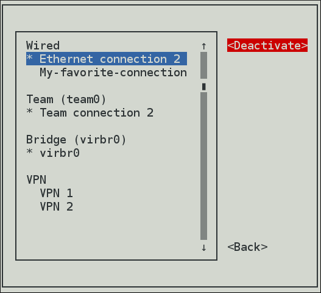Choose the connection again and click the
Activatebutton.Figure 6.4. Reactivating a modified connection with nmtui
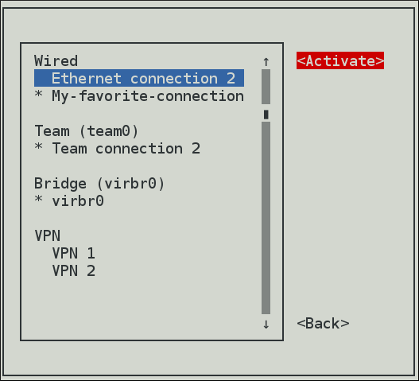
The following commands are also available:
~]$ nmtui edit connection-name
If no connection name is supplied, the selection menu appears. If the connection name is supplied and correctly identified, the relevant Edit connection screen appears.
~]$ nmtui connect connection-nameIf no connection name is supplied, the selection menu appears. If the connection name is supplied and correctly identified, the relevant connection is activated. Any invalid command prints a usage message.
Note that nmtui does not support all types of connections. In particular, you cannot edit VPNs, wireless network connections using WPA Enterprise, or Ethernet connections using 802.1X.
Additional resources
- For more information about the NetworkManager’s tools, see Section 4.5, “NetworkManager tools”
Chapter 7. Getting started with nmcli
This section describes general information about the nmcli utility.
7.1. Understanding nmcli
nmcli (NetworkManager Command Line Interface) is the command-line utility to configure networking through NetworkManager. nmcli is used to create, display, edit, delete, activate, and deactivate network connections, as well as control and display network device status.
The nmcli utility can be used by both users and scripts:
- For servers, headless machines, and terminals, nmcli can be used to control NetworkManager directly, without GUI.
- For scripts, nmcli supports options to change the output to a format better suited for script processing.
Each network device corresponds to a NetworkManager device. The configuration of a network device is completely stored in a single NetworkManager connection. You can perform a network configuration applying a NetworkManager connection to a NetworkManager device.
To get started with nmcli the most common nmcli commands are nmcli device and nmcli connection:
-
The
nmcli devicecommand lists the available network devices in the system.
A device can be:
-
managed- under the NetworkManager control. Amanageddevice may beconnected, meaning that it is activated and configured, ordisconnected, meaning that it is not configured but ready to be activated again. -
unmanaged- NetworkManager does not control it.
For more details on setting a managed or unmanaged device, see Section 7.4, “Setting a device managed or unmanaged with nmcli”.
The nmcli device command can take many arguments. Most notable are: status, show, set, connect, disconnect, modify, delete, wifi. Enter the nmcli device help command to see the full list.
-
The
nmcli connectioncommand lists the available connection profiles in NetworkManager.
Every connection that is active is displayed as green on top of the list. The inactive connections are displayed as white. The DEVICE field identifies the device on which the connection is applied on.
The nmcli connection command can take many arguments to manage connection profiles. Most notable are: show, up, down, add, modify, delete. Enter the nmcli connection help command to see the full list.
If you use the nmcli commands, it is recommended to type a partial nmcli command, and then press the Tab key to auto-complete the command sequence. If multiple completions are possible, then Tab lists them all. This helps users to type commands faster and easier. To enable the nmcli auto-complete feature be sure to install the bash-completion package:
~]# yum install bash-completion
After the package installation, nmcli auto-complete will be available next time you login into a console. To activate it also in the current console, enter:
~]$ source /etc/profile.d/bash_completion.sh
The basic format of using nmcli is:
nmcli [OPTIONS] OBJECT { COMMAND | help }where [OPTIONS] can be optional options, such as:
- -t, terse
This mode can be used for computer script processing as you can see a terse output displaying only the values.
Example 7.1. Viewing a terse output
~]$
nmcli -t deviceens3:ethernet:connected:Profile 1 lo:loopback:unmanaged:- -f, field
This option specifies what fields can be displayed in output. For example, NAME,UUID,TYPE,AUTOCONNECT,ACTIVE,DEVICE,STATE. You can use one or more fields. If you want to use more, do not use space after comma to separate the fields.
Example 7.2. Specifying fields in the output
~]$
nmcli -f DEVICE,TYPE deviceDEVICE TYPE ens3 ethernet lo loopbackor even better for scripting:
~]$
nmcli -t -f DEVICE,TYPE deviceens3:ethernet lo:loopback- -p, pretty
This option causes nmcli to produce human-readable output. For example, values are aligned and headers are printed.
Example 7.3. Viewing an output in pretty mode
~]$
nmcli -p device===================== Status of devices ===================== DEVICE TYPE STATE CONNECTION -------------------------------------------------------------- ens3 ethernet connected Profile 1 lo loopback unmanaged --- -h, help
- Prints help information.
-
where OBJECT can be one of the following options:
general,networking,radio,connection,device,agent, andmonitor.
You can use any prefix of the above options in your commands. For example, nmcli con help, nmcli c help, nmcli connection help generate the same output.
- where COMMAND, the required nmcli command.
- where help is to list available actions related to a specified object:
~]$ nmcli OBJECT helpFor example,
~]$ nmcli c helpAdditional resources
7.2. Overview of nmcli property names and aliases
Prerequisites
Property names are specific names that NetworkManager uses to identify a common option. Following are some of the important nmcli property names:
connection.type-
A type of a specific connection. Allowed values are: adsl, bond, bond-slave, bridge, bridge-slave, bluetooth, cdma, ethernet, gsm, infiniband, olpc-mesh, team, team-slave, vlan, wifi, wimax. Each connection type has type-specific command options. You can see the
TYPE_SPECIFIC_OPTIONSlist in the nmcli(1) man page. For example, agsmconnection requires the access point name specified in anapn. Awifidevice requires the service set identifier specified in assid. connection.interface-name- A device name relevant for the connection. For example, enp1s0.
connection.idA name used for the connection profile. If you do not specify a connection name, one will be generated as follows:
connection.type -connection.interface-nameThe
connection.idis the name of a connection profile and should not be confused with the interface name which denotes a device (wlan0,ens3,em1). However, users can name the connections after interfaces, but they are not the same thing. There can be multiple connection profiles available for a device. This is particularly useful for mobile devices or when switching a network cable back and forth between different devices. Rather than edit the configuration, create different profiles and apply them to the interface as needed. Theidoption also refers to the connection profile name.
The most important options for nmcli commands such as show, up, down are:
id- An identification string assigned by the user to a connection profile. Id can be used in nmcli connection commands to identify a connection. The NAME field in the command output always denotes the connection id. It refers to the same connection profile name that the con-name does.
uuid-
A unique identification string assigned by the system to a connection profile. The
uuidcan be used innmcli connectioncommands to identify a connection.
Aliases and property names
An alias is an alternative name for a property name — aliases are translated to properties internally in nmcli. Aliases are more readable but property names are preferable to use.Both can be used interchangeably.
| Alias | Example | Property | Example | Definition |
|---|---|---|---|---|
| type | type bond | connection.type | connection.type bond | type of a specific connection. Some of the connection types are: bond, bridge, ethernet, wifi, infiniband, vlan |
| ifname | ifname enp1s0 | connection.interface-name | connection.interface-name enp1s0 | name of the device to which a connection belongs to |
| con-name | con-name "My Connection" | connection.id | connection.id "My Connection" | name of a connection |
7.3. Brief selection of nmcli commands
If you use the nmcli commands, it is recommended to type a partial nmcli command, and then press the Tab key to auto-complete the command sequence. If multiple completions are possible, then Tab lists them all. This helps users to type commands faster and easier. To enable the nmcli auto-complete feature be sure to install the bash-completion package:
~]# yum install bash-completion
After the package installation, nmcli auto-complete will be available next time you login into a console. To activate it also in the current console, enter:
~]$ source /etc/profile.d/bash_completion.sh
The following examples show how to use nmcli in specific use cases:
Example 7.4. Viewing all connections
~]$ nmcli connection show
NAME UUID TYPE DEVICE
Profile 1 db1060e9-c164-476f-b2b5-caec62dc1b05 ethernet ens3
bond0 aaf6eb56-73e5-4746-9037-eed42caa8a65 ethernet --Example 7.5. Viewing only currently active connections
~]$ nmcli connection show --active
NAME UUID TYPE DEVICE
Profile 1 db1060e9-c164-476f-b2b5-caec62dc1b05 ethernet ens3Example 7.6. Activating a connection
Use the up argument to activate a connection.
~]$ nmcli connection show
NAME UUID TYPE DEVICE
Profile 1 db1060e9-c164-476f-b2b5-caec62dc1b05 ethernet ens3
bond0 aaf6eb56-73e5-4746-9037-eed42caa8a65 ethernet --~]$ nmcli connection up id bond0
Connection successfully activated (D-Bus active path: /org/freedesktop/NetworkManager/ActiveConnection/4)~]$ nmcli connection show
NAME UUID TYPE DEVICE
Profile 1 db1060e9-c164-476f-b2b5-caec62dc1b05 ethernet ens3
bond0 aaf6eb56-73e5-4746-9037-eed42caa8a65 ethernet bond0Example 7.7. Deactivating a specific active connection
Use the down argument to deactivate a specific active connection:
~]$ nmcli connection down id bond0~]$ nmcli connection show
NAME UUID TYPE DEVICE
Profile 1 db1060e9-c164-476f-b2b5-caec62dc1b05 ethernet ens3
bond0 aaf6eb56-73e5-4746-9037-eed42caa8a65 ethernet --Example 7.8. Disconnecting a device preventing it from automatically started again
~]$ nmcli device disconnect id bond0
The nmcli connection down command, deactivates a connection from a device without preventing the device from further auto-activation. The nmcli device disconnect command, disconnects a device and prevent the device from automatically activating further connections without manual intervention. If the connection has the connection.autoconnect flag set to yes, the connection automatically starts on the disconnected device again. In this case, use the nmcli device disconnect command instead of the nmcli connection down command.
Example 7.9. Viewing only devices recognized by NetworkManager and their state
~]$ nmcli device status
DEVICE TYPE STATE CONNECTION
ens3 ethernet connected Profile 1
lo loopback unmanaged --Example 7.10. Viewing general information for a device
~]$ nmcli device show
GENERAL.DEVICE: ens3
GENERAL.TYPE: ethernet
GENERAL.HWADDR: 52:54:00:0A:2F:ED
GENERAL.MTU: 1500
GENERAL.STATE: 100 (connected)
GENERAL.CONNECTION: ens3
[...]Example 7.11. Checking the overall status of NetworkManager
~]$ nmcli general status
STATE CONNECTIVITY WIFI-HW WIFI WWAN-HW WWAN
connected full enabled enabled enabled enabledIn terse mode:
~]$ nmcli -t -f STATE general
connectedExample 7.12. Viewing NetworkManager logging status
~]$ nmcli general logging
LEVEL DOMAINS
INFO PLATFORM,RFKILL,ETHER,WIFI,BT,MB,DHCP4,DHCP6,PPP,WIFI_SCAN,IP4,IP6,A
UTOIP4,DNS,VPN,SHARING,SUPPLICANT,AGENTS,SETTINGS,SUSPEND,CORE,DEVICE,OLPC,
WIMAX,INFINIBAND,FIREWALL,ADSL,BOND,VLAN,BRIDGE,DBUS_PROPS,TEAM,CONCHECK,DC
B,DISPATCHYou can also use the following abbreviations of the nmcli commands:
Table 7.1. Abbreviations of some nmcli commands
| nmcli command | abbreviation |
|---|---|
| nmcli general status | nmcli g |
| nmcli general logging | nmcli g log |
| nmcli connection show | nmcli con show or nmcli c |
| nmcli connection show --active | nmcli con show -a or nmcli c -a |
| nmcli device status | nmcli dev or nmcli d |
| nmcli device show | nmcli dev show or nmcli d show |
Additional resources
- For more information on the comprehensive list of nmcli options, see the nmcli(1) man page.
- For more examples, see the nmcli-examples(5) man page.
- Section 7.5, “Creating a connection profile with nmcli”
7.4. Setting a device managed or unmanaged with nmcli
Prerequisites
Procedure
To list the currently available network connections:
~]$
nmcli con showNAME UUID TYPE DEVICE Auto Ethernet 9b7f2511-5432-40ae-b091-af2457dfd988 802-3-ethernet -- ens3 fb157a65-ad32-47ed-858c-102a48e064a2 802-3-ethernet ens3 MyWiFi 91451385-4eb8-4080-8b82-720aab8328dd 802-11-wireless wlan0Note that the
NAMEfield in the output always denotes the connection ID (name). It is not the interface name even though it might look the same. In the second connection shown above, ens3 in theNAMEfield is the connection ID given by the user to the profile applied to the interface ens3. In the last connection shown, the user has assigned the connection ID MyWiFi to the interface wlan0.Adding an Ethernet connection means creating a configuration profile which is then assigned to a device. Before creating a new profile, review the available devices as follows:
~]$
nmcli device statusDEVICE TYPE STATE CONNECTION ens3 ethernet disconnected -- ens9 ethernet disconnected -- lo loopback unmanaged --To set the device unmanaged by the NetworkManager:
~]$
nmcli device set ifname managed no
For example, to set enp1s0 unmanaged:
~]$ nmcli device status
DEVICE TYPE STATE CONNECTION
bond0 bond connected bond0
virbr0 bridge connected virbr0
enp7s0 ethernet connected bond-slave-enp7s0
enp1s0 ethernet connected bond-slave-enp1s0
enp8s0 ethernet unmanaged --~]$ nmcli device set enp1s0 managed no~]$ nmcli device status
DEVICE TYPE STATE CONNECTION
bond0 bond connected bond0
virbr0 bridge connected virbr0
enp7s0 ethernet connected bond-slave-enp7s0
enp1s0 ethernet unmanaged --
enp8s0 ethernet unmanaged --When you set the device unmanaged, NetworkManager does not control it. If the device you want to configure is listed as unmanaged, no nmcli command has any effect on this device. However, the device is still connected.
Additional resources
- For more information, see the nmcli(1) man page.
7.5. Creating a connection profile with nmcli
You can create a connection profile to be associated with a device.
Prerequisites
If you use the nmcli commands, it is recommended to type a partial nmcli command, and then press the Tab key to auto-complete the command sequence. If multiple completions are possible, then Tab lists them all. This helps users to type commands faster and easier. To enable the nmcli auto-complete feature be sure to install the bash-completion package:
~]# yum install bash-completion
After the package installation, nmcli auto-complete will be available next time you login into a console. To activate it also in the current console, enter:
~]$ source /etc/profile.d/bash_completion.sh
Procedure
The basic format to create a new profile for NetworkManager using nmcli:
nmcli c add {COMMON_OPTIONS} [IP_OPTIONS]/[NETMASK] [GATEWAY]-
where
{COMMON_OPTIONS}are the aliases or property names, see Aliases and Property names. where
[IP_OPTIONS]are the IP addresses:-
For IPv4 addresses:
ip4 -
For IPv6 addresses:
ip6
-
For IPv4 addresses:
-
where
[NETMASK]is the network mask width. For example,255.255.255.0is the network mask for the prefix 198.51.100.0/24. where
[GATEWAY]is the gateway information:-
For IPv4 addresses:
gw4 -
For IPv6 addresses:
gw6
-
For IPv4 addresses:
nmcli connection add type ethernet con-name connection-name ifname interface-name ip4 address/network mask gw4 addressTo create a connection profile with an IPv4 address:
~]$
nmcli c add type ethernet ifname enp1s0 con-name "My Connection" ip4 192.168.2.100/24 gw4 192.168.2.1Connection 'My Connection' (f0c23472-1aec-4e84-8f1b-be8a2ecbeade) successfully added.To activate the created connection:
~]$
nmcli c up _"My Connection"To view the created connection:
~]$
nmcli c show "My Connection"
Note that the nmcli c show con-name command displays all the properties present in the connection, even those that are empty or have a default value. If the output is longer than a terminal page, nmcli generates a pager to allow an easy navigation on the output. In the pager, use arrows to move up and down and the q key to quit.
For a more compact display of the connection, use the -o option:
~]$ nmcli -o c show "My Connection"The nmcli -o c show con-name command still displays the connection content, but omits empty properties or those that are set to a default value. This usually results in a shorter output that is more readable.
Additional resources
-
See the
nm-settings(5)man page for more information on properties and their settings.
7.6. Using the nmcli interactive connection editor
The nmcli tool has an interactive connection editor. It allows you to change connection parameters according to your needs. To use it:
~]$ nmcli con editYou should enter a valid connection type from the list displayed. Then, you are able to modify its parameters.
~]$nmcli con editValid connection types: generic, 802-3-ethernet (ethernet), pppoe, 802-11-wireless (wifi), wimax, gsm, cdma, infiniband, adsl, bluetooth, vpn, 802-11-olpc-mesh (olpc-mesh), vlan, bond, team, bridge, bond-slave, team-slave, bridge-slave, no-slave, tun, ip-tunnel, macsec, macvlan, vxlan, dummy Enter connection type:ethernet===| nmcli interactive connection editor |=== Adding a new '802-11-wireless' connection Type 'help' or '?' for available commands. Type 'describe [<setting>.<prop>]' for detailed property description. You may edit the following settings: connection, 802-11-wireless (wifi), 802-11-wireless-security (wifi-sec), 802-1x, ipv4, ipv6, proxy nmcli>
It is possible now to edit the ethernet connection settings. To get the list of available commands, type help or ?:
nmcli> ?
------------------------------------------------------------------------------
---[ Main menu ]---
goto [<setting> | <prop>] :: go to a setting or property
remove <setting>[.<prop>] | <prop> :: remove setting or reset property value
set [<setting>.<prop> <value>] :: set property value
describe [<setting>.<prop>] :: describe property
print [all | <setting>[.<prop>]] :: print the connection
verify [all | fix] :: verify the connection
save [persistent|temporary] :: save the connection
activate [<ifname>] [/<ap>|<nsp>] :: activate the connection
back :: go one level up (back)
help/? [<command>] :: print this help
nmcli <conf-option> <value> :: nmcli configuration
quit :: exit nmcli
------------------------------------------------------------------------------
nmcli>
To exit, enter the quit command.
Example 7.13. Adding a new Ethernet connection using the nmcli interactive connection editor
~]$nmcli con editValid connection types: generic, 802-3-ethernet (ethernet), pppoe, 802-11-wireless (wifi), wimax, gsm, cdma, infiniband, adsl, bluetooth, vpn, 802-11-olpc-mesh (olpc-mesh), vlan, bond, team, bridge, bond-slave, team-slave, bridge-slave, no-slave, tun, ip-tunnel, macsec, macvlan, vxlan, dummy Enter connection type:ethernet===| nmcli interactive connection editor |=== Adding a new '802-3-ethernet' connection Type 'help' or '?' for available commands. Type 'describe [<setting>.<prop>]' for detailed property description. You may edit the following settings: connection, 802-3-ethernet (ethernet), 802-1x, dcb, ipv4, ipv6, proxy nmcli>set connection.id new_enp7s0nmcli>set connection.interface-name enp7s0nmcli>set connection.autoconnect yesnmcli>saveSaving the connection with 'autoconnect=yes'. That might result in an immediate activation of the connection. Do you still want to save? (yes/no) [yes]yesConnection 'new_enp7s0' (34ac8f9a-e9d8-4e0b-9751-d5dc87cc0467) successfully saved. nmcli>quit
A new network interface configuration file is created in the /etc/sysconfig/network-scripts directory:
~]# ls -lrt /etc/sysconfig/network-scripts/ifcfg*
-rw-r--r--. 1 root root 254 Aug 15 2017 /etc/sysconfig/network-scripts/ifcfg-lo
-rw-r--r--. 1 root root 304 Apr 26 22:14 /etc/sysconfig/network-scripts/ifcfg-ens3
-rw-r--r--. 1 root root 266 Aug 6 11:03 /etc/sysconfig/network-scripts/ifcfg-new_enp7s07.7. Modifying a connection profile with nmcli
You can modify the existing configuration of a connection profile.
Prerequisites
If you use the nmcli commands, it is recommended to type a partial nmcli command, and then press the Tab key to auto-complete the command sequence. If multiple completions are possible, then Tab lists them all. This helps users to type commands faster and easier. To enable the nmcli auto-complete feature be sure to install the bash-completion package:
~]# yum install bash-completion
After the package installation, nmcli auto-complete will be available next time you login into a console. To activate it also in the current console, enter:
~]$ source /etc/profile.d/bash_completion.sh
Procedure
To modify one or more properties of a connection profile, use the following command:
~]$
nmcli c modifyFor example, to change the connection.id from "My Connection" to "My favorite connection" and the connection.interface-name to enp7s0:
~]$
nmcli c modify "My Connection" connection.id "My favorite connection" connection.interface-name enp7s0To apply changes after a modified connection using nmcli, activate again the connection by entering:
~]$
nmcli con up "My favorite connection"Connection successfully activated (D-Bus active path: /org/freedesktop/NetworkManager/ActiveConnection/16)-
To view the modified connection, enter the
nmcli con show con-namecommand.
Chapter 8. Getting started with configuring networking using the GNOME GUI
You can configure a network interface using the following Graphical User Interface (GUI) ways:
- the GNOME Shell network connection icon on the top right of the desktop
- the GNOME control-center application
- the GNOME nm-connection-editor application
8.1. Connecting to a network using the GNOME shell network connection icon
To access the Network settings, click on the GNOME Shell network connection icon in the top right-hand corner of the screen to open its menu:
Figure 8.1. The network connection icon menu
When you click on the GNOME Shell network connection icon, you can see:
-
A list of categorized networks you are currently connected to (such as
WiredandWi-Fi). -
A list of all
Available Networksthat NetworkManager has detected. If you are connected to a network, this is indicated on the left of the connection name. Options for connecting to any configured Virtual Private Networks (VPNs)
and
-
An option for selecting the
Network Settingsmenu entry.
8.2. Creating a network connection using control-center
You can create a network connection through the GNOME control-center application, which is a graphical user interface that provides a view of available network devices and their current configuration.
This procedures describes how to create a new wired, wireless, vpn connection using control-center:
Procedure
Press the Super key to enter the Activities Overview, type
Settings, and press Enter. Then, select theNetworktab on the left-hand side, and theNetworksettings tool appears:Figure 8.2. Opening the network settings window
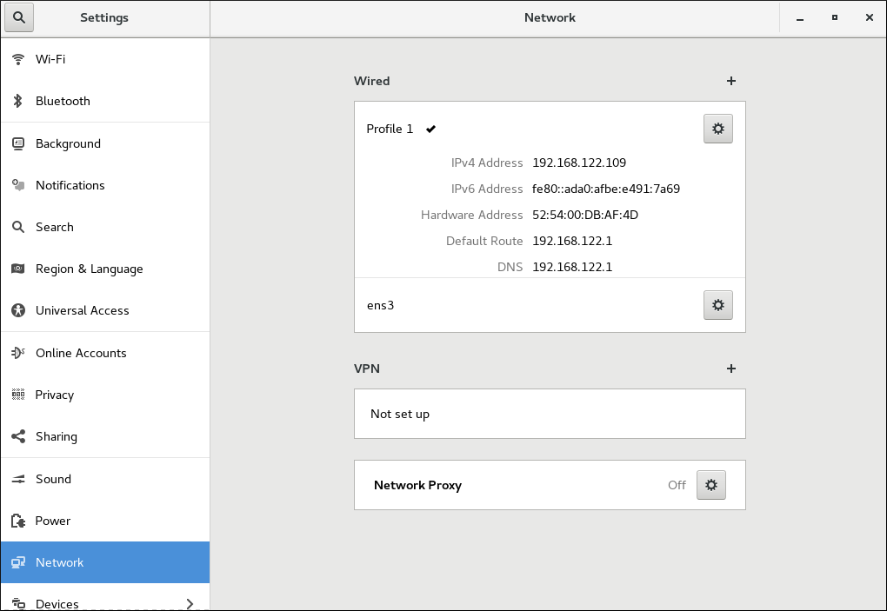Click the plus button to add a new connection:
-
For Wired connections, click the plus button next to
Wiredentry and configure the connection. -
For VPN connections, click the plus button next to
VPNentry. If you want to add anIPsec VPN, click onIPsec based VPNand configure the connection. -
For Wi-Fi connections, click the
Wi-Fientry on the left-hand side in theSettingsmenu and configure the connection.
-
For Wired connections, click the plus button next to
Chapter 9. Configuring an Ethernet connection
This section describes how to configure an Ethernet connection with static and dynamic IP addresses.
9.1. Configuring a static Ethernet connection with nmcli
Prerequisites
Procedure
Setting two
IPv4DNSserver addresses:~]$
nmcli con mod test-lab ipv4.dns "8.8.8.8 8.8.4.4"Note that this will replace any previously set
DNSservers.Alternatively, to set two
IPv6DNSserver addresses:~]$
nmcli con mod test-lab ipv6.dns "2001:4860:4860::8888 2001:4860:4860::8844"Note that this will replace any previously set
DNSservers.To add additional
DNSservers to any previously set, use the+prefix:~]$
nmcli con mod test-lab +ipv4.dns "8.8.8.8 8.8.4.4"~]$ nmcli con mod test-lab +ipv6.dns "2001:4860:4860::8888 2001:4860:4860::8844"Optionally, set a DNS search domain:
~]$
nmcli con mod test-lab ipv4.dns-search "example.com"To activate the new Ethernet connection:
~]$
nmcli con up test-lab ifname ens9Connection successfully activated (D-Bus active path: /org/freedesktop/NetworkManager/ActiveConnection/6)To review the status of the devices and connections:
~]$
nmcli device statusDEVICE TYPE STATE CONNECTION ens3 ethernet connected my-office ens9 ethernet connected test-lab lo loopback unmanaged --- To view detailed information about the newly configured connection:
~]$ nmcli -p con show test-lab
===============================================================================
Connection profile details (test-lab)
===============================================================================
connection.id: test-lab
connection.uuid: 05abfd5e-324e-4461-844e-8501ba704773
connection.interface-name: ens9
connection.type: 802-3-ethernet
connection.autoconnect: yes
connection.timestamp: 1410428968
connection.read-only: no
connection.permissions:
connection.zone: --
connection.master: --
connection.slave-type: --
connection.secondaries:
connection.gateway-ping-timeout: 0
[output truncated]
The use of the -p, --pretty option adds a title banner and section breaks to the output.
9.2. Configuring a static Ethernet connection using the nmcli interactive editor
To configure a static Ethernet connection using the nmcli interactive editor:
~]$nmcli con edit type ethernet con-name ens3===| nmcli interactive connection editor |=== Adding a new '802-3-ethernet' connection Type 'help' or '?' for available commands. Type 'describe [>setting<.>prop<]' for detailed property description. You may edit the following settings: connection, 802-3-ethernet (ethernet), 802-1x, ipv4, ipv6, dcb nmcli>set ipv4.addresses 192.168.122.88/24Do you also want to set 'ipv4.method' to 'manual'? [yes]:yesnmcli>set ipv4.dns 192.168.122.1nmcli>set ipv4.dns-search example.comnmcli>save persistentSaving the connection with 'autoconnect=yes'. That might result in an immediate activation of the connection. Do you still want to save? [yes]yesConnection 'ens3' (704a5666-8cbd-4d89-b5f9-fa65a3dbc916) successfully saved. nmcli>quit
The default action is to save the connection profile as persistent. If required, the profile can be held in memory only, until the next restart, by means of the save temporary command.
Additional resources
-
See the
nm-settings(5)man page for more information on properties and their settings.
9.3. Configuring a dynamic Ethernet connection with nmcli
Prerequisites
Procedure
To change the host name sent by a host to a
DHCPserver, modify thedhcp-hostnameproperty:~]$
nmcli con modify my-office my-office ipv4.dhcp-hostname host-name ipv6.dhcp-hostname host-nameTo change the
IPv4client ID sent by a host to aDHCPserver, modify thedhcp-client-idproperty:~]$
nmcli con modify my-office my-office ipv4.dhcp-client-id client-ID-stringThere is no
dhcp-client-idproperty forIPv6, dhclient to create an identifier forIPv6. See thedhclient(8)man page for details.To ignore the
DNSservers sent to a host by aDHCPserver, modify theignore-auto-dnsproperty:~]$
nmcli con modify my-office my-office ipv4.ignore-auto-dns yes ipv6.ignore-auto-dns yes
9.4. Configuring a dynamic Ethernet connection using the interactive editor
To configure a dynamic Ethernet connection using the interactive editor:
~]$nmcli con edit type ethernet con-name ens3===| nmcli interactive connection editor |=== Adding a new '802-3-ethernet' connection Type 'help' or '?' for available commands. Type 'describe [<setting>.<prop>]' for detailed property description. You may edit the following settings: connection, 802-3-ethernet (ethernet), 802-1x, ipv4, ipv6, dcb nmcli>describe ipv4.method=== [method] === [NM property description] IPv4 configuration method. If 'auto' is specified then the appropriate automatic method (DHCP, PPP, etc) is used for the interface and most other properties can be left unset. If 'link-local' is specified, then a link-local address in the 169.254/16 range will be assigned to the interface. If 'manual' is specified, static IP addressing is used and at least one IP address must be given in the 'addresses' property. If 'shared' is specified (indicating that this connection will provide network access to other computers) then the interface is assigned an address in the 10.42.x.1/24 range and a DHCP and forwarding DNS server are started, and the interface is NAT-ed to the current default network connection. 'disabled' means IPv4 will not be used on this connection. This property must be set. nmcli>set ipv4.method autonmcli>saveSaving the connection with 'autoconnect=yes'. That might result in an immediate activation of the connection. Do you still want to save? [yes]yesConnection 'ens3' (090b61f7-540f-4dd6-bf1f-a905831fc287) successfully saved. nmcli>quit
The default action is to save the connection profile as persistent. If required, the profile can be held in memory only, until the next restart, by means of the save temporary command.
Additional resources
-
See the
nm-settings(5)man page for more information on properties and their settings.
9.5. Configuring an Ethernet connection using control-center
You can configure a network connection through the GNOME control-center application.
Procedure
-
Press the Super key to enter the Activities Overview, type
Settingsand press Enter. Then, select theNetworkmenu entry on the left-hand side, and theNetworksettings tool appears, see Opening the Network Settings Window Select the
Wirednetwork interfaceThe system creates and configures a single wired connection profile called
Wiredby default. More than one profile can be created for an interface and applied as needed. The default profile cannot be deleted but its settings can be changed.-
Edit the default
Wiredprofile by clicking the gear wheel icon to edit an existing connection or click the plus button and then set the configuration options for a new connection.
When you add a new connection by clicking the plus button, NetworkManager creates a new configuration file for that connection and then opens the same dialog that is used for editing an existing connection. The difference between these dialogs is that an existing connection profile has a Details menu entry.
Basic configuration options
You can see the following configuration settings in the Wired dialog, by selecting the Identity menu entry:
Figure 9.1. Basic configuration options of a wired connection
-
Name— Enter a descriptive name for your network connection. This name will be used to list this connection in the menu of theNetworkwindow. -
MAC Address— Select the MAC address of the interface this profile must be applied to. -
Cloned Address— If required, enter a different MAC address to use. -
MTU— If required, enter a specific maximum transmission unit (MTU) to use. The MTU value represents the size in bytes of the largest packet that the link layer will transmit. This value defaults to1500and does not generally need to be specified or changed.
Configuring IPv4 settings for wired with control-center
You can further configure IPv4 settings in a wired connection. In the Wired dialog, click the IPv4 menu entry:
Figure 9.2. Configuring IPv4 Settings
The IPv4 menu entry allows you to configure:
-
the
IPv4 Methodused to connect to a network -
DNSand -
Routes
IPv4 Method
Automatic (DHCP) — Choose this option if the network you are connecting to uses Router Advertisements (RA) or a DHCP server to assign dynamic IP addresses.
Link-Local Only — Choose this option if the network you are connecting to does not have a DHCP server and you do not want to assign IP addresses manually. Random addresses will be assigned as per RFC 3927 with prefix 169.254/16.
Manual — Choose this option if you want to assign IP addresses manually.
Disable — IPv4 is disabled for this connection.
DNS
In the DNS section, when Automatic is ON. Switch Automatic to OFF to enter the IP address of a DNS server you want to use separating the IPs by comma.
Routes
In the Routes section, when Automatic is ON, routes from Router Advertisements (RA) or DHCP are used, but you can also add additional static routes. When OFF, only static routes are used.
Address — Enter the IP address of a remote network, sub-net, or host.
Netmask — The netmask or prefix length of the IP address entered above.
Gateway — The IP address of the gateway leading to the remote network, sub-net, or host entered above.
Metric — A network cost, a preference value to give to this route. Lower values will be preferred over higher values.
Use this connection only for resources on its network
Select this check box to prevent the connection from becoming the default route. Typical examples are where a connection is a VPN tunnel or a leased line to a head office and you do not want any Internet-bound traffic to pass over the connection. Selecting this option means that only traffic specifically destined for routes learned automatically over the connection or entered here manually will be routed over the connection.
Configuring IPv6 settings for wired with control center
Alternatively, to configure IPv6 settings in a wired connection, click the IPv6 menu entry:
Figure 9.3. Configuring IPv6 settings
The IPv6 menu entry allows you to configure:
-
the
IPv6 Methodused to connect to a network -
DNSand -
Routes
IPv6 Method
Automatic — Choose this option to use IPv6 Stateless Address AutoConfiguration (SLAAC) to create an automatic, stateless configuration based on the hardware address and Router Advertisements (RA).
Automatic, DHCP only — Choose this option to not use RA, but request information from DHCPv6 directly to create a stateful configuration.
Link-Local Only — Choose this option if the network you are connecting to does not have a DHCP server and you do not want to assign IP addresses manually. Random addresses will be assigned as per RFC 4862 with prefix FE80::0.
Manual — Choose this option if you want to assign IP addresses manually.
Disabled — IPv6 is disabled for this connection.
Configuring 802.1X security for wired with control-center
802.1X security is the name of the IEEE standard for port-based Network Access Control (PNAC). It is also called WPA Enterprise. 802.1X security is a way of controlling access to a logical network from a physical one. All clients who want to join the logical network must authenticate with the server (a router, for example) using the correct 802.1X authentication method.
To configure 802.1X Security settings in a wired connection, click the Security menu entry:
Figure 9.4. Configuring 802.1X security for a wired with control-center
To enable settings configuration, set the symbolic power button to ON, and select from one of following authentication methods:
-
TLSfor Transport Layer Security and proceed to Configuring TLS Settings -
PWDfor Password and proceed to Configuring PWD Settings -
FASTfor Flexible Authentication through Secure Tunneling and proceed to Configuring FAST Settings -
Select
Tunneled TLSfor Tunneled Transport Layer Security, otherwise known as TTLS, or EAP-TTLS and proceed to Configuring Tunneled TLS Settings -
Select
Protected EAP (PEAP)for Protected Extensible Authentication Protocol and proceed to Configuring Protected EAP PEAP Settings
Configuring TLS settings
With Transport Layer Security (TLS), the client and server mutually authenticate using the TLS protocol.
Using TLS security requires the overhead of a public key infrastructure (PKI) to manage certificates. The benefit of using TLS security is that a compromised password does not allow access to the (W)LAN: an intruder must also have access to the authenticating client’s private key.
NetworkManager does not determine the version of TLS supported. NetworkManager gathers the parameters entered by the user and passes them to the daemon, wpa_supplicant, that handles the procedure. It in turn uses OpenSSL to establish the TLS tunnel. OpenSSL itself negotiates the SSL/TLS protocol version. It uses the highest version both ends support.
To configure TLS settings, follow the procedure described in Section 9.5, “Configuring an Ethernet connection using control-center”. The following configuration settings are available:
Identity- Provide the identity of this server.
User certificate- Click to browse for, and select, a personal X.509 certificate file encoded with Distinguished Encoding Rules (DER) or Privacy Enhanced Mail (PEM).
CA certificate- Click to browse for, and select, an X.509 certificate authority certificate file encoded with Distinguished Encoding Rules (DER) or Privacy Enhanced Mail (PEM).
Private key- Click to browse for, and select, a private key file encoded with Distinguished Encoding Rules (DER), Privacy Enhanced Mail (PEM), or the Personal Information Exchange Syntax Standard (PKCS #12).
Private key password-
Enter the password for the private key in the
Private keyfield. SelectShow passwordto make the password visible as you type it.
Configuring PWD settings
With Password (PWD), you can specify the username and the password.
Username- Enter the user name to be used in the authentication process.
Password- Enter the password to be used in the authentication process.
Configuring FAST settings
To configure FAST settings, follow the procedure described in Section 9.5, “Configuring an Ethernet connection using control-center”. The following configuration settings are available:
Anonymous Identity- Provide the identity of this server.
Allow automatic PAC provisioning- Select the check box to enable and then select from Anonymous, Authenticated, and Both.
PAC file- Click to browse for, and select, a protected access credential (PAC) file.
Inner authenticationGTC— Generic Token Card.MSCHAPv2— Microsoft Challenge Handshake Authentication Protocol version 2.Username- Enter the user name to be used in the authentication process.
Password- Enter the password to be used in the authentication process.
Configuring tunneled TLS settings
To configure Tunneled TLS settings, follow the procedure described in Section 9.5, “Configuring an Ethernet connection using control-center”. The following configuration settings are available:
Anonymous identity- This value is used as the unencrypted identity.
CA certificate- Click to browse for, and select, a Certificate Authority’s certificate.
Inner authenticationPAP— Password Authentication Protocol.MSCHAP— Challenge Handshake Authentication Protocol.MSCHAPv2— Microsoft Challenge Handshake Authentication Protocol version 2.MSCHAPv2 (no EAP)— Microsoft Challenge Handshake Authentication Protocol version 2 without Extensive Authentication Protocol.CHAP— Challenge Handshake Authentication Protocol.MD5— Message Digest 5, a cryptographic hash function.GTC— Generic Token Card.Username- Enter the user name to be used in the authentication process.
Password- Enter the password to be used in the authentication process.
Configuring protected EAP (PEAP) settings
To configure Protected EAP (PEAP) settings, follow the procedure described in Section 9.5, “Configuring an Ethernet connection using control-center”. The following configuration settings are available:
Anonymous Identity- This value is used as the unencrypted identity.
CA certificate- Click to browse for, and select, a Certificate Authority’s certificate.
PEAP version- The version of Protected EAP to use. Automatic, 0 or 1.
Inner authenticationMSCHAPv2— Microsoft Challenge Handshake Authentication Protocol version 2.MD5— Message Digest 5, a cryptographic hash function.GTC— Generic Token Card.Username- Enter the user name to be used in the authentication process.
Password- Enter the password to be used in the authentication process.
9.6. Configuring an Ethernet connection using nm-connection-editor
Ethernet connections are the most frequently used connection types in physical or virtual servers. This section describes how to configure this connection type in Red Hat Enterprise Linux.
Prerequisites
- A physical or virtual Ethernet device exists in the server’s configuration.
Procedure
Open a terminal, and enter:
$ nm-connection-editor
- Click the button to add a new connection.
-
Select the
Ethernetconnection type, and click . -
On the
Ethernettab, select a device and, optionally, further Ethernet-related settings. 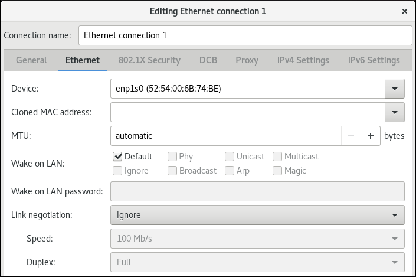 -
On the
IPv4 Settingstab, configure the IPv4 settings. For example, set a static IPv4 address, network mask, default gateway, and DNS server: 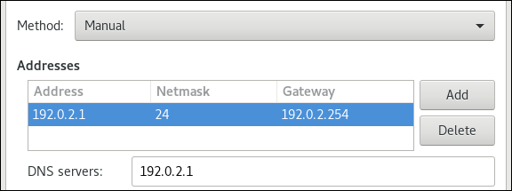 -
On the
IPv6 Settingstab, configure the IPv6 settings. For example, set a static IPv6 address, network mask, default gateway, and DNS server: 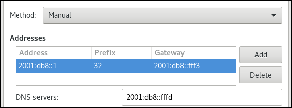 - Save the connection.
-
Close
nm-connection-editor.
Chapter 10. Managing Wi-Fi connections
This section describes how to configure and manage Wi-Fi connections.
10.1. Configuring a Wi-Fi connection using nmcli
Prerequisites
- The nmcli utility to be installed.
Make sure that the WiFi radio is on (default):
~]$
nmcli radio wifi on
Procedure
To create a Wi-Fi connection profile with static
IPconfiguration:~]$
nmcli con add con-name MyCafe ifname wlan0 type wifi ssid MyCafe ` `ip4 192.168.100.101/24 gw4 192.168.100.1Set a DNS server. For example, to set
192.160.100.1as the DNS server:~]$
nmcli con modify con-name MyCafe ipv4.dns "192.160.100.1"Optionally, set a DNS search domain. For example, to set the search domain to
example.com:~]$
nmcli con modify con-name MyCafe ipv4.dns-search "example.com"To check a specific property, for example
mtu:~]$
nmcli connection show id MyCafe | grep mtu802-11-wireless.mtu: autoTo change the property of a setting:
~]$
nmcli connection modify id MyCafe 802-11-wireless.mtu 1350To verify the change:
~]$
nmcli connection show id MyCafe | grep mtu802-11-wireless.mtu: 1350
Additional resources
See the nm-settings(5) man page for more information on properties and their settings.
10.2. Configuring a Wi-Fi connection using control-center
When you connect to a Wi-Fi, the network settings are prefilled depending on the current network connection. This means that the settings will be detected automatically when the interface connects to a network.
This procedure describes how to use control-center to manually configure the Wi-Fi settings.
Procedure
-
Press the Super key to enter the
Activities Overview, typeWi-Fiand press Enter. In the left-hand-side menu entry you see the list of available networks. Select the gear wheel icon to the right of the
Wi-Ficonnection name that you want to edit, and the editing connection dialog appears. The Details menu window shows the connection details where you can make further configuration.Options
-
If you select
Connect automatically, NetworkManager auto-connects to this connection whenever NetworkManager detects that it is available. If you do not want NetworkManager to connect automatically, clear the check box. Note that when the check box is clear, you have to select that connection manually in the network connection icon’s menu to cause it to connect. -
To make a connection available to other users, select the
Make available to other userscheck box. You can also control the background data usage. If you leave
Restrict background data usageunspecified (default), then NetworkManager tries to download data that you are actively using. Otherwise, select the check box and NetworkManager sets the connection as metered, and applies restriction on the background data usage.NoteTo delete a
Wi-Ficonnection, click theForget Connectionred box.
-
If you select
Select the Identity menu entry to see the basic configuration options.
SSID— The Service Set Identifier (SSID) of the access point (AP).BSSID— The Basic Service Set Identifier (BSSID) is the MAC address, also known as a hardware address, of the specific wireless access point you are connecting to when inInfrastructuremode. This field is blank by default, and you are able to connect to a wireless access point bySSIDwithout having to specify itsBSSID. If the BSSID is specified, it will force the system to associate to a specific access point only. For ad-hoc networks, theBSSIDis generated randomly by the mac80211 subsystem when the ad-hoc network is created. It is not displayed by NetworkManager.MAC address— The MAC address allows you to associate a specific wireless adapter with a specific connection (or connections).Cloned Address— A cloned MAC address to use in place of the real hardware address. Leave blank unless required.For further IP address configuration , select the IPv4 and IPv6 menu entries.
By default, both
IPv4andIPv6are set to automatic configuration depending on current network settings. This means that addresses such as the local IP address, DNS address, and other settings will be detected automatically when the interface connects to a network. If a DHCP server assigns the IP configuration in this network, this is sufficient, but you can also provide static configuration in theIPv4andIPv6Settings. In the IPv4 and IPv6 menu entries, you can see the following settings:IPv4 Method-
Automatic (DHCP)— Choose this option if the network you are connecting to uses Router Advertisements (RA) or aDHCPserver to assign dynamic IP addresses. You can see the assigned IP address in the Details menu entry. -
Link-Local Only— Choose this option if the network you are connecting to does not have aDHCPserver and you do not want to assign IP addresses manually. Random addresses will be assigned as per RFC 3927 with prefix169.254/16. -
Manual— Choose this option if you want to assign IP addresses manually. -
Disable—IPv4is disabled for this connection.
-
DNSIf
AutomaticisON, and no DHCP server is available that assigns DNS servers to this connection, switch it toOFFto enter the IP address of a DNS server separating the IPs by comma.RoutesNote that in the
Routessection, whenAutomaticisON, routes from Router Advertisements (RA) or DHCP are used, but you can also add additional static routes. WhenOFF, only static routes are used.-
Address— Enter theIPaddress of a remote network, sub-net, or host. -
Netmask— The netmask or prefix length of the IP address entered above. -
Gateway— The IP address of the gateway leading to the remote network, sub-net, or host entered above. -
Metric— A network cost, a preference value to give to this route. Lower values will be preferred over higher values.
-
Use this connection only for resources on its networkSelect this check box to prevent the connection from becoming the default route.
Alternatively, to configure
IPv6settings in aWi-Ficonnection, select the menu entry:IPv6 Method-
Automatic— Choose this option to useIPv6Stateless Address AutoConfiguration (SLAAC) to create an automatic, stateless configuration based on the hardware address and Router Advertisements (RA). -
Automatic, DHCP only— Choose this option to not use RA, but request information fromDHCPv6directly to create a stateful configuration. -
Link-Local Only— Choose this option if the network you are connecting to does not have aDHCPserver and you do not want to assign IP addresses manually. Random addresses will be assigned as per RFC 4862 with prefixFE80::0. -
Manual— Choose this option if you want to assign IP addresses manually. -
Disable—IPv6is disabled for this connection.
-
-
The
DNS,Routes,Use this connection only for resources on its networkfields are common toIPv4settings.
To configure
Securitysettings in aWi-Ficonnection, select the Security menu entry. The following configuration options are available:Security
-
None— Do not encrypt the Wi-Fi connection. -
WEP 40/128-bit Key— Wired Equivalent Privacy (WEP), from the IEEE 802.11 standard. Uses a single pre-shared key (PSK). WEP 128-bit Passphrase— An MD5 hash of the passphrase to derive a WEP key.WarningIf the
Wi-Fiuse no encryption,WEP, orWPA, do not use the network because it is insecure and everyone can read the data you send over this network.-
LEAP— Lightweight Extensible Authentication Protocol, from Cisco Systems. -
Dynamic WEP (802.1X)— WEP keys are changed dynamically. -
WPA & WPA2 Personal— Wi-Fi Protected Access (WPA), from the draft IEEE 802.11i standard. A replacement for WEP. Wi-Fi Protected Access II (WPA2), from the 802.11i-2004 standard. Personal mode uses a pre-shared key (WPA-PSK). -
WPA & WPA2 Enterprise— WPA for use with a RADIUS authentication server to provide IEEE 802.1X network access control.
-
- Password — Enter the password to be used in the authentication process.
- Once you have finished the configuration, click the button to save it.
When you add a new connection by clicking the button, NetworkManager creates a new configuration file for that connection and then opens the same dialog that is used for editing an existing connection. The difference between these dialogs is that an existing connection profile has a Details menu entry.
10.3. Connecting to a Wi-Fi network with nmcli
This procedure describes how to connect to a wireless connection using the nmcli utility.
Prerequisites
- The nmcli utility to be installed.
Make sure that the WiFi radio is on (default):
~]$
nmcli radio wifi on
Procedure
To refresh the available Wi-Fi connection list:
~]$
nmcli device wifi rescanTo view the available Wi-Fi access points:
~]$
nmcli dev wifi listIN-USE SSID MODE CHAN RATE SIGNAL BARS SECURITY ... MyCafe Infra 3 405 Mbit/s 85 ▂▄▆█ WPA1 WPA2To connect to a Wi-Fi connection using nmcli:
~]$
nmcli dev wifi connect SSID-Name password wireless-passwordFor example:
~]$
nmcli dev wifi connect MyCafe password wireless-passwordNote that if you want to disable the Wi-Fi state:
~]$
nmcli radio wifi off
10.5. Connecting to a Wi-Fi network using the GNOME GUI
This procedure describes how you can connect to a wireless network to get access to the internet.
Procedure
- Open the GNOME Shell network connection icon menu from the top right-hand corner of the screen.
-
Select
Wi-Fi Not Connected. -
Click the
Select Networkoption. Click the name of the network to which you want to connect, and then click
Connect.Note that if you do not see the network, the network might be hidden.
If the network is protected by a password or encryption keys are required, enter the password and click
Connect.Note that if you do not know the password, contact the administrator of the Wi-Fi network.
- If the connection is successful, the name of the network is visible in the connection icon menu and the wireless indicator is on the top right-hand corner of the screen.
Additional resources
10.6. Configuring 802.1X security for Wi-Fi with nmcli
This procedure describes how to set the network security settings in a wireless or a Wired connection using the nmcli utility.
Prerequisites
- The nmcli utility is installed.
Procedure
-
For a
wirelessconnection, set the authenticatedkey-mgmt(key management) protocol. It configures the keying mechanism for a securewificonnection. - Configure the 802-1x authentication settings.
Table 10.1. The 802-1x authentication settings
| 802-1x authentication setting | Name |
|---|---|
| 802-1x.identity | Identity |
| 802-1x.ca-cert | CA certificate |
| 802-1x.client-cert | User certificate |
| 802-1x.private-key | Private key |
| 802-1x.private-key-password | Private key password |
For example, to configure WPA2 Enterprise using the EAP-TLS authentication method, apply the following settings:
~]$ nmcli c add type wifi ifname wlan0 con-name 'My Wifi Network' \ 802-11-wireless.ssid 'My Wifi' \ 802-11-wireless-security.key-mgmt wpa-eap \ 802-1x.eap tls \ 802-1x.identity identity@example.com \ 802-1x.ca-cert /etc/pki/my-wifi/ca.crt \ 802-1x.client-cert /etc/pki/my-wifi/client.crt \ 802-1x.private-key /etc/pki/my-wifi/client.key \ 802-1x.private-key-password s3cr3t
To configure a wired connection using the nmcli tool, follow the same procedure as for a wireless connection, except the 802-11-wireless.ssid and 802-11-wireless-security key-mgmt settings.
Chapter 11. Setting a default gateway in an existing connection profile
In most situations, administrators set the default gateway when they create a connection. However, you can also set the default gateway after creating the connection.
This section describes how to set the default gateway in an existing network connection profile.
11.1. Setting the default gateway on an existing connection using nmcli
In most situations, administrators set the default gateway when they create a connection as explained in, for example, Section 9.1, “Configuring a static Ethernet connection with nmcli”.
This section describes how to set or update the default gateway on a previously created connection using the nmcli utility.
Prerequisites
- At least one static IP address must be configured on the connection on which the default gateway will be set.
-
If the user is logged in on a physical console, user permissions are sufficient. Otherwise, user must have
rootpermissions.
Procedure
Set the IP address of the default gateway.
For example, to set the IPv4 address of the default gateway on the
exampleconnection to192.0.2.1:$
sudo nmcli connection modify example ipv4.gateway "192.0.2.1"For example, to set the IPv6 address of the default gateway on the
exampleconnection to2001:db8::1:$
sudo nmcli connection modify example ipv6.gateway "2001:db8::1"Restart the network connection for changes to take effect. For example, to restart the
exampleconnection using the command line:$
sudo nmcli connection up exampleWarningAll connections currently using this network connection are temporarily interrupted during the restart.
Optionally, verify that the route is active.
To display the IPv4 default gateway:
$
ip -4 routedefault via 192.0.2.1 dev example proto static metric 100To display the IPv6 default gateway:
$
ip -6 routedefault via 2001:db8::1 dev example proto static metric 100 pref medium
Additional resources
11.2. Setting the default gateway on an existing connection using the nmcli interactive mode
In most situations, administrators set the default gateway when they create a connection as explained in, for example, Section 9.2, “Configuring a static Ethernet connection using the nmcli interactive editor”.
This section describes how to set or update the default gateway on a previously created connection using the interactive mode of the nmcli utility.
Prerequisites
- At least one static IP address must be configured on the connection on which the default gateway will be set.
-
If the user is logged in on a physical console, user permissions are sufficient. Otherwise, the user must have
rootpermissions.
Procedure
Open the
nmcliinteractive mode for the required connection. For example, to open thenmcliinteractive mode for the example connection:$
sudo nmcli connection edit exampleSet the default gateway.
For example, to set the IPv4 address of the default gateway on the
exampleconnection to192.0.2.1:nmcli>
set ipv4.gateway 192.0.2.1For example, to set the IPv6 address of the default gateway on the
exampleconnection to2001:db8::1:nmcli>
set ipv6.gateway 2001:db8::1Optionally, verify that the default gateway was set correctly:
nmcli>
print... ipv4.gateway: 192.0.2.1 ... ipv6.gateway: 2001:db8::1 ...Save the configuration:
nmcli>
save persistentRestart the network connection for changes to take effect:
nmcli>
activate exampleWarningAll connections currently using this network connection are temporarily interrupted during the restart.
Leave the
nmcliinteractive mode:nmcli>
quitOptionally, verify that the route is active.
To display the IPv4 default gateway:
$
ip -4 routedefault via 192.0.2.1 dev example proto static metric 100To display the IPv6 default gateway:
$
ip -6 routedefault via 2001:db8::1 dev example proto static metric 100 pref medium
11.3. Setting the default gateway on an existing connection using nm-connection-editor
In most situations, administrators set the default gateway when they create a connection as explained in, for example, Section 9.5, “Configuring an Ethernet connection using control-center”.
This section describes how to set or update the default gateway on a previously created connection using the nm-connection-editor application.
Prerequisites
- At least one static IP address must be configured on the connection on which the default gateway will be set.
Procedure
Open a terminal, and enter
nm-connection-editor:$
nm-connection-editor- Select the connection to modify, and click the gear wheel icon to edit the existing connection.
Set the IPv4 default gateway. For example, to set the IPv4 address of the default gateway on the connection to
192.0.2.1:-
Open the
IPv4 Settingstab. Enter the address in the
gatewayfield next to the IP range the gateway’s address is within: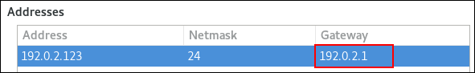
-
Open the
Set the IPv6 default gateway. For example, to set the IPv6 address of the default gateway on the connection to
2001:db8::1:-
Open the
IPv6tab. Enter the address in the
gatewayfield next to the IP range the gateway’s address is within: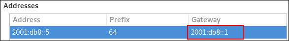
-
Open the
- Click .
- Click .
Restart the network connection for changes to take effect. For example, to restart the
exampleconnection using the command line:$
sudo nmcli connection up exampleWarningAll connections currently using this network connection are temporarily interrupted during the restart.
Optionally, verify that the route is active.
To display the IPv4 default gateway:
$
ip -4 routedefault via 192.0.2.1 dev example proto static metric 100To display the IPv6 default gateway:
$
ip -6 routedefault via 2001:db8::1 dev example proto static metric 100 pref medium
Additional resources
11.4. Setting the default gateway on an existing connection using control-center
In most situations, administrators set the default gateway when they create a connection as explained in, for example, Section 9.5, “Configuring an Ethernet connection using control-center”.
This section describes how to set or update the default gateway on a previously created connection using the control-center application.
Prerequisites
- At least one static IP address must be configured on the connection on which the default gateway will be set.
-
The network configuration of the connection is open in the
control-centerapplication. See Section 9.5, “Configuring an Ethernet connection using control-center”.
Procedure
Set the IPv4 default gateway. For example, to set the IPv4 address of the default gateway on the connection to
192.0.2.1:-
Open the
IPv4tab. Enter the address in the
gatewayfield next to the IP range the gateway’s address is within: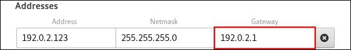
-
Open the
Set the IPv6 default gateway. For example, to set the IPv6 address of the default gateway on the connection to
2001:db8::1:-
Open the
IPv6tab. Enter the address in the
gatewayfield next to the IP range the gateway’s address is within: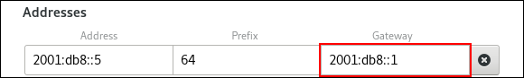
-
Open the
- Click .
Back in the
Networkwindow, disable and re-enable the connection by switching the button for the connection to and back to for changes to take effect.WarningAll connections currently using this network connection are temporarily interrupted during the restart.
Optionally, verify that the route is active.
To display the IPv4 default gateway:
$
ip -4 routedefault via 192.0.2.1 dev example proto static metric 100To display the IPv6 default gateway:
$
ip -6 routedefault via 2001:db8::1 dev example proto static metric 100 pref medium
Additional resources
Chapter 12. Configuring a static route
By default, and if a default gateway is configured, Red Hat Enterprise Linux forwards traffic for networks that are not directly connected to the host to the default gateway. Using a static route, you can configure that Red Hat Enterprise Linux forwards the traffic for a specific host or network to a different router than the default gateway. This section describes how to configure a static route.
12.1. How to use the nmcli command to configure a static route
To configure a static route, use the nmcli utility with the following syntax:
$ nmcli connection modify connection_name ipv4.routes "ip[/prefix] [next_hop] [metric] [attribute=value] [attribute=value] ..."The command supports the following route attributes:
-
table=n -
src=address -
tos=n -
onlink=true|false -
window=n -
cwnd=n -
mtu=n -
lock-window=true|false -
lock-cwdn=true|false -
lock-mtu=true|false
If you use the ipv4.routes sub-command, nmcli overrides all current settings of this parameter. To add an additional route, use the nmcli connection modify connection_name +ipv4.routes "…" command. In a similar way, you can use nmcli connection modify connection_name -ipv4.routes "…" to remove a specific route.
12.2. Configuring a static route using a nmcli command
You can add a static route to the configuration of a network connection using the nmcli connection modify command.
The procedure in this section describes how to add a route to the 192.0.2.0/24 network that uses the gateway running on 198.51.100.1, which is reachable through the example connection.
Prerequisites
- The network is configured
- The gateway for the static route must be directly reachable on the interface.
-
If the user is logged in on a physical console, user permissions are sufficient. Otherwise, the command requires
rootpermissions.
Procedure
Add the static route to the
exampleconnection:$
sudo nmcli connection modify example +ipv4.routes "192.0.2.0/24 198.51.100.1"To set multiple routes in one step, pass the individual routes comma-separated to the command. For example, to add a route to the
192.0.2.0/24and203.0.113.0/24networks, both routed through the198.51.100.1gateway, enter:$
sudo nmcli connection modify example +ipv4.routes "192.0.2.0/24 198.51.100.1, 203.0.113.0/24 198.51.100.1"Optionally, verify that the routes were added correctly to the configuration:
$
nmcli connection show example... ipv4.routes: { ip = 192.0.2.1/24, nh = 198.51.100.1 } ...Restart the network connection:
$
sudo nmcli connection up exampleWarningRestarting the connection briefly disrupts connectivity on that interface.
Optionally, verify that the route is active:
$
ip route... 192.0.2.0/24 via 198.51.100.1 dev example proto static metric 100
Additional resources
-
For further details about
nmcli, see thenmcli(1)man page.
12.3. Configuring a static route using control-center
You can use control-center in GNOME to add a static route to the configuration of a network connection.
The procedure in this section describes how to add a route to the 192.0.2.0/24 network that uses the gateway running on 198.51.100.1.
Prerequisites
- The network is configured.
- The gateway for the static route must be directly reachable on the interface.
-
The network configuration of the connection is opened in the
control-centerapplication. See Section 9.5, “Configuring an Ethernet connection using control-center”.
Procedure
-
Open the
IPv4tab. -
Optionally, disable automatic routes by clicking the button in the
Routessection of theIPv4tab to use only static routes. If automatic routes are enabled, Red Hat Enterprise Linux uses static routes and routes received from a DHCP server. Enter the address, netmask, gateway, and optionally a metric value:
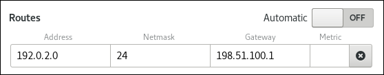
- Click .
Back in the
Networkwindow, disable and re-enable the connection by switching the button for the connection to and back to for changes to take effect.WarningRestarting the connection briefly disrupts connectivity on that interface.
Optionally, verify that the route is active:
$
ip route... 192.0.2.0/24 via 198.51.100.1 dev example proto static metric 100
12.4. Configuring a static route using nm-connection-editor
You can use the nm-connection-editor application to add a static route to the configuration of a network connection.
The procedure in this section describes how to add a route to the 192.0.2.0/24 network that uses the gateway running on 198.51.100.1, which is reachable trough the example connection.
Prerequisites
- The network is configured.
- The gateway for the static route must be directly reachable on the interface.
Procedure
Open a terminal and enter
nm-connection-editor:$
nm-connection-editor-
Select the
exampleconnection and click the gear wheel icon to edit the existing connection. -
Open the
IPv4tab. - Click the button.
Click the button and enter the address, netmask, gateway, and optionally a metric value.
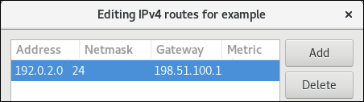
- Click .
- Click .
Restart the network connection for changes to take effect. For example, to restart the
exampleconnection using the command line:$
sudo nmcli connection up exampleOptionally, verify that the route is active:
$
ip route... 192.0.2.0/24 via 198.51.100.1 dev example proto static metric 100
12.5. Configuring a static route using the nmcli interactive mode
You can use the interactive mode of the nmcli utility to add a static route to the configuration of a network connection.
The procedure in this section describes how to add a route to the 192.0.2.0/24 network that uses the gateway running on 198.51.100.1, which is reachable trough the example connection.
Prerequisites
- The network is configured
- The gateway for the static route must be directly reachable on the interface.
-
If the user is logged in on a physical console, user permissions are sufficient. Otherwise, the command requires
rootpermissions.
Procedure
Open the
nmcliinteractive mode for theexampleconnection:$
sudo nmcli connection edit exampleAdd the static route:
nmcli>
set ipv4.routes 192.0.2.0/24 198.51.100.1Optionally, verify that the routes were added correctly to the configuration:
nmcli>
print... ipv4.routes: { ip = 192.0.2.1/24, nh = 198.51.100.1 } ...The
ipattribute displays the network to route and thenhattribute the gateway (next hop).Save the configuration:
nmcli>
save persistentRestart the network connection:
nmcli>
activate exampleWarningWhen you restart the connection, all connections currently using this connection will be temporarily interrupted.
Leave the
nmcliinteractive mode:nmcli>
quitOptionally, verify that the route is active:
$
ip route... 192.0.2.0/24 via 198.51.100.1 dev example proto static metric 100
Additional resources
-
For the list of commands available in the interactive mode, enter
helpin the interactive shell.
Chapter 13. Configuring policy-based routing to define alternative routes
By default, the kernel in RHEL decides where to forward network packets based on the destination address using a routing table. Policy-based routing enables you to configure complex routing scenarios. For example, you can route packets based on various criteria, such as the source address, packet metadata, or protocol.
This section describes of how to configure policy-based routing using NetworkManager.
On systems that use NetworkManager, only the nmcli utility supports setting routing rules and assigning routes to specific tables.
13.1. Routing traffic from a specific subnet to a different default gateway
This section describes how to configure RHEL as a router that, by default, routes all traffic to internet provider A using the default route. Using policy-based routing, RHEL routes traffic received from the internal workstations subnet to provider B.
The procedure assumes the following network topology:
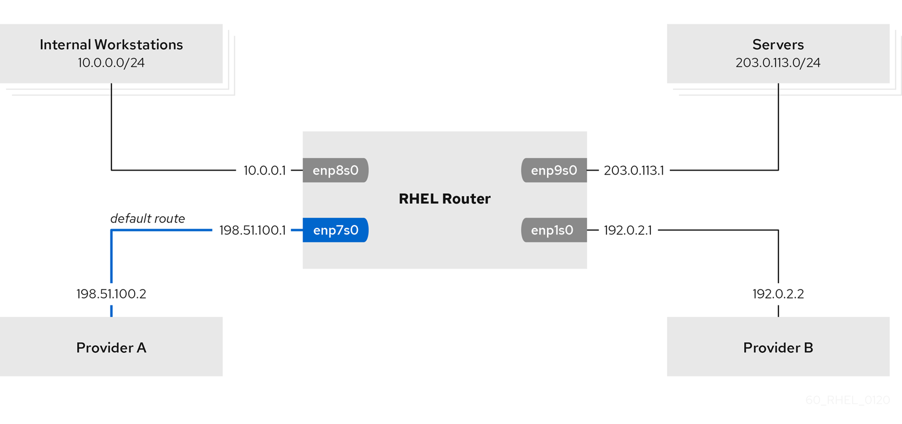
Prerequisites
The RHEL router you want to set up in the procedure has four network interfaces:
-
The
enp7s0interface is connected to the network of provider A. The gateway IP in the provider’s network is198.51.100.2, and the network uses a/30network mask. -
The
enp1s0interface is connected to the network of provider B. The gateway IP in the provider’s network is192.0.2.2, and the network uses a/30network mask. -
The
enp8s0interface is connected to the10.0.0.0/24subnet with internal workstations. -
The
enp9s0interface is connected to the203.0.113.0/24subnet with the company’s servers.
-
The
-
Hosts in the internal workstations subnet use
10.0.0.1as default gateway. In the procedure, you assign this IP address to theenp8s0network interface of the router. -
Hosts in the server subnet use
203.0.113.1as default gateway. In the procedure, you assign this IP address to theenp9s0network interface of the router. -
The
firewalldservice is enabled and active, which is the default.
Procedure
Configure the network interface to provider A:
# nmcli connection add type ethernet con-name Provider-A ifname enp7s0 ipv4.method manual ipv4.addresses 198.51.100.1/30 ipv4.gateway 198.51.100.2 ipv4.dns 198.51.100.200 connection.zone external
The
nmcli connection addcreates a NetworkManager connection profile. The following list describes the options of the command:-
typeethernet: Defines that the connection type is Ethernet. -
con-nameconnection_name: Sets the name of the profile. Use a meaningful name to avoid confusion. -
ifnamenetwork_device: Sets the network interface. -
ipv4.methodmanual: Enables to configure a static IP address. -
ipv4.addressesIP_address/subnet_mask: Sets the IPv4 addresses and subnet mask. -
ipv4.gatewayIP_address: Sets the default gateway address. -
ipv4.dnsIP_of_DNS_server: Sets the IPv4 address of the DNS server. -
connection.zonefirewalld_zone: Assigns the network interface to the definedfirewalldzone. Note thatfirewalldautomatically enables masquerading interfaces assigned to theexternalzone.
-
Configure the network interface to provider B:
# nmcli connection add type ethernet con-name Provider-B ifname enp1s0 ipv4.method manual ipv4.addresses 192.0.2.1/30 ipv4.routes "0.0.0.0/1 192.0.2.2 table=5000, 128.0.0.0/1 192.0.2.2 table=5000" connection.zone external
This command uses the
ipv4.routesparameter instead ofipv4.gatewayto set the default gateway. This is required to assign the default gateway for this connection to a different routing table (5000) than the default. NetworkManager automatically creates this new routing table when the connection is activated.NoteThe
nmcliutility does not support using0.0.0.0/0for the default gateway inipv4.gateway. To work around this problem, the command creates separate routes for both the0.0.0.0/1and128.0.0.0/1subnets, which covers also the full IPv4 address space.Configure the network interface to the internal workstations subnet:
# nmcli connection add type ethernet con-name Internal-Workstations ifname enp8s0 ipv4.method manual ipv4.addresses 10.0.0.1/24 ipv4.routes "10.0.0.0/24 src=192.0.2.1 table=5000" ipv4.routing-rules "priority 5 from 10.0.0.0/24 table 5000" connection.zone internal
This command uses the
ipv4.routesparameter to add a static route to the routing table with ID5000. This static route for the10.0.0.0/24subnet uses the IP of the local network interface to provider B (192.0.2.1) as next hop.Additionally, the command uses the
ipv4.routing-rulesparameter to add a routing rule with priority5that routes traffic from the10.0.0.0/24subnet to table5000. Low values have a high priority.Note that the syntax in the
ipv4.routing-rulesparameter is the same as in anip route addcommand, except thatipv4.routing-rulesalways requires specifying a priority.Configure the network interface to the server subnet:
# nmcli connection add type ethernet con-name Servers ifname enp9s0 ipv4.method manual ipv4.addresses 203.0.113.1/24 connection.zone internal
Verification steps
On a RHEL host in the internal workstation subnet:
Install the
traceroutepackage:# yum install traceroute
Use the
tracerouteutility to display the route to a host on the internet:# traceroute redhat.com traceroute to redhat.com (209.132.183.105), 30 hops max, 60 byte packets 1 10.0.0.1 (10.0.0.1) 0.337 ms 0.260 ms 0.223 ms 2 192.0.2.1 (192.0.2.1) 0.884 ms 1.066 ms 1.248 ms ...
The output of the command displays that the router sends packets over
192.0.2.1, which is the network of provider B.
On a RHEL host in the server subnet:
Install the
traceroutepackage:# yum install traceroute
Use the
tracerouteutility to display the route to a host on the internet:# traceroute redhat.com traceroute to redhat.com (209.132.183.105), 30 hops max, 60 byte packets 1 203.0.113.1 (203.0.113.1) 2.179 ms 2.073 ms 1.944 ms 2 198.51.100.2 (198.51.100.2) 1.868 ms 1.798 ms 1.549 ms ...
The output of the command displays that the router sends packets over
198.51.100.2, which is the network of provider A.
Troubleshooting steps
On the RHEL router:
Display the rule list:
# ip rule list 0: from all lookup local 5: from 10.0.0.0/24 lookup 5000 32766: from all lookup main 32767: from all lookup defaultBy default, RHEL contains rules for the tables
local,main, anddefault.Display the routes in table
5000:# ip route list table 5000 0.0.0.0/1 via 192.0.2.2 dev enp1s0 proto static metric 100 10.0.0.0/24 dev enp8s0 proto static scope link src 192.0.2.1 metric 102 128.0.0.0/1 via 192.0.2.2 dev enp1s0 proto static metric 100
Display which interfaces are assigned to which firewall zones:
# firewall-cmd --get-active-zones external interfaces: enp1s0 enp7s0 internal interfaces: enp8s0 enp9s0
Verify that the
externalzone has masquerading enabled:# firewall-cmd --info-zone=external external (active) target: default icmp-block-inversion: no interfaces: enp1s0 enp7s0 sources: services: ssh ports: protocols: masquerade: yes ...
Additional resources
-
For further details about the
ipv4.*parameters you can set in thenmcli connection addcommand, see theIPv4 settingssection in thenm-settings(5)man page. -
For further details about the
connection.*parameters you can set in thenmcli connection addcommand, see theConnection settingssection in thenm-settings(5)man page. -
For further details about managing NetworkManager connections using
nmcli, see theConnection management commandssection in thenmcli(1)man page.
Chapter 14. Configuring VLAN tagging
This section describes how to configure Virtual Local Area Network (VLAN). A VLAN is a logical network within a physical network. The VLAN interface tags packets with the VLAN ID as they pass through the interface, and removes tags of returning packets.
You create a VLAN interface on top of another interface, such as Ethernet, bond, team, or bridge. This interface is called the parent interface.
14.1. Configuring VLAN tagging using nm-connection-editor
This section describes how to configure Virtual Local Area Network (VLAN) tagging using the nm-connection-editor application.
Prerequisites
- The interface you plan to use as a parent to the virtual VLAN interface supports VLAN tags.
If you configure the VLAN on top of a bond interface:
- The slaves of the bond are up.
-
The bond is not configured with the
fail_over_mac=followoption. A VLAN virtual device cannot change its MAC address to match the parent’s new MAC address. In such a case, the traffic would still be sent with the then incorrect source MAC address.
- The switch the host is connected to is configured to support VLAN tags. For details, see the documentation of your switch.
Procedure
Open a terminal, and enter
nm-connection-editor:$ nm-connection-editor
- Click the button to add a new connection.
-
Select the
VLANconnection type, and click . On the
VLANtab:- Select the parent interface.
-
Select the VLAN id. Note that the VLAN must be within the range from
0to4094. - By default, the VLAN connection inherits the maximum transmission unit (MTU) from the parent interface. Optionally, set a different MTU value.
Optionally, set the name of the VLAN interface and further VLAN-specific options.
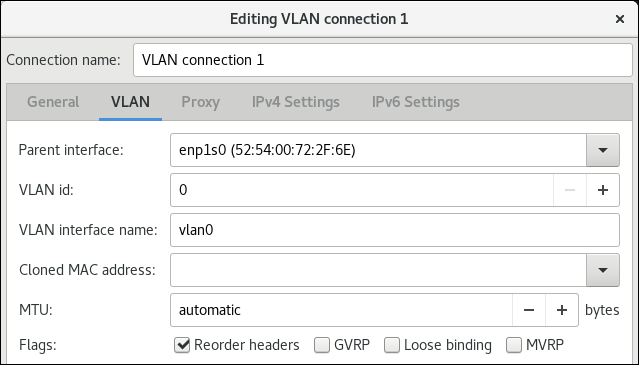
-
On the
IPv4 Settingstab, configure the IPv4 settings. For example, set a static IPv4 address, network mask, default gateway, and DNS server: 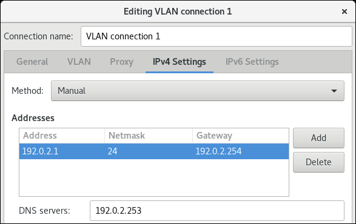 -
On the
IPv6 Settingstab, configure the IPv6 settings. For example, set a static IPv6 address, network mask, default gateway, and DNS server: 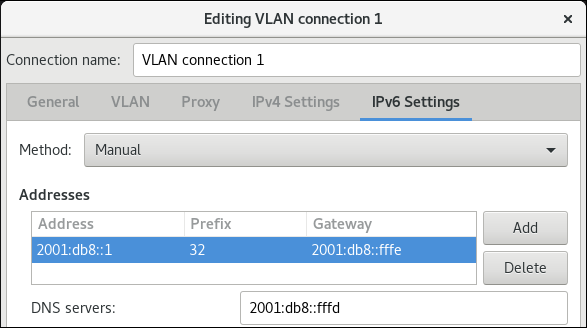 - Click to save the VLAN connection.
-
Close
nm-connection-editor. Optionally, verify the settings:
# ip -d addr show vlan10 4: vlan10@enp1s0: <BROADCAST,MULTICAST,UP,LOWER_UP> mtu 1500 qdisc noqueue state UP group default qlen 1000 link/ether 52:54:00:d5:e0:fb brd ff:ff:ff:ff:ff:ff promiscuity 0 vlan protocol 802.1Q id 10 <REORDER_HDR> numtxqueues 1 numrxqueues 1 gso_max_size 65536 gso_max_segs 65535 inet 192.0.2.1/24 brd 192.0.2.255 scope global noprefixroute vlan10 valid_lft forever preferred_lft forever inet6 fe80::8dd7:9030:6f8e:89e6/64 scope link noprefixroute valid_lft forever preferred_lft forever
14.2. Configuring VLAN tagging using nmcli commands
This section describes how to configure Virtual Local Area Network (VLAN) tagging using nmcli commands.
Prerequisites
- The interface you plan to use as a parent to the virtual VLAN interface supports VLAN tags.
If you configure the VLAN on top of a bond interface:
- The slaves of the bond are up.
-
The bond is not configured with the
fail_over_mac=followoption. A VLAN virtual device cannot change its MAC address to match the parent’s new MAC address. In such a case, the traffic would still be sent with the then incorrect source MAC address.
- The switch the host is connected to is configured to support VLAN tags. For details, see the documentation of your switch.
Procedure
Optionally, display the available network interfaces:
# ip address show 1: lo: <LOOPBACK,UP,LOWER_UP> mtu 65536 qdisc noqueue state UNKNOWN group default qlen 1000 link/loopback 00:00:00:00:00:00 brd 00:00:00:00:00:00 inet 127.0.0.1/8 scope host lo valid_lft forever preferred_lft forever inet6 ::1/128 scope host valid_lft forever preferred_lft forever 2: enp1s0: <BROADCAST,MULTICAST,UP,LOWER_UP> mtu 1500 qdisc fq_codel state UP group default qlen 1000 link/ether 52:54:00:d5:e0:fb brd ff:ff:ff:ff:ff:ffCreate the VLAN interface. For example, to create a VLAN interface named
vlan10that usesenp1s0as its parent interface and that tags packets with VLAN ID10, enter:# nmcli connection add type vlan con-name vlan10 ifname vlan10 vlan.parent enp1s0 vlan.id 10
Note that the VLAN must be within the range from
0to4094.By default, the VLAN connection inherits the maximum transmission unit (MTU) from the parent interface. Optionally, set a different MTU value:
# nmcli connection modify vlan10 802-3-ethernet.mtu 2000Configure the IPv4 settings. For example, to set a static IPv4 address, network mask, default gateway, and DNS server to the
vlan10connection, enter:# nmcli connection modify vlan10 ipv4.addresses '192.0.2.1/24' # nmcli connection modify vlan10 ipv4.gateway '192.0.2.254' # nmcli connection modify vlan10 ipv4.dns '192.0.2.253' # nmcli connection modify vlan10 ipv4.method manual
Configure the IPv6 settings. For example, to set a static IPv6 address, network mask, default gateway, and DNS server to the
vlan10connection, enter:# nmcli connection modify vlan10 ipv6.addresses '2001:db8::1/32' # nmcli connection modify vlan10 ipv6.gateway '2001:db8::fffe' # nmcli connection modify vlan10 ipv6.dns '2001:db8::fffd' # nmcli connection modify vlan10 ipv6.method manual
Optionally, verify the settings:
# ip -d addr show vlan10 4: vlan10@enp1s0: <BROADCAST,MULTICAST,UP,LOWER_UP> mtu 1500 qdisc noqueue state UP group default qlen 1000 link/ether 52:54:00:d5:e0:fb brd ff:ff:ff:ff:ff:ff promiscuity 0 vlan protocol 802.1Q id 10 <REORDER_HDR> numtxqueues 1 numrxqueues 1 gso_max_size 65536 gso_max_segs 65535 inet 192.0.2.1/24 brd 192.0.2.255 scope global noprefixroute vlan10 valid_lft forever preferred_lft forever inet6 fe80::8dd7:9030:6f8e:89e6/64 scope link noprefixroute valid_lft forever preferred_lft forever
Additional resources
-
For
nmcliexamples, see thenmcli-examples(7)man page. -
For all vlan properties you can set, see the
vlan settingsection in thenm-settings(5)man page.
Chapter 15. Configuring a network bridge
A network bridge is a link-layer device which forwards traffic between networks based on MAC addresses. The bridge device decides on forwarding packages based on a table of MAC addresses. The bridge builds the MAC addresses table by listening to network traffic and thereby learning what hosts are connected to each network.
For example, you can use a software bridge on a Red Hat Enterprise Linux 8 host:
- To emulate a hardware bridge
- In virtualization environments, to integrate virtual machines (VM) to the same network as the host
Due to the IEEE 802.11 standard which specifies the use of 3-address frames in Wi-Fi for the efficient use of airtime, you cannot configure a bridge over Wi-Fi networks operating in Ad-Hoc or Infrastructure modes.
15.1. Configuring a network bridge using nmcli commands
This section explains how to configure a network bridge using the nmcli utility.
Prerequisites
- Two or more physical or virtual network devices are installed in the server.
-
You are logged in as the
rootuser.
Procedure
Create a bridge interface. For example, to create the bridge interface named
bridge0, enter:# nmcli connection add type bridge con-name bridge0 ifname bridge0
Configure the IPv4 settings. For example, to set a static IPv4 address, network mask, default gateway, DNS server, and DNS search domain of the
bridge0connection, enter:# nmcli connection modify bridge0 ipv4.addresses '192.0.2.1/24' # nmcli connection modify bridge0 ipv4.gateway '192.0.2.254' # nmcli connection modify bridge0 ipv4.dns '192.0.2.253' # nmcli connection modify bridge0 ipv4.dns-search 'example.com' # nmcli connection modify bridge0 ipv4.method manual
Configure the IPv6 settings. For example, to set a static IPv6 address, network mask, default gateway, DNS server, and DNS search domain of the
bridge0connection, enter:# nmcli connection modify bridge0 ipv6.addresses '2001:db8::1/32' # nmcli connection modify bridge0 ipv6.gateway '2001:db8::fffe' # nmcli connection modify bridge0 ipv6.dns '2001:db8::fffd' # nmcli connection modify bridge0 ipv6.dns-search 'example.com' # nmcli connection modify bridge0 ipv6.method manual
Optionally, configure further properties of the bridge. For example, to set the Spanning Tree Protocol (STP) priority of
bridge0to16384, enter:# nmcli connection modify bridge0 bridge.priority '16384'
By default, STP is enabled.
Optionally, display the network interfaces, and note the names of the interfaces you want to add to the bridge as a slave in the next step:
# nmcli device DEVICE TYPE STATE CONNECTION enp1s0 ethernet connected enp1s0 enp7s0 ethernet disconnected -- enp8s0 ethernet disconnected -- lo loopback unmanaged --
Assign the port interfaces to the bridge’s connection. For example, to add the interfaces named
enp7s0andenp8s0to thebridge0connection, enter:# nmcli connection add type ethernet slave-type bridge con-name bridge0-port1 ifname enp7s0 master bridge0 # nmcli connection add type ethernet slave-type bridge con-name bridge0-port2 ifname enp8s0 master bridge0
Activate the connection. For example, to activate the
bridge0connection, enter:# nmcli connection up bridge0
Verify that the slave devices are connected, and the
CONNECTIONcolumn displays the slave’s connection name:# nmcli device DEVICE TYPE STATE CONNECTION ... enp7s0 ethernet connected bridge0-port1 enp8s0 ethernet connected bridge0-port2
Red Hat Enterprise Linux activates master and slave devices when the system boots. By activating any slave connection, the master is also activated. However, in this case, only one slave connection is activated. By default, activating the master does not automatically activate the slaves. However, you can enable this behavior by setting:
Enable the
connection.autoconnect-slavesparameter of the bridge connection:# nmcli connection modify bridge0 connection.autoconnect-slaves 1
Reactivate the bridge:
# nmcli connection up bridge0
Optionally, use the following command to display the status of the bridge:
# bridge link show bridge0 3: enp7s0: <BROADCAST,MULTICAST,UP,LOWER_UP> mtu 1500 master bridge0 state forwarding priority 32 cost 100 4: enp8s0: <BROADCAST,MULTICAST,UP,LOWER_UP> mtu 1500 master bridge0 state listening priority 32 cost 100
Additional resources
-
For
nmcliexamples, see thenmcli-examples(7)man page. -
For all bridge properties you can set, see the
bridge settingssection in thenm-settings(5)man page. -
For all bridge port properties you can set, see the
bridge-port settingssection in thenm-settings(5)man page. -
For details about the
bridgeutility, see thebridge(8)man page.
15.2. Configuring a network bridge using nm-connection-editor
This section explains how to configure a network bridge using the nm-connection-editor application.
Prerequisites
- Two or more physical or virtual network devices are installed in the server.
Procedure
Open a terminal, and enter
nm-connection-editor:$ nm-connection-editor
- Click the button to add a new connection.
Select the
Bridgeconnection type, and click .-
Optionally, set the name of the bridge interface in the
Interface namefield. Click the button to add a network interface as a slave to the bridge.
-
Select the connection type of the interface. For example, select
Ethernetfor a wired connection. - Optionally, set a connection name for the slave device.
-
In the
Devicefield on theEthernettab, select the network interface you want to add as a slave to the bridge. - Click .
-
Select the connection type of the interface. For example, select
Repeat the previous step for each interface you want to add to the bridge.
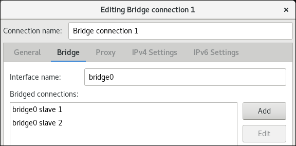
- Optionally, configure further bridge settings, such as Spanning Tree Protocol (STP) options.
-
Optionally, set the name of the bridge interface in the
-
On the
IPv4 Settingstab, configure the IPv4 settings. For example, set a static IPv4 address, network mask, default gateway, DNS server, and DNS search domain: 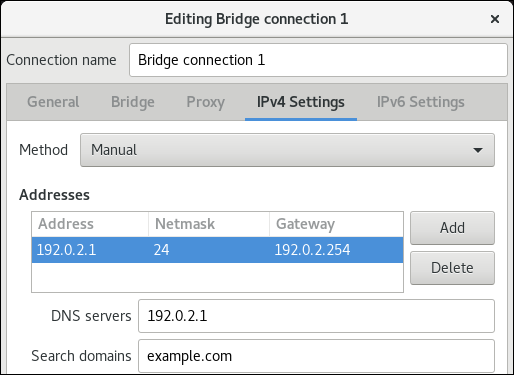 -
On the
IPv6 Settingstab, configure the IPv6 settings. For example, set a static IPv6 address, network mask, default gateway, DNS server, and DNS search domain: 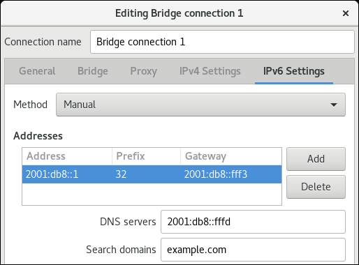 - Save the bridge connection.
-
Close
nm-connection-editor. Optionally, use the following command to display the status of the bridge:
# bridge link show bridge0 3: enp7s0: <BROADCAST,MULTICAST,UP,LOWER_UP> mtu 1500 master bridge0 state forwarding priority 32 cost 100 4: enp8s0: <BROADCAST,MULTICAST,UP,LOWER_UP> mtu 1500 master bridge0 state listening priority 32 cost 100
Chapter 16. Configuring network teaming
This section describes the basics of network teaming, the differences between bonding and teaming, and how to configure a network team on Red Hat Enterprise Linux 8.
Prerequisites
- Red Hat Enterprise Linux 8 is installed.
- The system has an active subscription assigned.
16.1. Understanding network teaming
Network teaming is a feature that combines or aggregates network interfaces to provide a logical interface with higher throughput or redundancy.
Network teaming uses a kernel driver to implement fast handling of packet flows, as well as user-space libraries and services for other tasks. This way, network teaming is an easily extensible and scalable solution for load-balancing and redundancy requirements.
Note that in the context of network teaming, the term port is also known as slave. In the teamd service, the term port is preferred while in the NetworkManager service, the term slave refers to interfaces which create a team.
Certain network teaming features, such as the fail-over mechanism, do not support direct cable connections without a network switch. For further details, see Is bonding supported with direct connection using crossover cables?
16.2. Understanding the default behavior of master and slave interfaces
Consider the following default behavior of, when managing or troubleshooting team or bond port interfaces using the NetworkManager service:
- Starting the master interface does not automatically start the port interfaces.
- Starting a port interface always starts the master interface.
- Stopping the master interface also stops the port interface.
- A master without ports can start static IP connections.
- A master without ports waits for ports when starting DHCP connections.
- A master with a DHCP connection waiting for ports completes when you add a port with a carrier.
- A master with a DHCP connection waiting for ports continues waiting when you add a port without carrier.
16.3. Comparison of network teaming and bonding features
The following table compares features supported in network teams and network bonds:
| Feature | Network bond | Network team |
|---|---|---|
| Broadcast Tx policy | Yes | Yes |
| Round-robin Tx policy | Yes | Yes |
| Active-backup Tx policy | Yes | Yes |
| LACP (802.3ad) support | Yes (active only) | Yes |
| Hash-based Tx policy | Yes | Yes |
| User can set hash function | No | Yes |
| Tx load-balancing support (TLB) | Yes | Yes |
| LACP hash port select | Yes | Yes |
| Load-balancing for LACP support | No | Yes |
| Ethtool link monitoring | Yes | Yes |
| ARP link monitoring | Yes | Yes |
| NS/NA (IPv6) link monitoring | No | Yes |
| Ports up/down delays | Yes | Yes |
| Port priorities and stickiness (“primary” option enhancement) | No | Yes |
| Separate per-port link monitoring setup | No | Yes |
| Multiple link monitoring setup | Limited | Yes |
| Lockless Tx/Rx path | No (rwlock) | Yes (RCU) |
| VLAN support | Yes | Yes |
| User-space runtime control | Limited | Yes |
| Logic in user-space | No | Yes |
| Extensibility | Hard | Easy |
| Modular design | No | Yes |
| Performance overhead | Low | Very low |
| D-Bus interface | No | Yes |
| Multiple device stacking | Yes | Yes |
| Zero config using LLDP | No | (in planning) |
| NetworkManager support | Yes | Yes |
16.4. Understanding the teamd service, runners, and link-watchers
The team service, teamd, controls one instance of the team driver. This instance of the driver adds instances of a hardware device driver to form a team of network interfaces. The team driver presents a network interface, for example team0, to the kernel.
The teamd service implements the common logic to all methods of teaming. Those functions are unique to the different load sharing and backup methods, such as round-robin, and implemented by separate units of code referred to as runners. Administrators specify runners in JavaScript Object Notation (JSON) format, and the JSON code is compiled into an instance of teamd when the instance is created. Alternatively, when using NetworkManager, you can set the runner in the team.runner parameter, and NetworkManager auto-creates the corresponding JSON code.
The following runners are available:
-
broadcast: Transmits data over all ports. -
roundrobin: Transmits data over all ports in turn. -
activebackup: Transmits data over one port while the others are kept as a backup. -
loadbalance: Transmits data over all ports with active Tx load balancing and Berkeley Packet Filter (BPF)-based Tx port selectors. -
random: Transmits data on a randomly selected port. -
lacp: Implements the 802.3ad Link Aggregation Control Protocol (LACP).
The teamd services uses a link watcher to monitor the state of subordinate devices. The following link-watchers are available:
-
ethtool: Thelibteamlibrary uses theethtoolutility to watch for link state changes. This is the default link-watcher. -
arp_ping: Thelibteamlibrary uses thearp_pingutility to monitor the presence of a far-end hardware address using Address Resolution Protocol (ARP). -
nsna_ping: On IPv6 connections, thelibteamlibrary uses the Neighbor Advertisement and Neighbor Solicitation features from the IPv6 Neighbor Discovery protocol to monitor the presence of a neighbor’s interface.
Each runner can use any link watcher, with the exception of lacp. This runner can only use the ethtool link watcher.
16.5. Installing the teamd service
To configure a network team in NetworkManager, you require the teamd service and the team plug-in for NetworkManager. Both are installed on Red Hat Enterprise Linux 8 by default. This section describes how you install the required packages in case that you remove them.
Prerequisites
- An active Red Hat subscription is assigned to the host.
Procedure
Install the
teamdandNetworkManager-teampackages:# yum install teamd NetworkManager-team
16.6. Configuring a network team using nmcli commands
This section describes how you configure a network team using nmcli commands.
Prerequisites
- Two or more network cards are installed in the server.
- The network cards are connected to a switch.
Procedure
Create the team interface. For example, to create a team interface that uses the
activebackuprunner and both the interface and connection namedteam0, enter:# nmcli connection add type team con-name team0 ifname team0 team.runner activebackup
Optionally, set a link watcher. For example, to set the
ethtoollink watcher, modify theteam0connection:# nmcli connection modify team0 team.link-watchers "name=ethtool"
Link watchers support different parameters. To set parameters for a link watcher, specify them space-separated in the
nameproperty. Note that the name property must be surrounded by quotes. For example, to use theethtoollink watcher and set itsdelay-upparameter to2500milliseconds (2.5 seconds):# nmcli connection modify team0 team.link-watchers "name=ethtool delay-up=2500"
To set multiple link watchers and each of them with specific parameters, the link watchers must be separated by a comma. The following example sets the
ethtoollink watcher with thedelay-upparameter and thearp_pinglink watcher with thesource-hostandtarget-hostparameter:# nmcli connection modify team0 team.link-watchers "name=ethtool delay-up=2, name=arp_ping source-host=192.0.2.1 target-host=192.0.2.2"
Configure the IPv4 settings. For example, to set a static IPv4 address, network mask, default gateway, DNS server, and DNS search domain the
team0connection, enter:# nmcli connection modify team0 ipv4.addresses '192.0.2.1/24' # nmcli connection modify team0 ipv4.gateway '192.0.2.254' # nmcli connection modify team0 ipv4.dns '192.0.2.253' # nmcli connection modify team0 ipv4.dns-search 'example.com' # nmcli connection modify team0 ipv4.method manual
Configure the IPv6 settings. For example, to set a static IPv6 address, network mask, default gateway, DNS server, and DNS search domain of the
team0connection, enter:# nmcli connection modify team0 ipv6.addresses '2001:db8::1/32' # nmcli connection modify team0 ipv6.gateway '2001:db8::fffe' # nmcli connection modify team0 ipv6.dns '2001:db8::fffd' # nmcli connection modify team0 ipv6.dns-search 'example.com' # nmcli connection modify team0 ipv6.method manual
Optionally, display the network interfaces, and note the names of the interfaces you want to add to the team in the next step:
# nmcli device DEVICE TYPE STATE CONNECTION enp1s0 ethernet connected enp1s0 enp7s0 ethernet disconnected -- enp8s0 ethernet disconnected -- lo loopback unmanaged --
ImportantYou can only use network interfaces in a team that are not assigned to any connection. In the above example, you can only use the
enp7s0andenp8s0interfaces.Assign the port interfaces to the team’s connection. For example, to add the interfaces named
enp7s0andenp8s0to theteam0connection:# nmcli connection add type ethernet slave-type team con-name team0-port1 ifname enp7s0 master team0 # nmcli connection add type ethernet slave-type team con-name team0-port2 ifname enp8s0 master team0
Activate the connection. For example, to activate the
team0connection:# nmcli connection up team0
Optionally, display the status of the team:
# teamdctl team0 state setup: runner: activebackup ports: enp7s0 link watches: link summary: up instance[link_watch_0]: name: ethtool link: up down count: 0 enp8s0 link watches: link summary: up instance[link_watch_0]: name: ethtool link: up down count: 0 runner: active port: enp7s0In the example, both ports are up.
Additional resources
- Section 16.4, “Understanding the teamd service, runners, and link-watchers”.
-
For
nmcliexamples, see thenmcli-examples(7)man page. -
For all team properties you can set, see the
teamsection in thenm-settings(5)man page. -
For parameters you can set in the JSON configuration, as well as JSON examples, see the
teamd.conf(5)man page.
16.7. Configuring a network team using nm-connection-editor
This section describes how you configure a network team using the nm-connection-editor application.
Prerequisites
- Two or more network cards are installed in the server.
- The network cards are connected to a switch.
Procedure
Open a terminal, and enter
nm-connection-editor:$ nm-connection-editor
- Click the button to add a new connection.
-
Select the
Teamconnection type, and click . On the
Teamtab:-
Optionally, set the name of the team interface in the
Interface namefield. Click the button to add a network interface as a slave to the team.
-
Select the connection type of the interface. For example, select
Ethernetfor a wired connection. - Optionally, set a connection name for the slave device.
In the
Devicefield on theEthernettab, select the network interface you want to add as a slave to the team.ImportantYou can only use network interfaces in a team that are not configured.
- Click .
-
Select the connection type of the interface. For example, select
Repeat the previous step for each interface you want to add to the team.
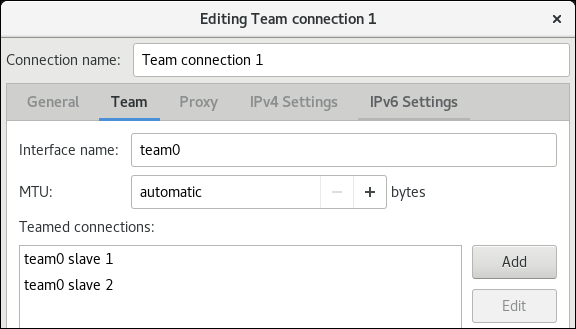
Click the button to set advanced options to the team connection.
-
On the
Runnertab, select the runner. -
On the
Link Watchertab, set the link link watcher and its optional settings. - Click .
-
On the
-
Optionally, set the name of the team interface in the
-
On the
IPv4 Settingstab, configure the IPv4 settings. For example, set a static IPv4 address, network mask, default gateway, DNS server, and DNS search domain: 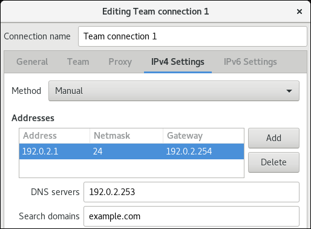 -
On the
IPv6 Settingstab, configure the IPv6 settings. For example, set a static IPv6 address, network mask, default gateway, DNS server, and DNS search domain: 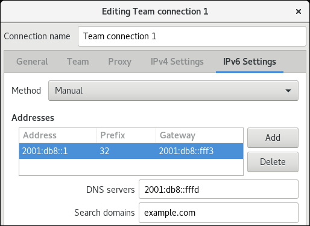 - Click to save the team connection.
-
Close
nm-connection-editor. Optionally, display the status of the team:
# teamdctl team0 state setup: runner: activebackup ports: enp7s0 link watches: link summary: up instance[link_watch_0]: name: ethtool link: up down count: 0 enp8s0 link watches: link summary: up instance[link_watch_0]: name: ethtool link: up down count: 0 runner: active port: enp7s0
Additional resources
Chapter 17. Configuring network bonding
This section describes the basics of network bonding, the differences between bonding and teaming, and how to configure a network bond on Red Hat Enterprise Linux 8.
17.1. Understanding network bonding
Network bonding is a method to combine or aggregate network interfaces to provide a logical interface with higher throughput or redundancy.
The active-backup, balance-tlb, and balance-alb modes do not require any specific configuration of the network switch. However, other bonding modes require configuring the switch to aggregate the links. For example, Cisco switches requires EtherChannel for modes 0, 2, and 3, but for mode 4, the Link Aggregation Control Protocol (LACP) and EtherChannel are required.
For further details, see the documentation of your switch and https://www.kernel.org/doc/Documentation/networking/bonding.txt.
Certain network bonding features, such as the fail-over mechanism, do not support direct cable connections without a network switch. For further details, see the Is bonding supported with direct connection using crossover cables? KCS solution.
17.2. Understanding the default behavior of master and slave interfaces
Consider the following default behavior of, when managing or troubleshooting team or bond port interfaces using the NetworkManager service:
- Starting the master interface does not automatically start the port interfaces.
- Starting a port interface always starts the master interface.
- Stopping the master interface also stops the port interface.
- A master without ports can start static IP connections.
- A master without ports waits for ports when starting DHCP connections.
- A master with a DHCP connection waiting for ports completes when you add a port with a carrier.
- A master with a DHCP connection waiting for ports continues waiting when you add a port without carrier.
17.3. Comparison of network teaming and bonding features
The following table compares features supported in network teams and network bonds:
| Feature | Network bond | Network team |
|---|---|---|
| Broadcast Tx policy | Yes | Yes |
| Round-robin Tx policy | Yes | Yes |
| Active-backup Tx policy | Yes | Yes |
| LACP (802.3ad) support | Yes (active only) | Yes |
| Hash-based Tx policy | Yes | Yes |
| User can set hash function | No | Yes |
| Tx load-balancing support (TLB) | Yes | Yes |
| LACP hash port select | Yes | Yes |
| Load-balancing for LACP support | No | Yes |
| Ethtool link monitoring | Yes | Yes |
| ARP link monitoring | Yes | Yes |
| NS/NA (IPv6) link monitoring | No | Yes |
| Ports up/down delays | Yes | Yes |
| Port priorities and stickiness (“primary” option enhancement) | No | Yes |
| Separate per-port link monitoring setup | No | Yes |
| Multiple link monitoring setup | Limited | Yes |
| Lockless Tx/Rx path | No (rwlock) | Yes (RCU) |
| VLAN support | Yes | Yes |
| User-space runtime control | Limited | Yes |
| Logic in user-space | No | Yes |
| Extensibility | Hard | Easy |
| Modular design | No | Yes |
| Performance overhead | Low | Very low |
| D-Bus interface | No | Yes |
| Multiple device stacking | Yes | Yes |
| Zero config using LLDP | No | (in planning) |
| NetworkManager support | Yes | Yes |
17.4. Upstream Switch Configuration Depending on the Bonding Modes
The following table describes which settings you must apply to the upstream switch depending on the bonding mode:
| Bonding mode | Configuration on the switch |
|---|---|
|
| Requires static Etherchannel enabled (not LACP-negotiated) |
|
| Requires autonomous ports |
|
| Requires static Etherchannel enabled (not LACP-negotiated) |
|
| Requires static Etherchannel enabled (not LACP-negotiated) |
|
| Requires LACP-negotiated Etherchannel enabled |
|
| Requires autonomous ports |
|
| Requires autonomous ports |
For configuring these settings on your switch, see the switch documentation.
17.5. Configuring a network bond using nmcli commands
This section describes how to configure a network bond using nmcli commands.
Prerequisites
- Two or more network cards are installed in the server.
- The network cards are connected to a switch.
Procedure
Create a bond interface. For example, to create a bond interface that uses the
active-backupmode and both the interface and the connection are namedbond0, enter:# nmcli connection add type bond con-name bond0 ifname bond0 bond.options "mode=active-backup"
To additionally set a Media Independent Interface (MII) monitoring interval, add the
miimon=intervaloption to thebond.optionsproperty. For example, to use the same command but, additionally, set the MII monitoring interval to1000milliseconds (1 second), enter:# nmcli connection add type bond con-name bond0 ifname bond0 bond.options "mode=active-backup,miimon=1000"
Configure the IPv4 settings. For example, to set a static IPv4 address, network mask, default gateway, DNS server, and DNS search domain to the
bond0connection, enter:# nmcli connection modify bond0 ipv4.addresses '192.0.2.1/24' # nmcli connection modify bond0 ipv4.gateway '192.0.2.254' # nmcli connection modify bond0 ipv4.dns '192.0.2.253' # nmcli connection modify bond0 ipv4.dns-search 'example.com' # nmcli connection modify bond0 ipv4.method manual
Configure the IPv6 settings. For example, to set a static IPv6 address, network mask, default gateway, DNS server, and DNS search domain to the
bond0connection, enter:# nmcli connection modify bond0 ipv6.addresses '2001:db8::1/32 # nmcli connection modify bond0 ipv6.gateway '2001:db8::fffe' # nmcli connection modify bond0 ipv6.dns '2001:db8::fffd' # nmcli connection modify bond0 ipv6.dns-search 'example.com' # nmcli connection modify bond0 ipv6.method manual
Optionally, display the network interfaces, and note names of interfaces you plan to add to the bond:
# # nmcli device DEVICE TYPE STATE CONNECTION enp1s0 ethernet connected enp1s0 enp7s0 ethernet disconnected -- enp8s0 ethernet disconnected -- lo loopback unmanaged --
Assign port interfaces to the bond’s connection. For example, to add the interfaces named
enp7s0andenp8s0to thebond0connection:# nmcli connection add type ethernet slave-type bond con-name bond0-port1 ifname enp7s0 master bond0 # nmcli connection add type ethernet slave-type bond con-name bond0-port2 ifname enp8s0 master bond0
Activate the connection. For example, to activate the
bond0connection:# nmcli connection up bond0
Verify that the slave devices are connected, and the
CONNECTIONcolumn displays the slave’s connection name:# nmcli device DEVICE TYPE STATE CONNECTION ... enp7s0 ethernet connected bond0-port1 enp8s0 ethernet connected bond0-port2
Red Hat Enterprise Linux activates master and slave devices when the system boots. By activating any slave connection, the master is also activated. However, in this case, only one slave connection is activated. By default, activating the master does not automatically activate the slaves. However, you can enable this behavior by setting:
Enable the
connection.autoconnect-slavesparameter of the bond’s connection:# nmcli connection modify bond0 connection.autoconnect-slaves 1
Reactivate the bridge:
# nmcli connection up bond0
Optionally, display the status of the bond:
# cat /proc/net/bonding/bond0 Ethernet Channel Bonding Driver: v3.7.1 (April 27, 2011) Bonding Mode: fault-tolerance (active-backup) Primary Slave: None Currently Active Slave: enp7s0 MII Status: up MII Polling Interval (ms): 100 Up Delay (ms): 0 Down Delay (ms): 0 Slave Interface: enp7s0 MII Status: up Speed: Unknown Duplex: Unknown Link Failure Count: 0 Permanent HW addr: 52:54:00:d5:e0:fb Slave queue ID: 0 Slave Interface: enp8s0 MII Status: up Speed: Unknown Duplex: Unknown Link Failure Count: 0 Permanent HW addr: 52:54:00:b2:e2:63 Slave queue ID: 0In the example, both ports are up.
Additional resources
-
For
nmcliexamples, see thenmcli-examples(7)man page. -
For a list of options you can set in the
bond.optionsparameter of thenmclicommand when you create a bond, see https://www.kernel.org/doc/Documentation/networking/bonding.txt.
17.6. Configuring a network bond using nm-connection-editor
This section describes how to configure a network bond using the nm-connection-editor application.
Prerequisites
- Two or more network cards are installed in the server.
- The network cards are connected to a switch.
Procedure
Open a terminal, and enter
nm-connection-editor:$ nm-connection-editor
- Click the button to add a new connection.
-
Select the
Bondconnection type, and click . On the
Bondtab:-
Optionally, set the name of the bond interface in the
Interface namefield. Click the button to add a network interface as a slave to the bond.
-
Select the connection type of the interface. For example, select
Ethernetfor a wired connection. - Optionally, set a connection name for the slave device.
In the
Devicefield on theEthernettab, select the network interface you want to add as a slave to the bond.ImportantYou can only use network interfaces in a bond that are not configured.
- Click .
-
Select the connection type of the interface. For example, select
Repeat the previous step for each interface you want to add to the bond:
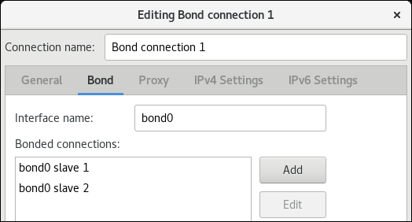
- Optionally, set other options, such as the Media Independent Interface (MII) monitoring interval.
-
Optionally, set the name of the bond interface in the
On the
IPv4 Settingstab, configure the IPv4 settings. For example, set a static IPv4 address, network mask, default gateway, DNS server, and DNS search domain: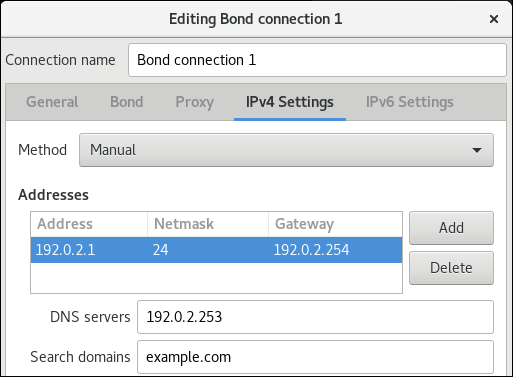
On the
IPv6 Settingstab, configure the IPv6 settings. For example, set a static IPv6 address, network mask, default gateway, DNS server, and DNS search domain: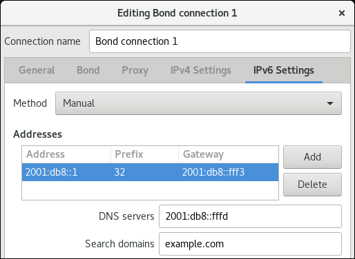
- Click to save the bond connection.
-
Close
nm-connection-editor. Optionally, display the status of the bond:
$ cat /proc/net/bonding/_bond0_ Ethernet Channel Bonding Driver: v3.7.1 (April 27, 2011) Bonding Mode: fault-tolerance (active-backup) Primary Slave: None Currently Active Slave: enp7s0 MII Status: up MII Polling Interval (ms): 100 Up Delay (ms): 0 Down Delay (ms): 0 Slave Interface: enp7s0 MII Status: up Speed: Unknown Duplex: Unknown Link Failure Count: 0 Permanent HW addr: 52:54:00:d5:e0:fb Slave queue ID: 0 Slave Interface: enp8s0 MII Status: up Speed: Unknown Duplex: Unknown Link Failure Count: 0 Permanent HW addr: 52:54:00:b2:e2:63 Slave queue ID: 0
In the example, both ports are up.
Chapter 18. Configuring a VPN connection
This section explains how to configure a VPN connection.
18.1. Configuring a VPN connection with control-center
A Virtual Private Network (VPN) is a way of connecting to a local network over the internet. IPsec, provided by Libreswan, is the preferred method for creating a VPN. Libreswan is an open-source, user-space IPsec implementation for VPN. A Virtual Private Network (VPN) enables communication between your Local Area Network (LAN), and another, remote LAN. This is done by setting up a tunnel across an intermediate network such as the Internet. The VPN tunnel that is set up typically uses authentication and encryption.
This procedure describes how to configure a VPN connection using control-center.
Prerequisites
-
The
NetworkManager-libreswan-gnomepackage is installed. -
Start for adding a
VPNconnection as explained Section 8.2, “Creating a network connection using control-center”.
Procedure
Select the
Identitymenu entry to see the basic configuration options:General
Gateway— The name orIPaddress of the remote VPN gateway.Authentication
Type-
IKEv2 (Certificate)- client is authenticated by certificate. It is more secure (default). IKEv1 (XAUTH)- client is authenticated by username and password, or secret (PSK).The following configuration settings are available under the
Advancedsection:Figure 18.1. Advanced options of a VPN connection
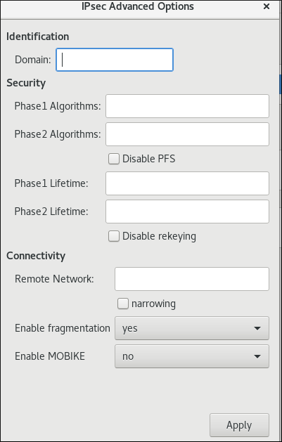WarningWhen configuring an
IPsec based VPNconnection using thegnome-control-centerapplication, theAdvanceddialog will only display the configuration, but will not allow doing any change. As a consequence, users cannot change any advanced IPsec options. Use thenm-connection-editorornmclitools instead to perform configuration of the advanced properties.Identification
Domain— If required, enter the Domain Name.Security
-
Phase1 Algorithms— corresponds to theikeLibreswan parameter — enter the algorithms to be used to authenticate and set up an encrypted channel. Phase2 Algorithms— corresponds to theespLibreswan parameter — enter the algorithms to be used for theIPsecnegotiations.-
Check the
Disable PFSfield to turn off Perfect Forward Secrecy (PFS)to ensure compatibility with old servers that do not support PFS.
-
Check the
-
Phase1 Lifetime— corresponds to theikelifetimeLibreswan parameter — how long the key used to encrypt the traffic will be valid. Phase2 Lifetime— corresponds to thesalifetimeLibreswan parameter — how long how long a particular instance of a connection should last before expiring.Note that the encryption key should be changed from time to time for security reasons.
Remote network— corresponds to therightsubnetLibreswan parameter — the destination private remote network that should be reached throught the VPN.-
Check the
narrowingfield to enable narrowing. Note that it is only effective in IKEv2 negotiation.
-
Check the
-
Enable fragmentation— corresponds to thefragmentationLibreswan parameter — whether or not to allow IKE fragmentation. Valid values areyes(default), orno. -
Enable Mobike— corresponds to themobikeLibreswan parameter — whether to allow MOBIKE (RFC 4555) to enable a connection to migrate its endpoint without needing to restart the connection from scratch. This is used on mobile devices that switch between wired, wireless or mobile data connections. The values areno(default) or yes.
-
For further configuration, select the menu entry:
IPv4 Method-
Automatic (DHCP)— Choose this option if the network you are connecting to uses Router Advertisements (RA) or aDHCPserver to assign dynamicIPaddresses. -
Link-Local Only— Choose this option if the network you are connecting to does not have aDHCPserver and you do not want to assignIPaddresses manually. Random addresses will be assigned as per RFC 3927 with prefix169.254/16. -
Manual— Choose this option if you want to assignIPaddresses manually. -
Disable—IPv4is disabled for this connection.
-
DNSIn the
DNSsection, whenAutomaticisON, switch it toOFFto enter the IP address of a DNS server you want to use separating the IPs by comma.RoutesNote that in the
Routessection, whenAutomaticisON, routes from Router Advertisements (RA) or DHCP are used, but you can also add additional static routes. WhenOFF, only static routes are used.-
Address— Enter theIPaddress of a remote network, sub-net, or host. -
Netmask— The netmask or prefix length of theIPaddress entered above. -
Gateway— TheIPaddress of the gateway leading to the remote network, sub-net, or host entered above. -
Metric— A network cost, a preference value to give to this route. Lower values will be preferred over higher values.
-
Use this connection only for resources on its networkSelect this check box to prevent the connection from becoming the default route. Selecting this option means that only traffic specifically destined for routes learned automatically over the connection or entered here manually will be routed over the connection.
Alternatively, to configure
IPv6settings in aVPNconnection, select the menu entry:IPv6 Method-
Automatic— Choose this option to useIPv6Stateless Address AutoConfiguration (SLAAC) to create an automatic, stateless configuration based on the hardware address and Router Advertisements (RA). -
Automatic, DHCP only— Choose this option to not use RA, but request information fromDHCPv6directly to create a stateful configuration. -
Link-Local Only— Choose this option if the network you are connecting to does not have aDHCPserver and you do not want to assignIPaddresses manually. Random addresses will be assigned as per RFC 4862 with prefixFE80::0. -
Manual— Choose this option if you want to assignIPaddresses manually. Disable—IPv6is disabled for this connection.Note that
DNS,Routes,Use this connection only for resources on its networkare common toIPv4settings.
-
-
Once you have finished editing the
VPNconnection, click the button to customize the configuration or the button to save it for the existing one. -
Switch the profile to
ONto active theVPNconnection.
When you add a new connection by clicking the plus button, NetworkManager creates a new configuration file for that connection and then opens the same dialog that is used for editing an existing connection. The difference between these dialogs is that an existing connection profile has a Details menu entry.
Additional resources
-
For more details on the supported Libreswan parameters, see the
nm-settings-libreswanman page.
18.2. Configuring a VPN connection using nm-connection-editor
This procedure describes how to configure a VPN connection using nm-connection-editor
Prerequisites
-
The
NetworkManager-libreswan-gnomepackage is installed. If you configure an Internet Key Exchange version 2 (IKEv2) connection:
- The certificate is imported into the IPsec network security services (NSS) database.
- The nickname of the certificate in the NSS database is known.
Procedure
Open a terminal, and enter:
$ nm-connection-editor
- Click the button to add a new connection.
-
Select the
IPsec based VPNconnection type, and click . On the
VPNtab:Enter the host name or IP address of the VPN gateway into the
Gatewayfield, and select an authentication type. Based on the authentication type, you must enter different additional information:IKEv2 (Certifiate)authenticates the client by using a certificate, which is more secure. This setting requires:- The nickname of the certificate in the IPsec NSS database
IKEv1 (XAUTH)authenticates the user by using a user name and password (pre-shared key). This setting requires that you enter the following values:- User name
- Password
- Group name
- Secret
If the remote server specifies a local identifier for the IKE exchange, enter the exact string in the
Remote IDfield. In the remote server runs Libreswan, this value is set in the server’sleftidparameter.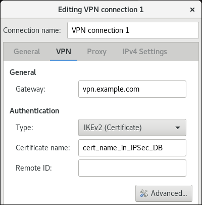
Optionally, configure additional settings by clicking the button. You can configure the following settings:
Identification
-
Domain— If required, enter the domain name.
-
Security
-
Phase1 Algorithmscorresponds to theikeLibreswan parameter. Enter the algorithms to be used to authenticate and set up an encrypted channel. Phase2 Algorithmscorresponds to theespLibreswan parameter. Enter the algorithms to be used for theIPsecnegotiations.-
Check the
Disable PFSfield to turn off Perfect Forward Secrecy (PFS) to ensure compatibility with old servers that do not support PFS.
-
Check the
-
Phase1 Lifetimecorresponds to theikelifetimeLibreswan parameter. This parameter defines how long the key used to encrypt the traffic is valid. -
Phase2 Lifetimecorresponds to thesalifetimeLibreswan parameter. This parameter defines how long a security association is valid.
-
Connectivity
Remote networkcorresponds to therightsubnetLibreswan parameter and defines the destination private remote network that should be reached through the VPN.-
Check the
narrowingfield to enable narrowing. Note that it is only effective in the IKEv2 negotiation.
-
Check the
-
Enable fragmentationcorresponds to thefragmentationLibreswan parameter and defines whether or not to allow IKE fragmentation. Valid values areyes(default), orno. -
Enable Mobikecorresponds to themobikeLibreswan parameter. The parameter defines whether to allow Mobility and Multihoming Protocol (MOBIKE) (RFC 4555) to enable a connection to migrate its endpoint without needing to restart the connection from scratch. This is used on mobile devices that switch between wired, wireless or mobile data connections. The values areno(default) or yes.
On the
IPv4 Settingstab, select the IP assignment method and, optionally, set additional static addresses, DNS servers, search domains, and routes.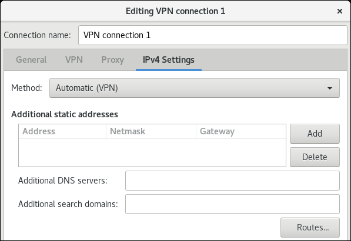
- Save the connection.
-
Close
nm-connection-editor.
Additional resources
-
For further details on the supported IPsec parameters, see the
nm-settings-libreswan(5)man page.
Chapter 19. Configuring the order of DNS servers
Most applications use the getaddrinfo() function of the glibc library to resolve DNS requests. By default, glibc sends all DNS requests to the first DNS server specified in the /etc/resolv.conf file. If this server does not reply, Red Hat Enterprise Linux uses the next server in this file.
This section describes how to customize the order of DNS servers.
19.1. How NetworkManager orders DNS servers in /etc/resolv.conf
NetworkManager orders DNS servers in the /etc/resolv.conf file based on the following rules:
- If only one connection profile exists, NetworkManager uses the order of IPv4 and IPv6 DNS server specified in that connection.
If multiple connection profiles are activated, NetworkManager orders DNS servers based on a DNS priority value. If you set DNS priorities, the behavior of NetworkManager depends on the value set in the
dnsparameter. You can set this parameter in the[main]section in the/etc/NetworkManager/NetworkManager.conffile:dns=defaultor if thednsparameter is not set:NetworkManager orders the DNS servers from different connections based on the
ipv4.dns-priorityandipv6.dns-priorityparameter in each connection.If you set no value or you set
ipv4.dns-priorityandipv6.dns-priorityto0, NetworkManager uses the global default value. See the section called “Default values of DNS priority parameters”.dns=dnsmasqordns=systemd-resolved:When you use one of these settings, NetworkManager sets either
127.0.0.1fordnsmasqor127.0.0.53asnameserverentry in the/etc/resolv.conffile.Both the
dnsmasqandsystemd-resolvedservices forward queries for the search domain set in a NetworkManager connection to the DNS server specified in that connection, and forwardes queries to other domains to the connection with the default route. When multiple connections have the same search domain set,dnsmasqandsystemd-resolvedforward queries for this domain to the DNS server set in the connection with the lowest priority value.
Default values of DNS priority parameters
NetworkManager uses the following default values for connections:
-
50for VPN connections -
100for other connections
Valid DNS priority values:
You can set both the global default and connection-specific ipv4.dns-priority and ipv6.dns-priority parameters to a value between -2147483647 and 2147483647.
- A lower value has a higher priority.
- Negative values have the special effect of excluding other configurations with a greater value. For example, if at least one connection with a negative priority value exists, NetworkManager uses only the DNS servers specified in the connection profile with the lowest priority.
If multiple connections have the same DNS priority, NetworkManager prioritizes the DNS in the following order:
- VPN connections
- Connection with an active default route. The active default route is the default route the lowest metric.
Additional resources
-
For further details about how NetworkManager orders DNS server entries in the
/etc/resolv.conffile, see thedns-priorityparameter description in theipv4andipv6sections in thenm-settings(5)man page. -
For details about using
systemd-resolvedto use different DNS servers for different domains, see Chapter 25, Using different DNS servers for different domains.
19.2. Setting a NetworkManager-wide default DNS server priority value
NetworkManager uses the following DNS priority default values for connections:
-
50for VPN connections -
100for other connections
This section describes how to override these system-wide defaults with a custom default value for IPv4 and IPv6 connections.
Procedure
Edit the
/etc/NetworkManager/NetworkManager.conffile:Add the
[connection]section, if it does not exist:[connection]
Add the custom default values to the
[connection]section. For example, to set the new default for both IPv4 and IPv6 to200, add:ipv4.dns-priority=200 ipv6.dns-priority=200
You can set the parameters to a value between
-2147483647and2147483647. Note that setting the parameters to0enables the built-in defaults (50for VPN connections and100for other connections).
Reload the
NetworkManagerservice:# systemctl reload NetworkManager
Additional resources
-
For additional details about setting default values for all NetworkManager connections, see
Connection Sectionin theNetworkManager.conf(5)man page.
19.3. Setting the DNS priority of a NetworkManager connection
This section describes how to define the order of DNS servers when NetworkManager creates or updates the /etc/resolv.conf file.
Note that setting DNS priorities makes only sense if you have multiple connections with different DNS servers configured. If you have only one connection with multiple DNS servers configured, manually set the DNS servers in the preferred order in the connection profile.
Prerequisites
- The system has multiple NetworkManager connections configured.
-
The system either has no
dnsparameter set in the/etc/NetworkManager/NetworkManager.conffile or the parameter is set todefault.
Procedure
Optionally, display the available connections:
# nmcli connection show NAME UUID TYPE DEVICE Example_con_1 d17ee488-4665-4de2-b28a-48befab0cd43 ethernet enp1s0 Example_con_2 916e4f67-7145-3ffa-9f7b-e7cada8f6bf7 ethernet enp7s0 ...
Set the
ipv4.dns-priorityandipv6.dns-priorityparameters. For example, to set both parameters to10for theExample_con_1connection:# nmcli connection modify Example_con_1 ipv4.dns-priority 10 ipv6.dns-priority 10
- Optionally, repeat the previous step for other connections.
Re-activate the connection you updated:
# nmcli connection up Example_con_1
Verification steps
Display the contents of the
/etc/resolv.conffile to verify that the DNS server order is correct:# cat /etc/resolv.conf
Chapter 20. Configuring ip networking with ifcfg files
This section describes how to configure a network interface manually by editing the ifcfg files.
Interface configuration (ifcfg) files control the software interfaces for individual network devices. As the system boots, it uses these files to determine what interfaces to bring up and how to configure them. These files are usually named ifcfg-name, where the suffix name refers to the name of the device that the configuration file controls. By convention, the ifcfg file’s suffix is the same as the string given by the DEVICE directive in the configuration file itself.
Note, that in RHEL 8 ifcfg files demand NetworkManager running to use the functionality of the current solution.
20.1. Configuring an interface with static network settings using ifcfg files
This procedure describes how to configure a network interface using ifcfg files.
Prerequisites
- NetworkManager running.
Procedure
To configure an interface with static network settings using ifcfg files, for an interface with the name enp1s0, create a file with the name ifcfg-enp1s0 in the /etc/sysconfig/network-scripts/ directory that contains:
For
IPv4configuration:DEVICE=enp1s0 BOOTPROTO=none ONBOOT=yes PREFIX=24 IPADDR=10.0.1.27 GATEWAY=10.0.1.1
For
IPv6configuration:DEVICE=enp1s0 BOOTPROTO=none ONBOOT=yes IPV6INIT=yes IPV6ADDR=2001:db8::2/48
For more
IPv6ifcfg configuration options, see nm-settings-ifcfg-rh(5) man page.
20.2. Configuring an interface with dynamic network settings using ifcfg files
This this procedure describes how to configure a network interface with dynamic network settings using ifcfg files.
Prerequisites
- NetworkManager running.
Procedure
To configure an interface named em1 with dynamic network settings using
ifcfgfiles, create a file with the nameifcfg-em1in the/etc/sysconfig/network-scripts/directory that contains:DEVICE=em1 BOOTPROTO=dhcp ONBOOT=yes
To configure an interface to send a different host name to the
DHCPserver, add the following line to theifcfgfile:DHCP_HOSTNAME=hostnameTo configure an interface to send a different fully qualified domain name (FQDN) to the
DHCPserver, add the following line to theifcfgfile:DHCP_FQDN=fully.qualified.domain.nameNoteOnly one directive, either
DHCP_HOSTNAMEorDHCP_FQDN, should be used in a givenifcfgfile. In case bothDHCP_HOSTNAMEandDHCP_FQDNare specified, only the latter is used.To configure an interface to use particular
DNSservers, add the following lines to theifcfgfile:PEERDNS=no DNS1=ip-address DNS2=ip-address
where ip-address is the address of a
DNSserver. This will cause the network service to update/etc/resolv.confwith the specifiedDNSservers specified. Only oneDNSserver address is necessary, the other is optional.
20.3. Managing system-wide and private connection profiles with ifcfg files
This procedure describes how to configure ifcfg files to manage the system-wide and private connection profiles.
Prerequisites
- NetworkManager running.
Procedure
The permissions correspond to the USERS directive in the ifcfg files. If the USERS directive is not present, the network profile will be available to all users.
As an example, modify the
ifcfgfile with the following row, which will make the connection available only to the users listed:USERS="joe bob alice"
Chapter 21. Disabling IPv6 on a system that uses NetworkManager
This section describes how to disable the IPv6 protocol on a system that uses NetworkManager to manage network interfaces. If you disable IPv6, NetworkManager automatically sets the corresponding sysctl values in the Kernel.
The NetworkManager service sets certain sysctl values when it starts a connection. To avoid unexpected behavior, do not manually set sysctl values to disable IPv6.
Prerequisites
- The system uses NetworkManager to manage network interfaces, which is the default on Red Hat Enterprise Linux 8.
- The system runs Red Hat Enterprise Linux 8.1 or later.
21.1. Disabling IPv6 on a connection using nmcli
Use this section to disable the IPv6 protocol using the nmcli utility.
Procedure
Optionally, display the list of network connections:
# nmcli connection show NAME UUID TYPE DEVICE Example 7a7e0151-9c18-4e6f-89ee-65bb2d64d365 ethernet enp1s0 ...
Set the
ipv6.methodparameter of the connection todisabled:# nmcli connection modify Example ipv6.method "disabled"Restart the network connection:
# nmcli connection up Example
Verification steps
Enter the
ip address showcommand to display the IP settings of the device:# ip address show enp1s0 2: enp1s0: <BROADCAST,MULTICAST,UP,LOWER_UP> mtu 1500 qdisc fq_codel state UP group default qlen 1000 link/ether 52:54:00:6b:74:be brd ff:ff:ff:ff:ff:ff inet 192.0.2.1/24 brd 192.10.2.255 scope global noprefixroute enp1s0 valid_lft forever preferred_lft forever
If no
inet6entry is displayed, IPv6 is disabled on the device.Verify that the
/proc/sys/net/ipv6/conf/enp1s0/disable_ipv6file now contains the value1:# cat /proc/sys/net/ipv6/conf/enp1s0/disable_ipv6 1The value
1means that IPv6 is disabled for the device.
Chapter 22. Manually configuring the /etc/resolv.conf file
By default, NetworkManager on Red Hat Enterprise Linux (RHEL) 8 dynamically updates the /etc/resolv.conf file with the DNS settings from active NetworkManager connection profiles. This section describes different options on how to disable this feature to manually configure DNS settings in /etc/resolv.conf.
22.1. Disabling DNS processing in the NetworkManager configuration
This section describes how to disable DNS processing in the NetworkManager configuration to manually configure the /etc/resolv.conf file.
Procedure
Create the
/etc/NetworkManager/conf.d/90-dns-none.conffile with the following content:[main] dns=none
Reload the
NetworkManagerservice:# systemctl reload NetworkManager
NoteAfter you reload the service, NetworkManager no longer updates the
/etc/resolv.conffile. However, the last contents of the file are preserved.-
Optionally, remove the
Generated by NetworkManagercomment from/etc/resolv.confto avoid confusion.
Verification steps
-
Edit the
/etc/resolv.conffile and manually update the configuration. Reload the
NetworkManagerservice:# systemctl reload NetworkManager
Display the
/etc/resolv.conffile:# cat /etc/resolv.conf
If you successfully disabled DNS processing, NetworkManager did not override the manually configured settings.
Additional resources
-
For further details, see the description of the
dnsparameter in theNetworkManager.conf(5)man page.
22.2. Replacing /etc/resolv.conf with a symbolic link to manually configure DNS settings
NetworkManager does not automatically update the DNS configuration if /etc/resolv.conf is a symbolic link. This section describes how to replace /etc/resolv.conf with a symbolic link to an alternative file with the DNS configuration.
Prerequisites
-
The
rc-manageroption is not set tofile. To verify, use theNetworkManager --print-configcommand.
Procedure
-
Create a file, such as
/etc/resolv.conf.manually-configured, and add the DNS configuration for your environment to it. Use the same parameters and syntax as in the original/etc/resolv.conf. Remove the
/etc/resolv.conffile:# rm /etc/resolv.conf
Create a symbolic link named
/etc/resolv.confthat refers to/etc/resolv.conf.manually-configured:# ln -s /etc/resolv.conf.manually-configured /etc/resolv.conf
Additional resources
-
For details about parameters you can set in
/etc/resolv.conf, see theresolv.conf(5)man page. -
For further details about why NetworkManager does not process DNS settings if
/etc/resolv.confis a symbolic link, see the description of therc-managerparameter in theNetworkManager.conf(5)man page.
Chapter 23. Configuring 802.3 link settings
You can configure the 802.3 link settings of an Ethernet connection by modifying the following configuration parameters:
-
802-3-ethernet.auto-negotiate -
802-3-ethernet.speed -
802-3-ethernet.duplex
You can configure the 802.3 link settings to the following main modes:
- Ignore link negotiation
- Enforce the auto-negotiation activation
-
Manually set the
speedandduplexlink settings
23.1. Configuring 802.3 link settings with nmcli tool
This procedure describes how to configure 802.3 link settings using the nmcli tool.
Prerequisites
- The NetworkManager must be installed and running.
Procedure
To ignore link negotiation, set the following parameters:
~]# nmcli connection modify connection_name 802-3-ethernet.auto-negotiate no 802-3-ethernet.speed 0 802-3-ethernet.duplex ""Note, that the auto-negotiation parameter is not disabled even if the speed and duplex parameters are not set and the auto-negotiation parameter is set to no.
To enforce the auto-negotiation activation, enter the following command:
~]# nmcli connection modify connection_name 802-3-ethernet.auto-negotiate yes 802-3-ethernet.speed 0 802-3-ethernet.duplex ""That allows to negotiate all the available speed and duplex modes supported by the NIC.
You can also enable auto-negotiation while advertising and allowing only one speed/duplex mode. This can be useful if you want to enforce
1000BASE-Tand10GBASE-TEthernet link configuration, as these standards mandate auto-negotiation enabled. To enforce1000BASE-Tstandard:~]# nmcli connection modify connection_name 802-3-ethernet.auto-negotiate yes 802-3-ethernet.speed 1000 802-3-ethernet.duplex fullTo manually set the speed and duplex link settings, enter the following command:
~]# nmcli connection modify connection_name 802-3-ethernet.auto-negotiate no 802-3-ethernet.speed [speed in Mbit/s] 802-3-ethernet.duplex [full|half]
Chapter 24. Configuring MACsec
The following section provides information on how to configure Media Control Access Security (MACsec), which is an 802.1AE IEEE standard security technology for secure communication in all traffic on Ethernet links.
24.1. Introduction to MACsec
Media Access Control Security (MACsec, IEEE 802.1AE) encrypts and authenticates all traffic in LANs with the GCM-AES-128 algorithm. MACsec can protect not only IP but also Address Resolution Protocol (ARP), Neighbor Discovery (ND), or DHCP. While IPsec operates on the network layer (layer 3) and SSL or TLS on the application layer (layer 7), MACsec operates in the data link layer (layer 2). Combine MACsec with security protocols for other networking layers to take advantage of different security features that these standards provide.
24.2. Using MACsec with nmcli tool
This procedure shows how to configure MACsec with nmcli tool.
Prerequisites
- The NetworkManager must be running.
-
You already have a 16-byte hexadecimal CAK (
$MKA_CAK) and a 32-byte hexadecimal CKN ($MKA_CKN).
Procedure
~]# nmcli connection add type macsec \
con-name test-macsec+ ifname macsec0 \
connection.autoconnect no \
macsec.parent enp1s0 macsec.mode psk \
macsec.mka-cak $MKA_CAK \
macsec.mka-ckn $MKA_CKN
~]# nmcli connection up test-macsec+
After this step, the macsec0 device is configured and can be used for networking.
24.3. Using MACsec with wpa_supplicant
This procedure shows how to enable MACsec with a switch that performs authentication using a pre-shared Connectivity Association Key/CAK Name (CAK/CKN) pair.
Procedure
Create a CAK/CKN pair. For example, the following command generates a 16-byte key in hexadecimal notation:
~]$
dd if=/dev/urandom count=16 bs=1 2> /dev/null | hexdump -e '1/2 "%02x"'Create the
wpa_supplicant.confconfiguration file and add the following lines to it:ctrl_interface=/var/run/wpa_supplicant eapol_version=3 ap_scan=0 fast_reauth=1 network={ key_mgmt=NONE eapol_flags=0 macsec_policy=1 mka_cak=0011... # 16 bytes hexadecimal mka_ckn=2233... # 32 bytes hexadecimal }Use the values from the previous step to complete the
mka_cakandmka_cknlines in thewpa_supplicant.confconfiguration file.For more information, see the
wpa_supplicant.conf(5)man page.Assuming you are using wlp61s0 to connect to your network, start wpa_supplicant using the following command:
~]# wpa_supplicant -i wlp61s0 -Dmacsec_linux -c wpa_supplicant.conf
Chapter 25. Using different DNS servers for different domains
By default, Red Hat Enterprise Linux (RHEL) sends all DNS requests to the first DNS server specified in the /etc/resolv.conf file. If this server does not reply, RHEL uses the next server in this file.
In environments where one DNS server cannot resolve all domains, administrators can configure RHEL to send DNS requests for a specific domain to a selected DNS server. For example, you can configure one DNS server to resolve queries for example.com and another DNS server to resolve queries for example.net. For all other DNS requests, RHEL uses the DNS server configured in the connection with the default gateway.
25.1. Sending DNS requests for a specific domain to a selected DNS server
This section configures systemd-resolved service and NetworkManager to send DNS queries for a specific domain to a selected DNS server.
If you complete the procedure in this section, RHEL uses the DNS service provided by systemd-resolved in the /etc/resolv.conf file. The systemd-resolved service starts a DNS service that listens on port 53 IP address 127.0.0.53. The service dynamically routes DNS requests to the corresponding DNS servers specified in NetworkManager.
The 127.0.0.53 address is only reachable from the local system and not from the network.
Prerequisites
- The system has multiple NetworkManager connections configured.
A DNS server and search domain are configured in the NetworkManager connections that are responsible for resolving a specific domain
For example, if the DNS server specified in a VPN connection should resolve queries for the
example.comdomain, the VPN connection profile must have:-
Configured a DNS server that can resolve
example.com -
Configured the search domain to
example.comin theipv4.dns-searchandipv6.dns-searchparameters
-
Configured a DNS server that can resolve
Procedure
Start and enable the
systemd-resolvedservice:# systemctl --now enable systemd-resolved
Edit the
/etc/NetworkManager/NetworkManager.conffile, and set the following entry in the[main]section:dns=systemd-resolved
Reload the
NetworkManagerservice:# systemctl reload NetworkManager
Verification steps
Verify that the
nameserverentry in the/etc/resolv.conffile refers to127.0.0.53:# cat /etc/resolv.conf nameserver 127.0.0.53
Verify that the
systemd-resolvedservice listens on port53on the local IP address127.0.0.53:# netstat -tulpn | grep "127.0.0.53:53" tcp 0 0 127.0.0.53:53 0.0.0.0:* LISTEN 1050/systemd-resolv udp 0 0 127.0.0.53:53 0.0.0.0:* 1050/systemd-resolv
Additional resources
-
For further details, see the description of the
dnsparameter in theNetworkManager.conf(5)man page.
Chapter 26. Getting started with Remote Direct Memory Access and Remote Memory Access networks
This section describes configuring the core Remote Direct Memory Access (RDMA) and Remove Memory Access (RMA) subsystems, as well as the OpenSM service.
26.1. Configuring the core RDMA subsystem
This section describes how to configure the rdma service and increase the amount of memory that users are allowed to pin in the system.
26.1.1. Configuring the rdma service
The rdma service manages the RDMA stack in the kernel. If Red Hat Enterprise Linux detects InfiniBand, iWARP, or RoCE devices, the udev device manager instructs systemd to start the rdma service. This ensures that the RDMA subsystem starts automatically when the system detects RDMA hardware.
Procedure
Install the
rdma-corepackage:# yum install rdma-core
Edit the
/etc/rdma/rdma.conffile and set the variables of the modules you want to enable toyes. The following is the default/etc/rdma/rdma.conffile on Red Hat Enterprise Linux 8:# Load IPoIB IPOIB_LOAD=yes # Load SRP (SCSI Remote Protocol initiator support) module SRP_LOAD=yes # Load SRPT (SCSI Remote Protocol target support) module SRPT_LOAD=yes # Load iSER (iSCSI over RDMA initiator support) module ISER_LOAD=yes # Load iSERT (iSCSI over RDMA target support) module ISERT_LOAD=yes # Load RDS (Reliable Datagram Service) network protocol RDS_LOAD=no # Load NFSoRDMA client transport module XPRTRDMA_LOAD=yes # Load NFSoRDMA server transport module SVCRDMA_LOAD=no # Load Tech Preview device driver modules TECH_PREVIEW_LOAD=no
NoteRed Hat Enterprise Linux does not start the RDMA subsystem if the system detects an Intel x722 iWARP device that uses the
i40iwdriver, because not all of these devices are iWARP-capable. This prevents wasting considerable system resources. To enable and start the RDMA subsystem on a server with an Intel x722 device, set theTECH_PREVIEW_LOADparameter toyes.If you use hardware that RHEL does not automatically detect, namely soft-iWARP and soft-RoCE devices, enable the
rdmaservice:# systemctl enable rdma.service
Reboot the server:
# systemctl reboot
26.1.2. Increasing the amount of memory that users are allowed to pin in the system
RDMA operations require pinning of physical memory. This means that the kernel is not allowed to write memory into the swap space. If a user pins too much memory, the system can run out of memory, and the kernel terminates processes in order to free up more memory. For this reason, memory pinning is a privileged operation.
If non-root users run large RDMA applications, it can be necessary to increase the amount of memory these users can pin in the system. This section describes how to configure an unlimited amount of memory for the rdma group.
Procedure
As the
rootuser, create the/etc/security/limits.d/rdma.conffile with the following content:@rdma soft memlock unlimited @rdma hard memlock unlimited
Verification steps
Log in as a member of the
rdmagroup after you edited the/etc/security/limits.d/rdma.conffile.Note that Red Hat Enterprise Linux applies updated
ulimitsettings when the user logs in.Use the
ulimit -lcommand to display the limit:$ ulimit -l unlimited
If the command returns
unlimited, the user can pin an unlimited amount of memory.
Additional resources
-
For further details about limiting system resources, see the
limits.conf(5)man page.
26.2. Configuring an InfiniBand subnet manager
All InfiniBand networks must have a subnet manager running for the network to function. This is true even if two machines are connected directly with no switch involved.
It is possible to have more than one subnet manager. In that case one acts as a master and another subnet manager acts as a slave that will take over in case the master subnet manager fails.
Most InfiniBand switches contain an embedded subnet manager. However, if you need a more up-to-date subnet manager or if you require more control, use the OpenSM subnet manager provided by Red Hat Enterprise Linux.
26.2.1. Installing the OpenSM subnet manager
This section describes how to install the OpenSM subnet manager.
Procedure
Install the
opensmpackage:# yum install opensm
Configure OpenSM if the default installation does not match your environment.
If only one InfiniBand port is installed, the host should act as the master subnet manager, and no custom changes are needed. The default configuration works without any modification.
Enable and start the
opensmservice:# systemctl enable --now opensm
Additional resources
-
For a list of command line options for the
opensmservice, as well as additional descriptions of the partitions configurations, Quality of Service (QoS), and other advanced topics, see theopensm(8)man page.
26.2.2. Configuring OpenSM using the simple method
This section describes how to configure OpenSM if you do not need any customized settings.
Prerequisites
- One or more InfiniBand ports are installed in the server.
Procedure
Obtain the GUIDs for the ports using the
ibstatutility:# ibstat -d device_name CA 'mlx4_0' CA type: MT4099 Number of ports: 2 Firmware version: 2.42.5000 Hardware version: 1 Node GUID: 0xf4521403007be130 System image GUID: 0xf4521403007be133 Port 1: State: Active Physical state: LinkUp Rate: 56 Base lid: 3 LMC: 0 SM lid: 1 Capability mask: 0x02594868 Port GUID: 0xf4521403007be131 Link layer: InfiniBand Port 2: State: Down Physical state: Disabled Rate: 10 Base lid: 0 LMC: 0 SM lid: 0 Capability mask: 0x04010000 Port GUID: 0xf65214fffe7be132 Link layer: EthernetNoteSome InfiniBand adapters use the same GUID for the node, system, and port.
Edit the
/etc/sysconfig/opensmfile and set the GUIDs in theGUIDSparameter:GUIDS="GUID_1 GUID_2"
Optionally, set the
PRIORITYparameter if multiple subnet managers are available in your subnet. For example:PRIORITY=15
Additional resources
-
For additional information on the parameters you can set in
/etc/sysconfig/opensm, see the documentation in that file.
26.2.3. Configuring OpenSM by editing the opensm.conf file
This section describes how to configure OpenSM by editing the /etc/rdma/opensm.conf file. Use this method to customize the OpenSM configuration if only one InfiniBand port is available.
Prerequisites
- Only one InfiniBand port is installed in the server.
Procedure
-
Edit the
/etc/rdma/opensm.conffile and customize the settings to match your environment. Restart the
opensmservice:# systemctl restart opensm
Additional resources
-
When you install an updated
opensmpackage, theyumutility stores the new OpenSM configuration file as/etc/rdma/opensm.conf.rpmnew. Compare this file with your customized/etc/rdma/opensm.conffile and manually incorporate the changes.
26.2.4. Configuring multiple OpenSM instances
This section describes how to set up multiple instances of OpenSM.
Prerequisites
- One or more InfiniBand ports are installed in the server.
Procedure
Optionally, copy the
/etc/rdma/opensm.conffile to/etc/rdma/opensm.conf.origfile:# cp /etc/rdma/opensm.conf /etc/rdma/opensm.conf.orig
When you install an updated
opensmpackage, theyumutility overrides the/etc/rdma/opensm.conf. With the copy created in this step, you can compare the previous and new file to identify changes and incorporate them manually in the instance-specificopensm.conffiles.Create a copy of the
/etc/rdma/opensm.conffile:# cp /etc/rdma/opensm.conf /etc/rdma/opensm.conf.1
For each instance you create, append a unique and continuous number to the copy of the configuration file.
-
Edit the copy you created in the previous step, and customize the settings for the instance to match your environment. For example, set the
guid,subnet_prefix, andlogdirparameters. -
Optionally, create a
partitions.conffile with a unique name specifically for this subnet and reference that file in thepartition_config_fileparameter in the corresponding copy of theopensm.conffile. - Repeat the previous steps for each instance you want to create.
Start the
opensmservice:# systemctl start opensm
The
opensmservice automatically starts a unique instance for eachopensm.conf.*file in the/etc/rdma/directory. If multipleopensm.conf.*files exist, the service ignores settings in the/etc/sysconfig/opensmfile as well as in the base/etc/rdma/opensm.conffile.
Additional resources
-
When you install an updated
opensmpackage, theyumutility stores the new OpenSM configuration file as/etc/rdma/opensm.conf.rpmnew. Compare this file with your customized/etc/rdma/opensm.conf.\*files and manually incorporate the changes.
26.2.5. Creating a partition configuration
This section describes how to create InfiniBand partition configurations for OpenSM. Partitions enable administrators to create subnets on InfiniBand similar to Ethernet VLANs.
If you define a partition with a specific speed, such as 40 Gbps, all hosts within this partition must support at least this speed. If a host does not meet the speed requirements, it cannot join the partition. Therefore, set the speed of a partition to the lowest speed supported by any host with permission to join the partition.
Prerequisites
- One or more InfiniBand ports are installed in the server.
Procedure
Edit the
/etc/rdma/partitions.conffile and configure the partitions.NoteAll fabrics must contain the
0x7fffpartition, and all switches and all hosts must belong to that fabric.For example, add the following content to the file to create the
0x7fffdefault partition at a reduced speed of 10 Gbps, and a partition0x0002with a speed of 40 Gbps:# For reference: # IPv4 IANA reserved multicast addresses: # http://www.iana.org/assignments/multicast-addresses/multicast-addresses.txt # IPv6 IANA reserved multicast addresses: # http://www.iana.org/assignments/ipv6-multicast-addresses/ipv6-multicast-addresses.xml # # mtu = # 1 = 256 # 2 = 512 # 3 = 1024 # 4 = 2048 # 5 = 4096 # # rate = # 2 = 2.5 GBit/s # 3 = 10 GBit/s # 4 = 30 GBit/s # 5 = 5 GBit/s # 6 = 20 GBit/s # 7 = 40 GBit/s # 8 = 60 GBit/s # 9 = 80 GBit/s # 10 = 120 GBit/s Default=0x7fff, rate=3, mtu=4, scope=2, defmember=full: ALL, ALL_SWITCHES=full; Default=0x7fff, ipoib, rate=3, mtu=4, scope=2: mgid=ff12:401b::ffff:ffff # IPv4 Broadcast address mgid=ff12:401b::1 # IPv4 All Hosts group mgid=ff12:401b::2 # IPv4 All Routers group mgid=ff12:401b::16 # IPv4 IGMP group mgid=ff12:401b::fb # IPv4 mDNS group mgid=ff12:401b::fc # IPv4 Multicast Link Local Name Resolution group mgid=ff12:401b::101 # IPv4 NTP group mgid=ff12:401b::202 # IPv4 Sun RPC mgid=ff12:601b::1 # IPv6 All Hosts group mgid=ff12:601b::2 # IPv6 All Routers group mgid=ff12:601b::16 # IPv6 MLDv2-capable Routers group mgid=ff12:601b::fb # IPv6 mDNS group mgid=ff12:601b::101 # IPv6 NTP group mgid=ff12:601b::202 # IPv6 Sun RPC group mgid=ff12:601b::1:3 # IPv6 Multicast Link Local Name Resolution group ALL=full, ALL_SWITCHES=full; ib0_2=0x0002, rate=7, mtu=4, scope=2, defmember=full: ALL, ALL_SWITCHES=full; ib0_2=0x0002, ipoib, rate=7, mtu=4, scope=2: mgid=ff12:401b::ffff:ffff # IPv4 Broadcast address mgid=ff12:401b::1 # IPv4 All Hosts group mgid=ff12:401b::2 # IPv4 All Routers group mgid=ff12:401b::16 # IPv4 IGMP group mgid=ff12:401b::fb # IPv4 mDNS group mgid=ff12:401b::fc # IPv4 Multicast Link Local Name Resolution group mgid=ff12:401b::101 # IPv4 NTP group mgid=ff12:401b::202 # IPv4 Sun RPC mgid=ff12:601b::1 # IPv6 All Hosts group mgid=ff12:601b::2 # IPv6 All Routers group mgid=ff12:601b::16 # IPv6 MLDv2-capable Routers group mgid=ff12:601b::fb # IPv6 mDNS group mgid=ff12:601b::101 # IPv6 NTP group mgid=ff12:601b::202 # IPv6 Sun RPC group mgid=ff12:601b::1:3 # IPv6 Multicast Link Local Name Resolution group ALL=full, ALL_SWITCHES=full;
Chapter 27. Getting started with IPVLAN
This document describes the IPVLAN driver.
27.1. IPVLAN overview
IPVLAN is a driver for a virtual network device that can be used in container environment to access the host network. IPVLAN exposes a single MAC address to the external network regardless the number of IPVLAN device created inside the host network. This means that a user can have multiple IPVLAN devices in multiple containers and the corresponding switch reads a single MAC address. IPVLAN driver is useful when the local switch imposes constraints on the total number of MAC addresses that it can manage.
27.2. IPVLAN modes
The following modes are available for IPVLAN:
L2 mode
In IPVLAN L2 mode, virtual devices receive and respond to Address Resolution Protocol (ARP) requests. The
netfilterframework runs only inside the container that owns the virtual device. Nonetfilterchains are executed in the default namespace on the containerized traffic. Using L2 mode provides good performance, but less control on the network traffic.L3 mode
In L3 mode, virtual devices process only L3 traffic and above. Virtual devices do not respond to ARP request and users must configure the neighbour entries for the IPVLAN IP addresses on the relevant peers manually. The egress traffic of a relevant container is landed on the
netfilterPOSTROUTING and OUTPUT chains in the default namespace while the ingress traffic is threaded in the same way as L2 mode. Using L3 mode provides good control but decreases the network traffic performance.L3S mode
In L3S mode, virtual devices process the same way as in L3 mode, except that both egress and ingress traffics of a relevant container are landed on
netfilterchain in the default namespace. L3S mode behaves in a similar way to L3 mode but provides greater control of the network.
The IPVLAN virtual device does not receive broadcast and multicast traffic in case of L3 and L3S modes.
27.3. Overview of MACVLAN
The MACVLAN driver allows to create multiple virtual network devices on top of a single NIC, each of them identified by its own unique MAC address. Packets which land on the physical NIC are demultiplexed towards the relevant MACVLAN device via MAC address of the destination. MACVLAN devices do not add any level of encapsulation.
27.4. Comparison of IPVLAN and MACVLAN
The following table shows the major differences between MACVLAN and IPVLAN.
| MACVLAN | IPVLAN |
|---|---|
| Uses MAC address for each MACVLAN device. The overlimit of MAC addresses of MAC table in switch might cause loosing the connectivity. | Uses single MAC address which does not limit the number of IPVLAN devices. |
| Netfilter rules for global namespace cannot affect traffic to or from MACVLAN device in a child namespace. | It is possible to control traffic to or from IPVLAN device in L3 mode and L3S mode. |
Note that both IPVLAN and MACVLAN do not require any level of incapsulation.
27.5. Configuring IPVLAN network
27.5.1. Creating and configuring the IPVLAN device using iproute2
This procedure shows how to set up the IPVLAN device using iproute2.
Procedure
To create an IPVLAN device, enter the following command:
~]# ip link add link real_NIC_device name IPVLAN_device type ipvlan mode l2
Note that network interface controller (NIC) is a hardware component which connects a computer to a network.
Example 27.1. Creating an IPVLAN device
~]# ip link add link enp0s31f6 name my_ipvlan type ipvlan mode l2 ~]# ip link 47: my_ipvlan@enp0s31f6: <BROADCAST,MULTICAST> mtu 1500 qdisc noop state DOWN mode DEFAULT group default qlen 1000 link/ether e8:6a:6e:8a:a2:44 brd ff:ff:ff:ff:ff:ff
To assign an
IPv4orIPv6address to the interface, enter the following command:~]# ip addr add dev IPVLAN_device IP_address/subnet_mask_prefix
In case of configuring an IPVLAN device in L3 mode or L3S mode, make the following setups:
Configure the neighbor setup for the remote peer on the remote host:
~]# ip neigh add dev peer_device IPVLAN_device_IP_address lladdr MAC_address
where MAC_address is the MAC address of the real NIC on which an IPVLAN device is based on.
Configure an IPVLAN device for L3 mode with the following command:
~]# ip neigh add dev real_NIC_device peer_IP_address lladdr peer_MAC_address
For L3S mode:
~]# ip route dev add real_NIC_device peer_IP_address/32
where IP-address represents the address of the remote peer.
To set an IPVLAN device active, enter the following command:
~]# ip link set dev IPVLAN_device upTo check if the IPVLAN device is active, execute the following command on the remote host:
~]# ping IP_addresswhere the IP_address uses the IP address of the IPVLAN device.
Chapter 28. Configuring virtual routing and forwarding (VRF)
With Virtual routing and forwarding (VRF), Administrators can use multiple routing tables simultaneously on the same host. For that, VRF partitions a network at layer 3. This enables the administrator to isolate traffic using separate and independent route tables per VRF domain. This technique is similar to virtual LANs (VLAN), which partitions a network at layer 2, where the operating system uses different VLAN tags to isolate traffic sharing the same physical medium.
One benefit of VRF over partitioning on layer 2 is that routing scales better considering the number of peers involved.
Red Hat Enterprise Linux uses a virtual vrt device for each VRF domain and adds routes to a VRF domain by enslaving existing network devices to a VRF device. Addresses and routes previously attached to the enslaved device will be moved inside the VRF domain.
Note that each VRF domain is isolated from each other.
28.1. Temporarily reusing the same IP address on different interfaces
The procedure in this section describes how to temporarily use the same IP address on different interfaces in one server by using the virtual routing and forwarding (VRF) feature. Use this procedure only for testing purposes, because the configuration is temporary and lost after you reboot the system.
To enable remote peers to contact both VRF interfaces while reusing the same IP address, the network interfaces must belong to different broadcasting domains. A broadcast domain in a network is a set of nodes which receive broadcast traffic sent by any of them. In most configurations, all nodes connected to the same switch belong to the same broadcasting domain.
Prerequisites
-
You are logged in as the
rootuser. - The network interfaces are not configured.
Procedure
Create and configure the first VRF device:
Create the VRF device and assign it to a routing table. For example, to create a VRF device named
bluethat is assigned to the1001routing table:# ip link add dev blue type vrf table 1001
Enable the
bluedevice:# ip link set dev blue up
Assign a network device to the VRF device. For example, to add the
enp1s0Ethernet device to theblueVRF device:# ip link set dev enp1s0 master blue
Enable the
enp1s0device:# ip link set dev enp1s0 up
Assign an IP address and subnet mask to the
enp1s0device. For example, to set it to192.0.2.1/24:# ip addr add dev enp1s0 192.0.2.1/24
Create and configure the next VRF device:
Create the VRF device and assign it to a routing table. For example, to create a VRF device named
redthat is assigned to the1002routing table:# ip link add dev red type vrf table 1002
Enable the
reddevice:# ip link set dev red up
Assign a network device to the VRF device. For example, to add the
enp7s0Ethernet device to theredVRF device:# ip link set dev enp7s0 master red
Enable the
enp7s0device:# ip link set dev enp7s0 up
Assign the same IP address and subnet mask to the
enp7s0device as you used forenp1s0in theblueVRF domain:# ip addr add dev enp7s0 192.0.2.1/24
- Optionally, create further VRF devices as described above.
Chapter 29. Setting the routing protocols for your system
This section describes how to use the Free Range Routing (FRRouting, or FRR) feature to enable and set the required routing protocols for your system.
29.1. Introduction to FRRouting
Free Range Routing (FRRouting, or FRR) is a routing protocol stack, which is provided by the frr package available in the AppStream repository.
FRR replaces Quagga that was used on previous RHEL versions. As such, FRR provides TCP/IP-based routing services with support for multiple IPv4 and IPv6 routing protocols.
The supported protocols are:
- Border Gateway Protocol (BGP)
- Intermediate System to Intermediate System (IS-IS)
- Open Shortest Path First (OSPF)
- Protocol-Independent Multicast (PIM)
- Routing Information Protocol (RIP)
- Routing Information Protocol next generation (RIPng)
- Enhanced Interior Gateway Routing Protocol (EIGRP)
- Next Hop Resolution Protocol (NHRP)
- Bidirectional Forwarding Detection (BFD)
- Policy-based Routing (PBR)
FRR is a collection of the following services:
- zebra
- bgpd
- isisd
- ospfd
- ospf6d
- pimd
- ripd
- ripngd
- eigrpd
- nhrpd
- bfdd
- pbrd
- staticd
- fabricd
If frr is installed, the system can act as a dedicated router, which exchanges routing information with other routers in either internal or external network using the routing protocols.
29.2. Setting up FRRouting
Prerequisites
-
Make sure that the
frrpackage is installed on your system:
# yum install frr
Procedure
Edit the
/etc/frr/daemonsconfiguration file, and enable the required daemons for your system.For example, to enable the
ripddaemon, include the following line:ripd=yes
WarningThe
zebradaemon must always be enabled, so that you must setzebra=yesto be able to use FRR.ImportantBy default,
/etc/frr/daemonscontains[daemon_name]=noentries for all daemons. Therefore, all daemons are disabled, and starting FRR after a new installation of the system has no effect.Start the
frrservice:# systemctl start frr
Optionally, you can also set FRR to start automatically on boot:
# systemctl enable frr
29.3. Modifying the configuration of FRR
This section describes:
- How to enable an additional daemon after you set up FRR
- How to disable a daemon after you set up FRR
Enabling an additional daemon
Prerequisites
- FRR is set up as described in Section 29.2, “Setting up FRRouting”.
Procedure
To enable one or more additional daemons:
Edit the
/etc/frr/daemonsconfiguration file, and modify the line for the required daemons to stateyesinstead ofno.For example, to enable the
ripddaemon:ripd=yes
Reload the
frrservice:# systemctl reload frr
Disabling a daemon
Prerequisites
- FRR is set up as described in Section 29.2, “Setting up FRRouting”.
Procedure
To disable one or more daemons:
Edit the
/etc/frr/daemonsconfiguration file, and modify the line for the required daemons to statenoinstead ofyes.For example, to disable the
ripddaemon:ripd=no
Reload the
frrservice:# systemctl reload frr
29.4. Modifying a configuration of a particular daemon
With the default configuration, every routing daemon in FRR can only act as a plain router.
For any additional configuration of a daemon, use the following procedure.
Procedure
Within the
/etc/frr/directory, create a configuration file for the required daemon, and name the file as follows:[daemon_name].conf
For example, to further configure the
eigrpddaemon, create theeigrpd.conffile in the mentioned directory.Populate the new file with the required content.
For configuration examples of particular FRR daemons, see the
/usr/share/doc/frr/directory.Reload the
frrservice:# systemctl reload frr
Chapter 30. Providing DHCP services
The Dynamic Host Configuration Protocol (DHCP) is a network protocol that automatically assigns IP information to clients.
This section explains general information on the dhcpd service, as well as how to set up a DHCP server and DHCP relay.
If a procedure requires different steps for providing DHCP in IPv4 and IPv6 networks, the sections in this chapter contain procedures for both protocols.
30.1. The differences when using dhcpd for DHCPv4 and DHCPv6
The dhcpd service supports providing both DHCPv4 and DHCPv6 on one server. However, you need a separate instance of dhcpd with separate configuration files to provide DHCP for each protocol.
- DHCPv4
-
Configuration file:
/etc/dhcp/dhcpd.conf -
Systemd service name:
dhcpd
-
Configuration file:
- DHCPv6
-
Configuration file:
/etc/dhcp/dhcpd6.conf -
Systemd service name:
dhcpd6
-
Configuration file:
30.2. The lease database of the dhcpd service
A DHCP lease is the time period for which the dhcpd service allocates a network address to a client. The dhcpd service stores the DHCP leases in the following databases:
-
For DHCPv4:
/var/lib/dhcpd/dhcpd.leases -
For DHCPv6:
/var/lib/dhcpd/dhcpd6.leases
Manually updating the database files can corrupt the databases.
The lease databases contain information about the allocated leases, such as the IP address assigned to a media access control (MAC) address or the time stamp when the lease expires. Note that all time stamps in the lease databases are in Coordinated Universal Time (UTC).
The dhcpd service recreates the databases periodically:
The service renames the existing files:
-
/var/lib/dhcpd/dhcpd.leasesto/var/lib/dhcpd/dhcpd.leases~ -
/var/lib/dhcpd/dhcpd6.leasesto/var/lib/dhcpd/dhcpd6.leases~
-
-
The service writes all known leases to the newly created
/var/lib/dhcpd/dhcpd.leasesand/var/lib/dhcpd/dhcpd6.leasesfiles.
Additional resources
-
For further details about what is stored in the lease database, see the
dhcpd.leases(5)man page. - Section 30.9, “Restoring a corrupt lease database”
30.3. Dynamic IP address assignment in IPv6 networks
In an IPv6 network, only router advertisement messages provide information on an IPv6 default gateway. As a consequence, if you want to use DHCPv6 in subnets that require a default gateway setting, you must additionally configure a router advertisement service, such as Router Advertisement Daemon (radvd).
The radvd service uses flags in router advertisement packets to announce the availability of a DHCPv6 server.
This section compares DHCPv6 and radvd, and provides information about configuring radvd.
30.3.1. Comparison of DHCPv6 to radvd
| DHCPv6 | radvd | |
|---|---|---|
| Provides information on the default gateway | no | yes |
| Guarantees random addresses to protect privacy | yes | no |
| Sends further network configuration options | yes | no |
| Maps media access control (MAC) addresses to IPv6 addresses | yes | no |
30.3.2. Configuring the radvd service for IPv6 routers
The router advertisement daemon (radvd) sends router advertisement messages that are required for IPv6 stateless autoconfiguration. This enables users to automatically configure their addresses, settings, routes, and to choose a default router based on these advertisements.
The procedure in this section explains how to configure radvd.
Prerequisites
-
You are logged in as the
rootuser.
Procedure
Install the
radvdpackage:# yum install radvd
Edit the
/etc/radvd.conffile, and add the following configuration:interface enp1s0 { AdvSendAdvert on; AdvManagedFlag on; AdvOtherConfigFlag on; prefix 2001:db8:0:1::/64 { }; };These settings configures
radvdto send router advertisement messages on theenp1s0device for the2001:db8:0:1::/64subnet. TheAdvManagedFlag onsetting defines that the client should receive the IP address from a DHCP server, and theAdvOtherConfigFlagparameter set toondefines that clients should receive non-address information from the DHCP server as well.Optionally, configure that
radvdautomatically starts when the system boots:# systemctl enable radvd
Start the
radvdservice:# systemctl start radvd
Optionally, display the content of router advertisement packages and the configured values
radvdsends:# radvdump
Additional resources
-
For further details about configuring
radvd, see theradvd.conf(5)man page. -
For an example configuration of
radvd, see the/usr/share/doc/radvd/radvd.conf.examplefile.
30.4. Setting network interfaces for the DHCP servers
By default, the dhcpd service processes requests only on network interfaces that have an IP address in the subnet defined in the configuration file of the service.
For example, in the following scenario, dhcpd listens only on the enp0s1 network interface:
-
You have only a
subnetdefinition for the 192.0.2.0/24 network in the/etc/dhcp/dhcpd.conffile. -
The
enp0s1network interface is connected to the 192.0.2.0/24 subnet. -
The
enp7s0interface is connected to a different subnet.
Only follow the procedure in this section if the DHCP server contains multiple network interfaces connected to the same network but the service should listen only on specific interfaces.
Depending on whether you want to provide DHCP for IPv4, IPv6, or both protocols, see the procedure for:
Prerequisites
-
You are logged in as the
rootuser. -
The
dhcp-serverpackage is installed.
For IPv4 networks
Copy the
/usr/lib/systemd/system/dhcpd.servicefile to the/etc/systemd/system/directory:# cp /usr/lib/systemd/system/dhcpd.service /etc/systemd/system/
Do not edit the
/usr/lib/systemd/system/dhcpd.servicefile. Future updates of thedhcp-serverpackage can override the changes.Edit the
/etc/systemd/system/dhcpd.servicefile, and append the names of the interface, thatdhcpdshould listen on to the command in theExecStartparameter:ExecStart=/usr/sbin/dhcpd -f -cf /etc/dhcp/dhcpd.conf -user dhcpd -group dhcpd --no-pid $DHCPDARGS enp0s1 enp7s0This example configures that
dhcpdlistens only on theenp0s1andenp7s0interfaces.Reload the
systemdmanager configuration:# systemctl daemon-reload
Restart the
dhcpdservice:# systemctl restart dhcpd.service
For IPv6 networks
Copy the
/usr/lib/systemd/system/dhcpd6.servicefile to the/etc/systemd/system/directory:# cp /usr/lib/systemd/system/dhcpd6.service /etc/systemd/system/
Do not edit the
/usr/lib/systemd/system/dhcpd6.servicefile. Future updates of thedhcp-serverpackage can override the changes.Edit the
/etc/systemd/system/dhcpd6.servicefile, and append the names of the interface, thatdhcpdshould listen on to the command in theExecStartparameter:ExecStart=/usr/sbin/dhcpd -f -6 -cf /etc/dhcp/dhcpd6.conf -user dhcpd -group dhcpd --no-pid $DHCPDARGS enp0s1 enp7s0This example configures that
dhcpdlistens only on theenp0s1andenp7s0interfaces.Reload the
systemdmanager configuration:# systemctl daemon-reload
Restart the
dhcpdservice:# systemctl restart dhcpd.service
30.5. Setting up the DHCP service for subnets directly connected to the DHCP server
Use the following procedure if the DHCP server is directly connected to the subnet for which the server should answer DHCP requests. This is the case if a network interface of the server has an IP address of this subnet assigned.
Depending on whether you want to provide DHCP for IPv4, IPv6, or both protocols, see the procedure for:
Prerequisites
-
You are logged in as the
rootuser. -
The
dhcpd-serverpackage is installed.
For IPv4 networks
Edit the
/etc/dhcp/dhcpd.conffile:Optionally, add global parameters that
dhcpduses as default if no other directives contain these settings:option domain-name "example.com"; default-lease-time 86400;
This example sets the default domain name for the connection to
example.com, and the default lease time to86400seconds (1 day).Add the
authoritativestatement on a new line:authoritative;
ImportantWithout the
authoritativestatement, thedhcpdservice does not answerDHCPREQUESTmessages withDHCPNAKif a client asks for an address that is outside of the pool.For each IPv4 subnet directly connected to an interface of the server, add a
subnetdeclaration:subnet 192.0.2.0 netmask 255.255.255.0 { range 192.0.2.20 192.0.2.100; option domain-name-servers 192.0.2.1; option routers 192.0.2.1; option broadcast-address 192.0.2.255; max-lease-time 172800; }This example adds a subnet declaration for the 192.0.2.0/24 network. With this configuration, the DHCP server assigns the following settings to a client that sends a DHCP request from this subnet:
-
A free IPv4 address from the range defined in the
rangeparameter -
IP of the DNS server for this subnet:
192.0.2.1 -
Default gateway for this subnet:
192.0.2.1 -
Broadcast address for this subnet:
192.0.2.255 -
The maximum lease time, after which clients in this subnet release the IP and send a new request to the server:
172800seconds (2 days)
-
A free IPv4 address from the range defined in the
Optionally, configure that
dhcpdstarts automatically when the system boots:# systemctl enable dhcpd
Start the
dhcpdservice:# systemctl start dhcpd
For IPv6 networks
Edit the
/etc/dhcp/dhcpd6.conffile:Optionally, add global parameters that
dhcpduses as default if no other directives contain these settings:option dhcp6.domain-search "example.com"; default-lease-time 86400;
This example sets the default domain name for the connection to
example.com, and the default lease time to86400seconds (1 day).Add the
authoritativestatement on a new line:authoritative;
ImportantWithout the
authoritativestatement, thedhcpdservice does not answerDHCPREQUESTmessages withDHCPNAKif a client asks for an address that is outside of the pool.For each IPv6 subnet directly connected to an interface of the server, add a
subnetdeclaration:subnet6 2001:db8:0:1::/64 { range6 2001:db8:0:1::20 2001:db8:0:1::100; option dhcp6.name-servers 2001:db8:0:1::1; max-lease-time 172800; }This example adds a subnet declaration for the 2001:db8:0:1::/64 network. With this configuration, the DHCP server assigns the following settings to a client that sends a DHCP request from this subnet:
-
A free IPv6 address from the range defined in the
range6parameter. -
The IP of the DNS server for this subnet is
2001:db8:0:1::1. The maximum lease time, after which clients in this subnet release the IP and send a new request to the server is
172800seconds (2 days).Note that IPv6 requires uses router advertisement messages to identify the default gateway.
-
A free IPv6 address from the range defined in the
Optionally, configure that
dhcpd6starts automatically when the system boots:# systemctl enable dhcpd6
Start the
dhcpd6service:# systemctl start dhcpd6
Additional resources
-
For a list of all parameters you can set in
/etc/dhcp/dhcpd.confand/etc/dhcp/dhcpd6.conf, see thedhcp-options(5)man page. -
For further details about the
authoritativestatement, seeThe authoritative statementsection in thedhcpd.conf(5)man page. -
For example configurations, see the
/usr/share/doc/dhcp-server/dhcpd.conf.exampleand/usr/share/doc/dhcp-server/dhcpd6.conf.examplefiles. -
For details about configuring the
radvdservice for IPv6 router advertisement, see Section 30.3.2, “Configuring the radvd service for IPv6 routers”
30.6. Setting up the DHCP service for subnets that are not directly connected to the DHCP server
Use the following procedure if the DHCP server is not directly connected to the subnet for which the server should answer DHCP requests. This is the case if a DHCP relay agent forwards requests to the DHCP server, because none of the DHCP server’s interfaces is directly connected to the subnet the server should serve.
Depending on whether you want to provide DHCP for IPv4, IPv6, or both protocols, see the procedure for:
Prerequisites
-
You are logged in as the
rootuser. -
The
dhcpd-serverpackage is installed.
For IPv4 networks
Edit the
/etc/dhcp/dhcpd.conffile:Optionally, add global parameters that
dhcpduses as default if no other directives contain these settings:option domain-name "example.com"; default-lease-time 86400;
This example sets the default domain name for the connection to
example.com, and the default lease time to86400seconds (1 day).Add the
authoritativestatement on a new line:authoritative;
ImportantWithout the
authoritativestatement, thedhcpdservice does not answerDHCPREQUESTmessages withDHCPNAKif a client asks for an address that is outside of the pool.Add a
shared-networkdeclaration, such as the following, for IPv4 subnets that are not directly connected to an interface of the server:shared-network example { option domain-name-servers 192.0.2.1; ... subnet 192.0.2.0 netmask 255.255.255.0 { range 192.0.2.20 192.0.2.100; option routers 192.0.2.1; } subnet 198.51.100.0 netmask 255.255.255.0 { range 198.51.100.20 198.51.100.100; option routers 198.51.100.1; } ... }This example adds a shared network declaration, that contains a
subnetdeclaration for both the 192.0.2.0/24 and 198.51.100.0/24 networks. With this configuration, the DHCP server assigns the following settings to a client that sends a DHCP request from one of these subnets:-
The IP of the DNS server for clients from both subnets is:
192.0.2.1. -
A free IPv4 address from the range defined in the
rangeparameter, depending on from which subnet the client sent the request. -
The default gateway is either
192.0.2.1or198.51.100.1depending on from which subnet the client sent the request.
-
The IP of the DNS server for clients from both subnets is:
Add a
subnetdeclaration for the subnet the server is directly connected to and that is used to reach the remote subnets specified inshared-networkabove:subnet 203.0.113.0 netmask 255.255.255.0 { }NoteIf the server does not provide DHCP service to this subnet, the
subnetdeclaration must be empty as shown in the example. Without a declaration for the directly connected subnet,dhcpddoes not start.
Optionally, configure that
dhcpdstarts automatically when the system boots:# systemctl enable dhcpd
Start the
dhcpdservice:# systemctl start dhcpd
For IPv6 networks
Edit the
/etc/dhcp/dhcpd6.conffile:Optionally, add global parameters that
dhcpduses as default if no other directives contain these settings:option dhcp6.domain-search "example.com"; default-lease-time 86400;
This example sets the default domain name for the connection to
example.com, and the default lease time to86400seconds (1 day).Add the
authoritativestatement on a new line:authoritative;
ImportantWithout the
authoritativestatement, thedhcpdservice does not answerDHCPREQUESTmessages withDHCPNAKif a client asks for an address that is outside of the pool.Add a
shared-networkdeclaration, such as the following, for IPv6 subnets that are not directly connected to an interface of the server:shared-network example { option domain-name-servers 2001:db8:0:1::1:1 ... subnet6 2001:db8:0:1::1:0/120 { range6 2001:db8:0:1::1:20 2001:db8:0:1::1:100 } subnet6 2001:db8:0:1::2:0/120 { range6 2001:db8:0:1::2:20 2001:db8:0:1::2:100 } ... }This example adds a shared network declaration that contains a
subnet6declaration for both the 2001:db8:0:1::1:0/120 and 2001:db8:0:1::2:0/120 networks. With this configuration, the DHCP server assigns the following settings to a client that sends a DHCP request from one of these subnets:-
The IP of the DNS server for clients from both subnets is
2001:db8:0:1::1:1. A free IPv6 address from the range defined in the
range6parameter, depending on from which subnet the client sent the request.Note that IPv6 requires uses router advertisement messages to identify the default gateway.
-
The IP of the DNS server for clients from both subnets is
Add a
subnet6declaration for the subnet the server is directly connected to and that is used to reach the remote subnets specified inshared-networkabove:subnet6 2001:db8:0:1::50:0/120 { }NoteIf the server does not provide DHCP service to this subnet, the
subnet6declaration must be empty as shown in the example. Without a declaration for the directly connected subnet,dhcpddoes not start.
Optionally, configure that
dhcpd6starts automatically when the system boots:# systemctl enable dhcpd6
Start the
dhcpd6service:# systemctl start dhcpd6
Additional resources
-
For a list of all parameters you can set in
/etc/dhcp/dhcpd.confand/etc/dhcp/dhcpd6.conf, see thedhcp-options(5)man page. -
For further details about the
authoritativestatement, seeThe authoritative statementsection in thedhcpd.conf(5)man page. -
For example configurations, see the
/usr/share/doc/dhcp-server/dhcpd.conf.exampleand/usr/share/doc/dhcp-server/dhcpd6.conf.examplefiles. -
For details about configuring the
radvdservice for IPv6 router advertisement, see Section 30.3.2, “Configuring the radvd service for IPv6 routers” - Section 30.10, “Setting up a DHCP relay agent”
30.7. Assigning a static address to a host using DHCP
Using a host declaration, you can configure the DHCP server to assign a fixed IP address to a media access control (MAC) address of a host. For example, use this method to always assign the same IP address to a server or network device.
If you configure a fixed IP address for a MAC address, the IP address must be outside of the address pool you specified in the fixed-address and fixed-address6 parameters.
Depending on whether you want to configure fixed addresses for IPv4, IPv6, or both protocols, see the procedure for:
Prerequisites
-
The
dhcpdservice is configured and running. -
You are logged in as the
rootuser.
For IPv4 networks
Edit the
/etc/dhcp/dhcpd.conffile:Add a
hostdeclaration:host server.example.com { hardware ethernet 52:54:00:72:2f:6e; fixed-address 192.0.2.130; }This example configures the DHCP server to always assigns the
192.0.2.130IP address to the host with the52:54:00:72:2f:6eMAC address.The
dhcpdservice identifies systems by the MAC address specified in thefixed-addressparameter, and not by the name in thehostdeclaration. As a consequence, you can set this name to any string that does not match otherhostdeclarations. To configure the same system for multiple networks, use a different name, otherwise,dhcpdfails to start.-
Optionally, add further settings to the
hostdeclaration that are specific for this host.
Restart the
dhcpdservice:# systemctl start dhcpd
For IPv6 networks
Edit the
/etc/dhcp/dhcpd6.conffile:Add a
hostdeclaration:host server.example.com { hardware ethernet 52:54:00:72:2f:6e; fixed-address6 2001:db8:0:1::200; }This example configures the DHCP server to always assign the
2001:db8:0:1::20IP address to the host with the52:54:00:72:2f:6eMAC address.The
dhcpdservice identifies systems by the MAC address specified in thefixed-address6parameter, and not by the name in thehostdeclaration. As a consequence, you can set this name to any string, as long as it is unique to otherhostdeclarations. To configure the same system for multiple networks, use a different name because, otherwise,dhcpdfails to start.-
Optionally, add further settings to the
hostdeclaration that are specific for this host.
Restart the
dhcpd6service:# systemctl start dhcpd6
Additional resources
-
For a list of all parameters you can set in
/etc/dhcp/dhcpd.confand/etc/dhcp/dhcpd6.conf, see thedhcp-options(5)man page. -
For example configurations, see the
/usr/share/doc/dhcp-server/dhcpd.conf.exampleand/usr/share/doc/dhcp-server/dhcpd6.conf.examplefiles.
30.9. Restoring a corrupt lease database
If the DHCP server logs an error that is related to the lease database, such as Corrupt lease file - possible data loss!,you can restore the lease database from the copy the dhcpd service created. Note that this copy might not reflect the latest status of the database.
If you remove the lease database instead of replacing it with a backup, you lose all information about the currently assigned leases. As a consequence, the DHCP server could assign leases to clients that have been previously assigned to other hosts and are not expired yet. This leads to IP conflicts.
Depending on whether you want to restore the DHCPv4, DHCPv6, or both databases, see the procedure for:
Prerequisites
-
You are logged in as the
rootuser. - The lease database is corrupt.
Restoring the DHCPv4 lease database
Stop the
dhcpdservice:# systemctl stop dhcpd
Rename the corrupt lease database:
# mv /var/lib/dhcpd/dhcpd.leases /var/lib/dhcpd/dhcpd.leases.corrupt
Restore the copy of the lease database that the
dhcpservice created when it refreshed the lease database:# cp -p /var/lib/dhcpd/dhcpd.leases~ /var/lib/dhcpd/dhcpd.leases
ImportantIf you have a more recent backup of the lease database, restore this backup instead.
Start the
dhcpdservice:# systemctl start dhcpd
Restoring the DHCPv6 lease database
Stop the
dhcpd6service:# systemctl stop dhcpd6
Rename the corrupt lease database:
# mv /var/lib/dhcpd/dhcpd6.leases /var/lib/dhcpd/dhcpd6.leases.corrupt
Restore the copy of the lease database that the
dhcpservice created when it refreshed the lease database:# cp -p /var/lib/dhcpd/dhcpd6.leases~ /var/lib/dhcpd/dhcpd6.leases
ImportantIf you have a more recent backup of the lease database, restore this backup instead.
Start the
dhcpd6service:# systemctl start dhcpd6
Additional resources
30.10. Setting up a DHCP relay agent
The DHCP Relay Agent (dhcrelay) enables the relay of DHCP and BOOTP requests from a subnet with no DHCP server on it to one or more DHCP servers on other subnets. When a DHCP client requests information, the DHCP Relay Agent forwards the request to the list of DHCP servers specified. When a DHCP server returns a reply, the DHCP Relay Agent forwards this request to the client.
Depending on whether you want to set up a DHCP relay for IPv4, IPv6, or both protocols, see the procedure for:
Prerequisites
-
You are logged in as the
rootuser.
For IPv4 networks
Install the
dhcp-relaypackage:# yum install dhcp-relay
Copy the
/lib/systemd/system/dhcrelay.servicefile to the/etc/systemd/system/directory:# cp /lib/systemd/system/dhcrelay.service /etc/systemd/system/
Do not edit the
/usr/lib/systemd/system/dhcrelay.servicefile. Future updates of thedhcp-relaypackage can override the changes.Edit the
/etc/systemd/system/dhcrelay.servicefile, and append the-i interfaceparameter, together with a list of IP addresses of DHCPv4 servers that are responsible for the subnet:ExecStart=/usr/sbin/dhcrelay -d --no-pid -i enp1s0 192.0.2.1With these additional parameters,
dhcrelaylistens for DHCPv4 requests on theenp1s0interface and forwards them to the DHCP server with the IP192.0.2.1.Reload the
systemdmanager configuration:# systemctl daemon-reload
Optionally, configure that the
dhcrelayservice starts when the system boots:# systemctl enable dhcrelay.service
Start the
dhcrelayservice:# systemctl start dhcrelay.service
For IPv6 networks
Install the
dhcp-relaypackage:# yum install dhcp-relay
Copy the
/lib/systemd/system/dhcrelay.servicefile to the/etc/systemd/system/directory and name the filedhcrelay6.service:# cp /lib/systemd/system/dhcrelay.service /etc/systemd/system/dhcrelay6.service
Do not edit the
/usr/lib/systemd/system/dhcrelay.servicefile. Future updates of thedhcp-relaypackage can override the changes.Edit the
/etc/systemd/system/dhcrelay6.servicefile, and append the-l receiving_interfaceand-u outgoing_interfaceparameters:ExecStart=/usr/sbin/dhcrelay -d --no-pid -l enp1s0 -u enp7s0With these additional parameters,
dhcrelaylistens for DHCPv6 requests on theenp1s0interface and forwards them to the network connected to theenp7s0interface.Reload the
systemdmanager configuration:# systemctl daemon-reload
Optionally, configure that the
dhcrelay6service starts when the system boots:# systemctl enable dhcrelay6.service
Start the
dhcrelay6service:# systemctl start dhcrelay6.service
Additional resources
-
For further details about
dhcrelay, see thedhcrelay(8)man page.
Additional resources
Chapter 31. Using and configuring firewalls
A firewall is a way to protect machines from any unwanted traffic from outside. It enables users to control incoming network traffic on host machines by defining a set of firewall rules. These rules are used to sort the incoming traffic and either block it or allow through.
31.1. Getting started with firewalld
31.1.1. firewalld
firewalld is a firewall service daemon that provides a dynamic customizable host-based firewall with a D-Bus interface. Being dynamic, it enables creating, changing, and deleting the rules without the necessity to restart the firewall daemon each time the rules are changed.
firewalld uses the concepts of zones and services, that simplify the traffic management. Zones are predefined sets of rules. Network interfaces and sources can be assigned to a zone. The traffic allowed depends on the network your computer is connected to and the security level this network is assigned. Firewall services are predefined rules that cover all necessary settings to allow incoming traffic for a specific service and they apply within a zone.
Services use one or more ports or addresses for network communication. Firewalls filter communication based on ports. To allow network traffic for a service, its ports must be open. firewalld blocks all traffic on ports that are not explicitly set as open. Some zones, such as trusted, allow all traffic by default.
Additional resources
-
firewalld(1)man page
31.1.2. Zones
firewalld can be used to separate networks into different zones according to the level of trust that the user has decided to place on the interfaces and traffic within that network. A connection can only be part of one zone, but a zone can be used for many network connections.
NetworkManager notifies firewalld of the zone of an interface. You can assign zones to interfaces with:
-
NetworkManager -
firewall-configtool -
firewall-cmdcommand-line tool - The RHEL web console
The latter three can only edit the appropriate NetworkManager configuration files. If you change the zone of the interface using the web console, firewall-cmd or firewall-config, the request is forwarded to NetworkManager and is not handled by firewalld.
The predefined zones are stored in the /usr/lib/firewalld/zones/ directory and can be instantly applied to any available network interface. These files are copied to the /etc/firewalld/zones/ directory only after they are modified. The default settings of the predefined zones are as follows:
block-
Any incoming network connections are rejected with an icmp-host-prohibited message for
IPv4and icmp6-adm-prohibited forIPv6. Only network connections initiated from within the system are possible. dmz- For computers in your demilitarized zone that are publicly-accessible with limited access to your internal network. Only selected incoming connections are accepted.
drop- Any incoming network packets are dropped without any notification. Only outgoing network connections are possible.
external- For use on external networks with masquerading enabled, especially for routers. You do not trust the other computers on the network to not harm your computer. Only selected incoming connections are accepted.
home- For use at home when you mostly trust the other computers on the network. Only selected incoming connections are accepted.
internal- For use on internal networks when you mostly trust the other computers on the network. Only selected incoming connections are accepted.
public- For use in public areas where you do not trust other computers on the network. Only selected incoming connections are accepted.
trusted- All network connections are accepted.
work- For use at work where you mostly trust the other computers on the network. Only selected incoming connections are accepted.
One of these zones is set as the default zone. When interface connections are added to NetworkManager, they are assigned to the default zone. On installation, the default zone in firewalld is set to be the public zone. The default zone can be changed.
The network zone names have been chosen to be self-explanatory and to allow users to quickly make a reasonable decision. To avoid any security problems, review the default zone configuration and disable any unnecessary services according to your needs and risk assessments.
Additional resources
` firewalld.zone(5) man page
31.1.3. Predefined services
A service can be a list of local ports, protocols, source ports, and destinations, as well as a list of firewall helper modules automatically loaded if a service is enabled. Using services saves users time because they can achieve several tasks, such as opening ports, defining protocols, enabling packet forwarding and more, in a single step, rather than setting up everything one after another.
Service configuration options and generic file information are described in the firewalld.service(5) man page. The services are specified by means of individual XML configuration files, which are named in the following format: service-name.xml. Protocol names are preferred over service or application names in firewalld.
Services can be added and removed using the graphical firewall-config tool, firewall-cmd, and firewall-offline-cmd.
Alternatively, you can edit the XML files in the /etc/firewalld/services/ directory. If a service is not added or changed by the user, then no corresponding XML file is found in /etc/firewalld/services/. The files in the /usr/lib/firewalld/services/ directory can be used as templates if you want to add or change a service.
Additional resources
-
firewalld.service(5)man page
31.2. Installing the firewall-config GUI configuration tool
To use the firewall-config GUI configuration tool, install the firewall-config package.
Procedure
Enter the following command as
root:# yum install firewall-config
Alternatively, in
GNOME, use the Super key and type `Softwareto launch theSoftware Sourcesapplication. Typefirewallto the search box, which appears after selecting the search button in the top-right corner. Select theFirewallitem from the search results, and click on the button.-
To run
firewall-config, use either thefirewall-configcommand or press the Super key to enter theActivities Overview, typefirewall, and press Enter.
31.3. Viewing the current status and settings of firewalld
31.3.1. Viewing the current status of firewalld
The firewall service, firewalld, is installed on the system by default. Use the firewalld CLI interface to check that the service is running.
Procedure
To see the status of the service:
# firewall-cmd --state
For more information about the service status, use the
systemctl statussub-command:# systemctl status firewalld firewalld.service - firewalld - dynamic firewall daemon Loaded: loaded (/usr/lib/systemd/system/firewalld.service; enabled; vendor pr Active: active (running) since Mon 2017-12-18 16:05:15 CET; 50min ago Docs: man:firewalld(1) Main PID: 705 (firewalld) Tasks: 2 (limit: 4915) CGroup: /system.slice/firewalld.service └─705 /usr/bin/python3 -Es /usr/sbin/firewalld --nofork --nopid
Additional resources
It is important to know how firewalld is set up and which rules are in force before you try to edit the settings. To display the firewall settings, see Section 31.3.2, “Viewing current firewalld settings”
31.3.2. Viewing current firewalld settings
31.3.2.1. Viewing allowed services using GUI
To view the list of services using the graphical firewall-config tool, press the Super key to enter the Activities Overview, type firewall, and press Enter. The firewall-config tool appears. You can now view the list of services under the Services tab.
Alternatively, to start the graphical firewall configuration tool using the command-line, enter the following command:
$ firewall-config
The Firewall Configuration window opens. Note that this command can be run as a normal user, but you are prompted for an administrator password occasionally.
31.3.2.2. Viewing firewalld settings using CLI
With the CLI client, it is possible to get different views of the current firewall settings. The --list-all option shows a complete overview of the firewalld settings.
firewalld uses zones to manage the traffic. If a zone is not specified by the --zone option, the command is effective in the default zone assigned to the active network interface and connection.
To list all the relevant information for the default zone:
# firewall-cmd --list-all public target: default icmp-block-inversion: no interfaces: sources: services: ssh dhcpv6-client ports: protocols: masquerade: no forward-ports: source-ports: icmp-blocks: rich rules:
To specify the zone for which to display the settings, add the --zone=zone-name argument to the firewall-cmd --list-all command, for example:
# firewall-cmd --list-all --zone=home home target: default icmp-block-inversion: no interfaces: sources: services: ssh mdns samba-client dhcpv6-client ... [trimmed for clarity]
To see the settings for particular information, such as services or ports, use a specific option. See the firewalld manual pages or get a list of the options using the command help:
# firewall-cmd --help Usage: firewall-cmd [OPTIONS...] General Options -h, --help Prints a short help text and exists -V, --version Print the version string of firewalld -q, --quiet Do not print status messages Status Options --state Return and print firewalld state --reload Reload firewall and keep state information ... [trimmed for clarity]
For example, to see which services are allowed in the current zone:
# firewall-cmd --list-services ssh dhcpv6-client
Listing the settings for a certain subpart using the CLI tool can sometimes be difficult to interpret. For example, you allow the SSH service and firewalld opens the necessary port (22) for the service. Later, if you list the allowed services, the list shows the SSH service, but if you list open ports, it does not show any. Therefore, it is recommended to use the --list-all option to make sure you receive a complete information.
31.4. Starting firewalld
Procedure
To start
firewalld, enter the following command asroot:# systemctl unmask firewalld # systemctl start firewalld
To ensure
firewalldstarts automatically at system start, enter the following command asroot:# systemctl enable firewalld
31.5. Stopping firewalld
Procedure
To stop
firewalld, enter the following command asroot:# systemctl stop firewalld
To prevent
firewalldfrom starting automatically at system start:# systemctl disable firewalld
To make sure firewalld is not started by accessing the
firewalldD-Businterface and also if other services requirefirewalld:# systemctl mask firewalld
31.6. Runtime and permanent settings
Any changes committed in runtime mode only apply while firewalld is running. When firewalld is restarted, the settings revert to their permanent values.
To make the changes persistent across reboots, apply them again using the --permanent option. Alternatively, to make changes persistent while firewalld is running, use the --runtime-to-permanent firewall-cmd option.
If you set the rules while firewalld is running using only the --permanent option, they do not become effective before firewalld is restarted. However, restarting firewalld closes all open ports and stops the networking traffic.
Modifying settings in runtime and permanent configuration using CLI
Using the CLI, you do not modify the firewall settings in both modes at the same time. You only modify either runtime or permanent mode. To modify the firewall settings in the permanent mode, use the --permanent option with the firewall-cmd command.
# firewall-cmd --permanent <other options>
Without this option, the command modifies runtime mode.
To change settings in both modes, you can use two methods:
Change runtime settings and then make them permanent as follows:
# firewall-cmd <other options> # firewall-cmd --runtime-to-permanent
Set permanent settings and reload the settings into runtime mode:
# firewall-cmd --permanent <other options> # firewall-cmd --reload
The first method allows you to test the settings before you apply them to the permanent mode.
It is possible, especially on remote systems, that an incorrect setting results in a user locking themselves out of a machine. To prevent such situations, use the --timeout option. After a specified amount of time, any change reverts to its previous state. Using this options excludes the --permanent option.
For example, to add the SSH service for 15 minutes:
# firewall-cmd --add-service=ssh --timeout 15m
31.7. Verifying the permanent firewalld configuration
In certain situations, for example after manually editing firewalld configuration files, administrators want to verify that the changes are correct. This section describes how to verify the permanent configuration of the firewalld service.
Prerequisites
-
The
firewalldservice is running.
Procedure
Verify the permanent configuration of the
firewalldservice:# firewall-cmd --check-config success
If the permanent configuration is valid, the command returns
success. In other cases, the command returns an error with further details, such as the following:# firewall-cmd --check-config Error: INVALID_PROTOCOL: 'public.xml': 'tcpx' not from {'tcp'|'udp'|'sctp'|'dccp'}
31.8. Controlling network traffic using firewalld
31.8.1. Disabling all traffic in case of emergency using CLI
In an emergency situation, such as a system attack, it is possible to disable all network traffic and cut off the attacker.
Procedure
To immediately disable networking traffic, switch panic mode on:
# firewall-cmd --panic-on
Enabling panic mode stops all networking traffic. From this reason, it should be used only when you have the physical access to the machine or if you are logged in using a serial console.
Switching off panic mode reverts the firewall to its permanent settings. To switch panic mode off:
# firewall-cmd --panic-off
To see whether panic mode is switched on or off, use:
# firewall-cmd --query-panic
31.8.2. Controlling traffic with predefined services using CLI
The most straightforward method to control traffic is to add a predefined service to firewalld. This opens all necessary ports and modifies other settings according to the service definition file.
Procedure
Check that the service is not already allowed:
# firewall-cmd --list-services ssh dhcpv6-client
List all predefined services:
# firewall-cmd --get-services RH-Satellite-6 amanda-client amanda-k5-client bacula bacula-client bitcoin bitcoin-rpc bitcoin-testnet bitcoin-testnet-rpc ceph ceph-mon cfengine condor-collector ctdb dhcp dhcpv6 dhcpv6-client dns docker-registry ... [trimmed for clarity]
Add the service to the allowed services:
# firewall-cmd --add-service=<service-name>
Make the new settings persistent:
# firewall-cmd --runtime-to-permanent
31.8.3. Controlling traffic with predefined services using GUI
To enable or disable a predefined or custom service:
- Start the firewall-config tool and select the network zone whose services are to be configured.
-
Select the
Servicestab. - Select the check box for each type of service you want to trust or clear the check box to block a service.
To edit a service:
- Start the firewall-config tool.
-
Select
Permanentfrom the menu labeledConfiguration. Additional icons and menu buttons appear at the bottom of the window. - Select the service you want to configure.
The Ports, Protocols, and Source Port tabs enable adding, changing, and removing of ports, protocols, and source port for the selected service. The modules tab is for configuring Netfilter helper modules. The Destination tab enables limiting traffic to a particular destination address and Internet Protocol (IPv4 or IPv6).
It is not possible to alter service settings in Runtime mode.
31.8.4. Adding new services
Services can be added and removed using the graphical firewall-config tool, firewall-cmd, and firewall-offline-cmd. Alternatively, you can edit the XML files in /etc/firewalld/services/. If a service is not added or changed by the user, then no corresponding XML file are found in /etc/firewalld/services/. The files /usr/lib/firewalld/services/ can be used as templates if you want to add or change a service.
Procedure
To add a new service in a terminal, use firewall-cmd, or firewall-offline-cmd in case of not active firewalld.
Enter the following command to add a new and empty service:
$
firewall-cmd --new-service=service-name --permanentTo add a new service using a local file, use the following command:
$
firewall-cmd --new-service-from-file=service-name.xml --permanentYou can change the service name with the additional
--name=service-nameoption.As soon as service settings are changed, an updated copy of the service is placed into
/etc/firewalld/services/.As
root, you can enter the following command to copy a service manually:# cp /usr/lib/firewalld/services/service-name.xml /etc/firewalld/services/service-name.xml
firewalld loads files from /usr/lib/firewalld/services in the first place. If files are placed in /etc/firewalld/services and they are valid, then these will override the matching files from /usr/lib/firewalld/services. The overridden files in /usr/lib/firewalld/services are used as soon as the matching files in /etc/firewalld/services have been removed or if firewalld has been asked to load the defaults of the services. This applies to the permanent environment only. A reload is needed to get these fallbacks also in the runtime environment.
31.8.5. Controlling ports using CLI
Ports are logical devices that enable an operating system to receive and distinguish network traffic and forward it accordingly to system services. These are usually represented by a daemon that listens on the port, that is it waits for any traffic coming to this port.
Normally, system services listen on standard ports that are reserved for them. The httpd daemon, for example, listens on port 80. However, system administrators by default configure daemons to listen on different ports to enhance security or for other reasons.
31.8.5.1. Opening a port
Through open ports, the system is accessible from the outside, which represents a security risk. Generally, keep ports closed and only open them if they are required for certain services.
Procedure
To get a list of open ports in the current zone:
List all allowed ports:
# firewall-cmd --list-ports
Add a port to the allowed ports to open it for incoming traffic:
# firewall-cmd --add-port=port-number/port-type
Make the new settings persistent:
# firewall-cmd --runtime-to-permanent
The port types are either tcp, udp, sctp, or dccp. The type must match the type of network communication.
31.8.5.2. Closing a port
When an open port is no longer needed, close that port in firewalld. It is highly recommended to close all unnecessary ports as soon as they are not used because leaving a port open represents a security risk.
Procedure
To close a port, remove it from the list of allowed ports:
List all allowed ports:
# firewall-cmd --list-ports [WARNING] ==== This command will only give you a list of ports that have been opened as ports. You will not be able to see any open ports that have been opened as a service. Therefore, you should consider using the --list-all option instead of --list-ports. ====
Remove the port from the allowed ports to close it for the incoming traffic:
# firewall-cmd --remove-port=port-number/port-type
Make the new settings persistent:
# firewall-cmd --runtime-to-permanent
31.8.6. Opening ports using GUI
To permit traffic through the firewall to a certain port:
- Start the firewall-config tool and select the network zone whose settings you want to change.
-
Select the
Portstab and click the button on the right-hand side. ThePort and Protocolwindow opens. - Enter the port number or range of ports to permit.
-
Select
tcporudpfrom the list.
31.8.7. Controlling traffic with protocols using GUI
To permit traffic through the firewall using a certain protocol:
- Start the firewall-config tool and select the network zone whose settings you want to change.
-
Select the
Protocolstab and click theAddbutton on the right-hand side. TheProtocolwindow opens. -
Either select a protocol from the list or select the
Other Protocolcheck box and enter the protocol in the field.
31.8.8. Opening source ports using GUI
To permit traffic through the firewall from a certain port:
- Start the firewall-config tool and select the network zone whose settings you want to change.
-
Select the
Source Porttab and click theAddbutton on the right-hand side. TheSource Portwindow opens. -
Enter the port number or range of ports to permit. Select
tcporudpfrom the list.
31.9. Working with firewalld zones
Zones represent a concept to manage incoming traffic more transparently. The zones are connected to networking interfaces or assigned a range of source addresses. You manage firewall rules for each zone independently, which enables you to define complex firewall settings and apply them to the traffic.
31.9.1. Listing zones
Procedure
To see which zones are available on your system:
# firewall-cmd --get-zones
The
firewall-cmd --get-zonescommand displays all zones that are available on the system, but it does not show any details for particular zones.To see detailed information for all zones:
# firewall-cmd --list-all-zones
To see detailed information for a specific zone:
# firewall-cmd --zone=zone-name --list-all
31.9.2. Modifying firewalld settings for a certain zone
The Section 31.8.2, “Controlling traffic with predefined services using CLI” and Section 31.8.5, “Controlling ports using CLI” explain how to add services or modify ports in the scope of the current working zone. Sometimes, it is required to set up rules in a different zone.
Procedure
-
To work in a different zone, use the
--zone=zone-nameoption. For example, to allow theSSHservice in the zone public:
# firewall-cmd --add-service=ssh --zone=public
31.9.3. Changing the default zone
System administrators assign a zone to a networking interface in its configuration files. If an interface is not assigned to a specific zone, it is assigned to the default zone. After each restart of the firewalld service, firewalld loads the settings for the default zone and makes it active.
Procedure
To set up the default zone:
Display the current default zone:
# firewall-cmd --get-default-zone
Set the new default zone:
# firewall-cmd --set-default-zone zone-name
Following this procedure, the setting is a permanent setting, even without the --permanent option.
31.9.4. Assigning a network interface to a zone
It is possible to define different sets of rules for different zones and then change the settings quickly by changing the zone for the interface that is being used. With multiple interfaces, a specific zone can be set for each of them to distinguish traffic that is coming through them.
Procedure
To assign the zone to a specific interface:
List the active zones and the interfaces assigned to them:
# firewall-cmd --get-active-zones
Assign the interface to a different zone:
# firewall-cmd --zone=zone-name --change-interface=<interface-name>
You do not have to use the --permanent option to make the setting persistent across restarts. If you set a new default zone, the setting becomes permanent.
31.9.5. Assigning a default zone to a network connection
When the connection is managed by NetworkManager, it must be aware of a zone that it uses. For every network connection, a zone can be specified, which provides the flexibility of various firewall settings according to the location of the computer with portable devices. Thus, zones and settings can be specified for different locations, such as company or home.
Procedure
To set a default zone for an Internet connection, use either the NetworkManager GUI or edit the
/etc/sysconfig/network-scripts/ifcfg-connection-namefile and add a line that assigns a zone to this connection:ZONE=zone-name
31.9.6. Creating a new zone
To use custom zones, create a new zone and use it just like a predefined zone. New zones require the --permanent option, otherwise the command does not work.
Procedure
To create a new zone:
Create a new zone:
# firewall-cmd --new-zone=zone-name
Check if the new zone is added to your permanent settings:
# firewall-cmd --get-zones
Make the new settings persistent:
# firewall-cmd --runtime-to-permanent
31.9.7. Zone configuration files
Zones can also be created using a zone configuration file. This approach can be helpful when you need to create a new zone, but want to reuse the settings from a different zone and only alter them a little.
A firewalld zone configuration file contains the information for a zone. These are the zone description, services, ports, protocols, icmp-blocks, masquerade, forward-ports and rich language rules in an XML file format. The file name has to be zone-name.xml where the length of zone-name is currently limited to 17 chars. The zone configuration files are located in the /usr/lib/firewalld/zones/ and /etc/firewalld/zones/ directories.
The following example shows a configuration that allows one service (SSH) and one port range, for both the TCP and UDP protocols:
<?xml version="1.0" encoding="utf-8"?> <zone> <short>My zone</short> <description>Here you can describe the characteristic features of the zone.</description> <service name="ssh"/> <port port="1025-65535" protocol="tcp"/> <port port="1025-65535" protocol="udp"/> </zone>
To change settings for that zone, add or remove sections to add ports, forward ports, services, and so on.
Additional resources
-
For more information, see the
firewalld.zonemanual pages.
31.9.8. Using zone targets to set default behavior for incoming traffic
For every zone, you can set a default behavior that handles incoming traffic that is not further specified. Such behaviour is defined by setting the target of the zone. There are three options - default, ACCEPT, REJECT, and DROP. By setting the target to ACCEPT, you accept all incoming packets except those disabled by a specific rule. If you set the target to REJECT or DROP, you disable all incoming packets except those that you have allowed in specific rules. When packets are rejected, the source machine is informed about the rejection, while there is no information sent when the packets are dropped.
Procedure
To set a target for a zone:
List the information for the specific zone to see the default target:
$
firewall-cmd --zone=zone-name --list-allSet a new target in the zone:
# firewall-cmd --zone=zone-name --set-target=<default|ACCEPT|REJECT|DROP>
31.10. Using zones to manage incoming traffic depending on a source
31.10.1. Using zones to manage incoming traffic depending on a source
You can use zones to manage incoming traffic based on its source. That enables you to sort incoming traffic and route it through different zones to allow or disallow services that can be reached by that traffic.
If you add a source to a zone, the zone becomes active and any incoming traffic from that source will be directed through it. You can specify different settings for each zone, which is applied to the traffic from the given sources accordingly. You can use more zones even if you only have one network interface.
31.10.2. Adding a source
To route incoming traffic into a specific source, add the source to that zone. The source can be an IP address or an IP mask in the Classless Inter-domain Routing (CIDR) notation.
To set the source in the current zone:
# firewall-cmd --add-source=<source>
To set the source IP address for a specific zone:
# firewall-cmd --zone=zone-name --add-source=<source>
The following procedure allows all incoming traffic from 192.168.2.15 in the trusted zone:
Procedure
List all available zones:
# firewall-cmd --get-zones
Add the source IP to the trusted zone in the permanent mode:
# firewall-cmd --zone=trusted --add-source=192.168.2.15
Make the new settings persistent:
# firewall-cmd --runtime-to-permanent
31.10.3. Removing a source
Removing a source from the zone cuts off the traffic coming from it.
Procedure
List allowed sources for the required zone:
# firewall-cmd --zone=zone-name --list-sources
Remove the source from the zone permanently:
# firewall-cmd --zone=zone-name --remove-source=<source>
Make the new settings persistent:
# firewall-cmd --runtime-to-permanent
31.10.4. Adding a source port
To enable sorting the traffic based on a port of origin, specify a source port using the --add-source-port option. You can also combine this with the --add-source option to limit the traffic to a certain IP address or IP range.
Procedure
To add a source port:
# firewall-cmd --zone=zone-name --add-source-port=<port-name>/<tcp|udp|sctp|dccp>
31.10.5. Removing a source port
By removing a source port you disable sorting the traffic based on a port of origin.
Procedure
To remove a source port:
# firewall-cmd --zone=zone-name --remove-source-port=<port-name>/<tcp|udp|sctp|dccp>
31.10.6. Using zones and sources to allow a service for only a specific domain
To allow traffic from a specific network to use a service on a machine, use zones and source. The following procedure allows traffic from 192.168.1.0/24 to be able to reach the HTTP service while any other traffic is blocked.
Procedure
List all available zones:
# firewall-cmd --get-zones block dmz drop external home internal public trusted work
Add the source to the trusted zone to route the traffic originating from the source through the zone:
# firewall-cmd --zone=trusted --add-source=192.168.1.0/24
Add the http service in the trusted zone:
# firewall-cmd --zone=trusted -add-service=http
Make the new settings persistent:
# firewall-cmd --runtime-to-permanent
Check that the trusted zone is active and that the service is allowed in it:
# firewall-cmd --zone=trusted --list-all trusted (active) target: ACCEPT sources: 192.168.1.0/24 services: http
31.10.7. Configuring traffic accepted by a zone based on a protocol
You can allow incoming traffic to be accepted by a zone based on a protocol. All traffic using the specified protocol is accepted by a zone, in which you can apply further rules and filtering.
31.10.7.1. Adding a protocol to a zone
By adding a protocol to a certain zone, you allow all traffic with this protocol to be accepted by this zone.
Procedure
To add a protocol to a zone:
# firewall-cmd --zone=zone-name --add-protocol=port-name/tcp|udp|sctp|dccp|igmp
To receive multicast traffic, use the igmp value with the --add-protocol option.
31.10.7.2. Removing a protocol from a zone
By removing a protocol from a certain zone, you stop accepting all traffic based on this protocol by the zone.
Procedure
To remove a protocol from a zone:
# firewall-cmd --zone=zone-name --remove-protocol=port-name/tcp|udp|sctp|dccp|igmp
31.11. Configuring IP address masquerading
The following procedure describes how to enable IP masquerading on your system. IP masquerading hides individual machines behind a gateway when accessing the Internet.
Procedure
To check if IP masquerading is enabled (for example, for the
externalzone), enter the following command asroot:# firewall-cmd --zone=external --query-masquerade
The command prints
yeswith exit status0if enabled. It printsnowith exit status1otherwise. Ifzoneis omitted, the default zone will be used.To enable IP masquerading, enter the following command as
root:# firewall-cmd --zone=external --add-masquerade
-
To make this setting persistent, repeat the command adding the
--permanentoption.
To disable IP masquerading, enter the following command as root:
# firewall-cmd --zone=external --remove-masquerade --permanent
31.12. Port forwarding
Redirecting ports using this method only works for IPv4-based traffic. For IPv6 redirecting setup, you must use rich rules.
To redirect to an external system, it is necessary to enable masquerading. For more information, see Configuring IP address masquerading.
31.12.1. Adding a port to redirect
Using firewalld, you can set up ports redirection so that any incoming traffic that reaches a certain port on your system is delivered to another internal port of your choice or to an external port on another machine.
Prerequisites
- Before you redirect traffic from one port to another port, or another address, you have to know three things: which port the packets arrive at, what protocol is used, and where you want to redirect them.
Procedure
To redirect a port to another port:
# firewall-cmd --add-forward-port=port=port-number:proto=tcp|udp|sctp|dccp:toport=port-number
To redirect a port to another port at a different IP address:
Add the port to be forwarded:
# firewall-cmd --add-forward-port=port=port-number:proto=tcp|udp:toport=port-number:toaddr=IP/mask
Enable masquerade:
# firewall-cmd --add-masquerade
31.12.2. Redirecting TCP port 80 to port 88 on the same machine
Follow the steps to redirect the TCP port 80 to port 88.
Procedure
Redirect the port 80 to port 88 for TCP traffic:
# firewall-cmd --add-forward-port=port=80:proto=tcp:toport=88
Make the new settings persistent:
# firewall-cmd --runtime-to-permanent
Check that the port is redirected:
# firewall-cmd --list-all
31.12.3. Removing a redirected port
To remove a redirected port:
~]# firewall-cmd --remove-forward-port=port=port-number:proto=<tcp|udp>:toport=port-number:toaddr=<IP/mask>
To remove a forwarded port redirected to a different address, use the following procedure.
Procedure
Remove the forwarded port:
~]# firewall-cmd --remove-forward-port=port=port-number:proto=<tcp|udp>:toport=port-number:toaddr=<IP/mask>
Disable masquerade:
~]# firewall-cmd --remove-masquerade
31.12.4. Removing TCP port 80 forwarded to port 88 on the same machine
To remove the port redirection:
Procedure
List redirected ports:
~]# firewall-cmd --list-forward-ports port=80:proto=tcp:toport=88:toaddr=
Remove the redirected port from the firewall::
~]# firewall-cmd --remove-forward-port=port=80:proto=tcp:toport=88:toaddr=
Make the new settings persistent:
~]# firewall-cmd --runtime-to-permanent
31.13. Managing ICMP requests
The Internet Control Message Protocol (ICMP) is a supporting protocol that is used by various network devices to send error messages and operational information indicating a connection problem, for example, that a requested service is not available. ICMP differs from transport protocols such as TCP and UDP because it is not used to exchange data between systems.
Unfortunately, it is possible to use the ICMP messages, especially echo-request and echo-reply, to reveal information about your network and misuse such information for various kinds of fraudulent activities. Therefore, firewalld enables blocking the ICMP requests to protect your network information.
31.13.1. Listing and blocking ICMP requests
Listing ICMP requests
The ICMP requests are described in individual XML files that are located in the /usr/lib/firewalld/icmptypes/ directory. You can read these files to see a description of the request. The firewall-cmd command controls the ICMP requests manipulation.
To list all available
ICMPtypes:# firewall-cmd --get-icmptypes
The
ICMPrequest can be used by IPv4, IPv6, or by both protocols. To see for which protocol theICMPrequest is used:# firewall-cmd --info-icmptype=<icmptype>
The status of an
ICMPrequest showsyesif the request is currently blocked ornoif it is not. To see if anICMPrequest is currently blocked:# firewall-cmd --query-icmp-block=<icmptype>
Blocking or unblocking ICMP requests
When your server blocks ICMP requests, it does not provide the information that it normally would. However, that does not mean that no information is given at all. The clients receive information that the particular ICMP request is being blocked (rejected). Blocking the ICMP requests should be considered carefully, because it can cause communication problems, especially with IPv6 traffic.
To see if an
ICMPrequest is currently blocked:# firewall-cmd --query-icmp-block=<icmptype>
To block an
ICMPrequest:# firewall-cmd --add-icmp-block=<icmptype>
To remove the block for an
ICMPrequest:# firewall-cmd --remove-icmp-block=<icmptype>
Blocking ICMP requests without providing any information at all
Normally, if you block ICMP requests, clients know that you are blocking it. So, a potential attacker who is sniffing for live IP addresses is still able to see that your IP address is online. To hide this information completely, you have to drop all ICMP requests.
-
To block and drop all
ICMPrequests:
Set the target of your zone to
DROP:# firewall-cmd --set-target=DROP
Make the new settings persistent:
# firewall-cmd --runtime-to-permanent
Now, all traffic, including ICMP requests, is dropped, except traffic which you have explicitly allowed.
-
To block and drop certain
ICMPrequests and allow others:
Set the target of your zone to
DROP:# firewall-cmd --set-target=DROP
Add the ICMP block inversion to block all
ICMPrequests at once:# firewall-cmd --add-icmp-block-inversion
Add the ICMP block for those
ICMPrequests that you want to allow:# firewall-cmd --add-icmp-block=<icmptype>
Make the new settings persistent:
# firewall-cmd --runtime-to-permanent
The block inversion inverts the setting of the ICMP requests blocks, so all requests, that were not previously blocked, are blocked. Those that were blocked are not blocked. Which means that if you need to unblock a request, you must use the blocking command.
- To revert the block inversion to a fully permissive setting:
Set the target of your zone to
defaultorACCEPT:# firewall-cmd --set-target=default
Remove all added blocks for
ICMPrequests:# firewall-cmd --remove-icmp-block=<icmptype>
Remove the
ICMPblock inversion:# firewall-cmd --remove-icmp-block-inversion
Make the new settings persistent:
# firewall-cmd --runtime-to-permanent
31.13.2. Configuring the ICMP filter using GUI
-
To enable or disable an
ICMPfilter, start the firewall-config tool and select the network zone whose messages are to be filtered. Select theICMP Filtertab and select the check box for each type ofICMPmessage you want to filter. Clear the check box to disable a filter. This setting is per direction and the default allows everything. -
To edit an
ICMPtype, start the firewall-config tool and selectPermanentmode from the menu labeledConfiguration. Additional icons appear at the bottom of the window. Select in the following dialog to enable masquerading and to make forwarding to another machine working. -
To enable inverting the
ICMP Filter, click theInvert Filtercheck box on the right. Only markedICMPtypes are now accepted, all other are rejected. In a zone using the DROP target, they are dropped.
31.14. Setting and controlling IP sets using firewalld
To see the list of IP set types supported by firewalld, enter the following command as root.
~]# firewall-cmd --get-ipset-types hash:ip hash:ip,mark hash:ip,port hash:ip,port,ip hash:ip,port,net hash:mac hash:net hash:net,iface hash:net,net hash:net,port hash:net,port,net
31.14.1. Configuring IP set options using CLI
IP sets can be used in firewalld zones as sources and also as sources in rich rules. In Red Hat Enterprise Linux, the preferred method is to use the IP sets created with firewalld in a direct rule.
To list the IP sets known to
firewalldin the permanent environment, use the following command asroot:# firewall-cmd --permanent --get-ipsets
To add a new IP set, use the following command using the permanent environment as
root:# firewall-cmd --permanent --new-ipset=test --type=hash:net success
The previous command creates a new IP set with the name test and the
hash:nettype forIPv4. To create an IP set for use withIPv6, add the--option=family=inet6option. To make the new setting effective in the runtime environment, reloadfirewalld.List the new IP set with the following command as
root:# firewall-cmd --permanent --get-ipsets test
To get more information about the IP set, use the following command as
root:# firewall-cmd --permanent --info-ipset=test test type: hash:net options: entries:
Note that the IP set does not have any entries at the moment.
To add an entry to the test IP set, use the following command as
root:# firewall-cmd --permanent --ipset=test --add-entry=192.168.0.1 success
The previous command adds the IP address 192.168.0.1 to the IP set.
To get the list of current entries in the IP set, use the following command as
root:# firewall-cmd --permanent --ipset=test --get-entries 192.168.0.1
Generate a file containing a list of IP addresses, for example:
# cat > iplist.txt <<EOL 192.168.0.2 192.168.0.3 192.168.1.0/24 192.168.2.254 EOL
The file with the list of IP addresses for an IP set should contain an entry per line. Lines starting with a hash, a semi-colon, or empty lines are ignored.
To add the addresses from the iplist.txt file, use the following command as
root:# firewall-cmd --permanent --ipset=test --add-entries-from-file=iplist.txt success
To see the extended entries list of the IP set, use the following command as
root:# firewall-cmd --permanent --ipset=test --get-entries 192.168.0.1 192.168.0.2 192.168.0.3 192.168.1.0/24 192.168.2.254To remove the addresses from the IP set and to check the updated entries list, use the following commands as
root:# firewall-cmd --permanent --ipset=test --remove-entries-from-file=iplist.txt success # firewall-cmd --permanent --ipset=test --get-entries 192.168.0.1
You can add the IP set as a source to a zone to handle all traffic coming in from any of the addresses listed in the IP set with a zone. For example, to add the test IP set as a source to the drop zone to drop all packets coming from all entries listed in the test IP set, use the following command as
root:# firewall-cmd --permanent --zone=drop --add-source=ipset:test success
The
ipset:prefix in the source showsfirewalldthat the source is an IP set and not an IP address or an address range.
Only the creation and removal of IP sets is limited to the permanent environment, all other IP set options can be used also in the runtime environment without the --permanent option.
Red Hat does not recommend using IP sets that are not managed through firewalld. To use such IP sets, a permanent direct rule is required to reference the set, and a custom service must be added to create these IP sets. This service needs to be started before firewalld starts, otherwise firewalld is not able to add the direct rules using these sets. You can add permanent direct rules with the /etc/firewalld/direct.xml file.
31.15. Prioritizing rich rules
By default, rich rules are organized based on their rule action. For example, deny rules have precedence over allow rules. The priority parameter in rich rules provides administrators fine-grained control over rich rules and their execution order.
31.15.1. How the priority parameter organizes rules into different chains
You can set the priority parameter in a rich rule to any number between -32768 and 32767, and lower values have higher precedence.
The firewalld service organizes rules based on their priority value into different chains:
-
Priority lower than 0: the rule is redirected into a chain with the
_presuffix. -
Priority higher than 0: the rule is redirected into a chain with the
_postsuffix. -
Priority equals 0: based on the action, the rule is redirected into a chain with the
_log,_deny, or_allowthe action.
Inside these sub-chains, firewalld sorts the rules based on their priority value.
31.15.2. Setting the priority of a rich rule
The procedure describes an example of how to create a rich rule that uses the priority parameter to log all traffic that is not allowed or denied by other rules. You can use this rule to flag unexpected traffic.
Procedure
Add a rich rule with a very low precedence to log all traffic that has not been matched by other rules:
# firewall-cmd --add-rich-rule='rule priority=32767 log prefix="UNEXPECTED: " limit value="5/m"'
The command additionally limits the number of log entries to
5per minute.Optionally, display the
nftablesrule that the command in the previous step created:# nft list chain inet firewalld filter_IN_public_post table inet firewalld { chain filter_IN_public_post { log prefix "UNEXPECTED: " limit rate 5/minute } }
31.16. Configuring firewall lockdown
Local applications or services are able to change the firewall configuration if they are running as root (for example, libvirt). With this feature, the administrator can lock the firewall configuration so that either no applications or only applications that are added to the lockdown whitelist are able to request firewall changes. The lockdown settings default to disabled. If enabled, the user can be sure that there are no unwanted configuration changes made to the firewall by local applications or services.
31.16.1. Configuring lockdown with using CLI
To query whether lockdown is enabled, use the following command as
root:# firewall-cmd --query-lockdown
The command prints
yeswith exit status0if lockdown is enabled. It printsnowith exit status1otherwise.To enable lockdown, enter the following command as
root:# firewall-cmd --lockdown-on
To disable lockdown, use the following command as
root:# firewall-cmd --lockdown-off
31.16.2. Configuring lockdown whitelist options using CLI
The lockdown whitelist can contain commands, security contexts, users and user IDs. If a command entry on the whitelist ends with an asterisk "*", then all command lines starting with that command will match. If the "*" is not there then the absolute command including arguments must match.
The context is the security (SELinux) context of a running application or service. To get the context of a running application use the following command:
$
ps -e --contextThat command returns all running applications. Pipe the output through the grep tool to get the application of interest. For example:
$ ps -e --context | grep example_program
To list all command lines that are on the whitelist, enter the following command as
root:# firewall-cmd --list-lockdown-whitelist-commands
To add a command command to the whitelist, enter the following command as
root:# firewall-cmd --add-lockdown-whitelist-command='/usr/bin/python3 -Es /usr/bin/command'
To remove a command command from the whitelist, enter the following command as
root:# firewall-cmd --remove-lockdown-whitelist-command='/usr/bin/python3 -Es /usr/bin/command'
To query whether the command command is on the whitelist, enter the following command as
root:# firewall-cmd --query-lockdown-whitelist-command='/usr/bin/python3 -Es /usr/bin/command'
The command prints
yeswith exit status0if true. It printsnowith exit status1otherwise.To list all security contexts that are on the whitelist, enter the following command as
root:# firewall-cmd --list-lockdown-whitelist-contexts
To add a context context to the whitelist, enter the following command as
root:# firewall-cmd --add-lockdown-whitelist-context=context
To remove a context context from the whitelist, enter the following command as
root:# firewall-cmd --remove-lockdown-whitelist-context=context
To query whether the context context is on the whitelist, enter the following command as
root:# firewall-cmd --query-lockdown-whitelist-context=context
Prints
yeswith exit status0, if true, printsnowith exit status1otherwise.To list all user IDs that are on the whitelist, enter the following command as
root:# firewall-cmd --list-lockdown-whitelist-uids
To add a user ID uid to the whitelist, enter the following command as
root:# firewall-cmd --add-lockdown-whitelist-uid=uid
To remove a user ID uid from the whitelist, enter the following command as
root:# firewall-cmd --remove-lockdown-whitelist-uid=uid
To query whether the user ID uid is on the whitelist, enter the following command:
$
firewall-cmd --query-lockdown-whitelist-uid=uidPrints
yeswith exit status0, if true, printsnowith exit status1otherwise.To list all user names that are on the whitelist, enter the following command as
root:# firewall-cmd --list-lockdown-whitelist-users
To add a user name user to the whitelist, enter the following command as
root:# firewall-cmd --add-lockdown-whitelist-user=user
To remove a user name user from the whitelist, enter the following command as
root:# firewall-cmd --remove-lockdown-whitelist-user=user
To query whether the user name user is on the whitelist, enter the following command:
$
firewall-cmd --query-lockdown-whitelist-user=userPrints
yeswith exit status0, if true, printsnowith exit status1otherwise.
31.16.3. Configuring lockdown whitelist options using configuration files
The default whitelist configuration file contains the NetworkManager context and the default context of libvirt. The user ID 0 is also on the list.
<?xml version="1.0" encoding="utf-8"?> <whitelist> <selinux context="system_u:system_r:NetworkManager_t:s0"/> <selinux context="system_u:system_r:virtd_t:s0-s0:c0.c1023"/> <user id="0"/> </whitelist>
Following is an example whitelist configuration file enabling all commands for the firewall-cmd utility, for a user called user whose user ID is 815:
<?xml version="1.0" encoding="utf-8"?> <whitelist> <command name="/usr/libexec/platform-python -s /bin/firewall-cmd*"/> <selinux context="system_u:system_r:NetworkManager_t:s0"/> <user id="815"/> <user name="user"/> </whitelist>
This example shows both user id and user name, but only one option is required. Python is the interpreter and is prepended to the command line. You can also use a specific command, for example:
/usr/bin/python3 /bin/firewall-cmd --lockdown-on
In that example, only the --lockdown-on command is allowed.
In Red Hat Enterprise Linux, all utilities are placed in the /usr/bin/ directory and the /bin/ directory is sym-linked to the /usr/bin/ directory. In other words, although the path for firewall-cmd when entered as root might resolve to /bin/firewall-cmd, /usr/bin/firewall-cmd can now be used. All new scripts should use the new location. But be aware that if scripts that run as root are written to use the /bin/firewall-cmd path, then that command path must be whitelisted in addition to the /usr/bin/firewall-cmd path traditionally used only for non-root users.
The * at the end of the name attribute of a command means that all commands that start with this string match. If the * is not there then the absolute command including arguments must match.
31.17. Log for denied packets
With the LogDenied option in the firewalld, it is possible to add a simple logging mechanism for denied packets. These are the packets that are rejected or dropped. To change the setting of the logging, edit the /etc/firewalld/firewalld.conf file or use the command-line or GUI configuration tool.
If LogDenied is enabled, logging rules are added right before the reject and drop rules in the INPUT, FORWARD and OUTPUT chains for the default rules and also the final reject and drop rules in zones. The possible values for this setting are: all, unicast, broadcast, multicast, and off. The default setting is off. With the unicast, broadcast, and multicast setting, the pkttype match is used to match the link-layer packet type. With all, all packets are logged.
To list the actual LogDenied setting with firewall-cmd, use the following command as root:
# firewall-cmd --get-log-denied off
To change the LogDenied setting, use the following command as root:
# firewall-cmd --set-log-denied=all success
To change the LogDenied setting with the firewalld GUI configuration tool, start firewall-config, click the Options menu and select Change Log Denied. The LogDenied window appears. Select the new LogDenied setting from the menu and click OK.
Chapter 32. Getting started with nftables
The nftables framework enables administrators to configure packet-filtering rules used by the Linux kernel firewall.
32.1. Introduction to nftables
The nftables framework provides packet classification facilities and it is the designated successor to the iptables, ip6tables, arptables, and ebtables tools. It offers numerous improvements in convenience, features, and performance over previous packet-filtering tools, most notably:
- lookup tables instead of linear processing
-
a single framework for both the
IPv4andIPv6protocols - rules all applied atomically instead of fetching, updating, and storing a complete rule set
-
support for debugging and tracing in the rule set (
nftrace) and monitoring trace events (in thenfttool) - more consistent and compact syntax, no protocol-specific extensions
- a Netlink API for third-party applications
Similarly to iptables, nftables use tables for storing chains. The chains contain individual rules for performing actions. The nft tool replaces all tools from the previous packet-filtering frameworks. The libnftnl library can be used for low-level interaction with nftables Netlink API over the libmnl library.
Effect of the modules on the nftables rules set can be observed using the nft list rule set command. Since these tools add tables, chains, rules, sets, and other objects to the nftables rule set, be aware that nftables rule-set operations, such as the nft flush ruleset command, might affect rule sets installed using the formerly separate legacy commands.
Additional resources
-
The
nft(8)man page provides a comprehensive reference documentation for configuring and inspecting packet filtering with nftables using thenftcommand-line tool.
32.2. When to use firewalld, nftables, or iptables
The following is a brief overview in which scenario you should use one of the following utilities:
-
firewalld: Use thefirewalldutility to configure a firewall on workstations. The utility is easy to use and covers the typical use cases for this scenario. -
nftables: Use thenftablesutility to set up complex firewalls, such as for a whole network. -
iptables: Theiptablesutility is deprecated in Red Hat Enterprise Linux 8. Use insteadnftables.
32.3. Converting iptables rules to nftables rules
Red Hat Enterprise Linux 8 provides the iptables-translate and ip6tables-translate tools to convert existing iptables or ip6tables rules into the equivalent ones for nftables.
Note that some extensions lack translation support. If such an extension exists, the tool prints the untranslated rule prefixed with the # sign. For example:
# iptables-translate -A INPUT -j CHECKSUM --checksum-fill nft # -A INPUT -j CHECKSUM --checksum-fill
Additionally, users can use the iptables-restore-translate and ip6tables-restore-translate tools to translate a dump of rules. Note that before that, users can use the iptables-save or ip6tables-save commands to print a dump of current rules. For example:
# iptables-save >/tmp/iptables.dump # iptables-restore-translate -f /tmp/iptables.dump # Translated by iptables-restore-translate v1.8.0 on Wed Oct 17 17:00:13 2018 add table ip nat ...
For more information and a list of possible options and values, enter the iptables-translate --help command.
32.4. Writing and executing nftables scripts
The nftables framework provides a native scripting environment that brings a major benefit over using shell scripts to maintain firewall rules: the execution of scripts is atomic. This means that the system either applies the whole script or prevents the execution if an error occurs. This guarantees that the firewall is always in a consistent state.
Additionally, the nftables script environment enables administrators to:
- add comments
- define variables
- include other rule set files
This section explains how to use these features, as well as creating and executing nftables scripts.
When you install the nftables package, Red Hat Enterprise Linux automatically creates *.nft scripts in the /etc/nftables/ directory. These scripts contain commands that create tables and empty chains for different purposes. You can either extend these files or write your scripts.
32.4.1. The required script header in nftables script
Similar to other scripts, nftables scripts require a shebang sequence in the first line of the script that sets the interpreter directive.
An nftables script must always start with the following line:
#!/usr/sbin/nft -f
If you omit the -f parameter, the nft utility does not read the script and displays Error: syntax error, unexpected newline, expecting string.
32.4.2. Supported nftables script formats
The nftables scripting environment supports scripts in the following formats:
You can write a script in the same format as the
nft list rulesetcommand displays the rule set:#!/usr/sbin/nft -f # Flush the rule set flush ruleset table inet example_table { chain example_chain { # Chain for incoming packets that drops all packets that # are not explicitly allowed by any rule in this chain type filter hook input priority 0; policy drop; # Accept connections to port 22 (ssh) tcp dport ssh accept } }You can use the same syntax for commands as in
nftcommands:#!/usr/sbin/nft -f # Flush the rule set flush ruleset # Create a table add table inet example_table # Create a chain for incoming packets that drops all packets # that are not explicitly allowed by any rule in this chain add chain inet example_table example_chain { type filter hook input priority 0 ; policy drop ; } # Add a rule that accepts connections to port 22 (ssh) add rule inet example_table example_chain tcp dport ssh accept
32.4.3. Running nftables scripts
To run an nftables script, the script must be executable. Only if the script is included in another script, it does not require to be executable. The procedure describes how to make a script executable and run the script.
Prerequisites
-
The procedure of this section assumes that you stored an
nftablesscript in the/etc/nftables/example_firewall.nftfile.
Procedure
Steps that are required only once:
Optionally, set the owner of the script to
root:# chown root /etc/nftables/example_firewall.nftMake the script executable for the owner:
# chmod u+x /etc/nftables/example_firewall.nft
Run the script:
# /etc/nftables/example_firewall.nftIf no output is displayed, the system executed the script successfully.
ImportantEven if
nftexecutes the script successfully, incorrectly placed rules, missing parameters, or other problems in the script can cause that the firewall behaves not as expected.
Additional resources
-
For details about setting the owner of a file, see the
chown(1)man page. -
For details about setting permissions of a file, see the
chmod(1)man page. - Section 32.4.7, “Automatically loading nftables rules when the system boots”
32.4.4. Using comments in nftables scripts
The nftables scripting environment interprets everything to the right of a # character as a comment.
Example 32.1. Comments in an nftables script
Comments can start at the beginning of a line, as well as next to a command:
... # Flush the rule set flush ruleset add table inet example_table # Create a table ...
32.4.5. Using variables in an nftables script
To define a variable in an nftables script, use the define keyword. You can store single values and anonymous sets in a variable. For more complex scenarios, use sets or verdict maps.
Variables with a single value
The following example defines a variable named INET_DEV with the value enp1s0:
define INET_DEV = enp1s0
You can use the variable in the script by writing the $ sign followed by the variable name:
...
add rule inet example_table example_chain iifname $INET_DEV tcp dport ssh accept
...Variables that contain an anonymous set
The following example defines a variable that contains an anonymous set:
define DNS_SERVERS = { 192.0.2.1, 192.0.2.2 }
You can use the variable in the script by writing the $ sign followed by the variable name:
add rule inet example_table example_chain ip daddr $DNS_SERVERS acceptNote that curly braces have special semantics when you use them in a rule because they indicate that the variable represents a set.
Additional resources
- For details about sets, see Section 32.11, “Using sets in nftables commands”.
- For details about verdict maps, see Section 32.12, “Using verdict maps in nftables commands”.
32.4.6. Including files in an nftables script
The nftables scripting environment enables administrators to include other scripts by using the include statement.
If you specify only a file name without an absolute or relative path, nftables includes files from the default search path, which is set to /etc on Red Hat Enterprise Linux.
Example 32.2. Including files from the default search directory
To include a file from the default search directory:
include "example.nft"
Example 32.3. Including all *.nft files from a directory
To include all files ending in *.nft that are stored in the /etc/nftables/rulesets/ directory:
include "/etc/nftables/rulesets/*.nft"
Note that the include statement does not match files beginning with a dot.
Additional resources
-
For further details, see the
Include filessection in thenft(8)man page.
32.4.7. Automatically loading nftables rules when the system boots
The nftables systemd service loads firewall scripts that are included in the /etc/sysconfig/nftables.conf file. This section explains how to load firewall rules when the system boots.
Prerequisites
-
The
nftablesscripts are stored in the/etc/nftables/directory.
Procedure
Edit the
/etc/sysconfig/nftables.conffile.-
If you enhance
*.nftscripts created in/etc/nftables/when you installed thenftablespackage, uncomment theincludestatement for these scripts. If you write scripts from scratch, add
includestatements to include these scripts. For example, to load the/etc/nftables/example.nftscript when thenftablesservice starts, add:include "/etc/nftables/example.nft"
-
If you enhance
Enable the
nftablesservice.# systemctl enable nftables
Optionally, start the
nftablesservice to load the firewall rules without rebooting the system:# systemctl start nftables
Additional resources
32.5. Displaying nftables rule sets
Rule sets of nftables contain tables, chains, and rules. This section explains how to display these rule sets.
Procedure
To display all rule sets, enter:
# nft list ruleset table inet example_table { chain example_chain { type filter hook input priority 0; policy accept; tcp dport http accept tcp dport ssh accept } }
NoteBy default,
nftablesdoes not pre-create tables. As a consequence, displaying the rule set on a host without any tables, thenft list rulesetcommand shows no output.
32.6. Creating an nftables table
A table in nftables is a name space that contains a collection of chains, rules, sets, and other objects. This section explains how to create a table.
Each table must have an address family defined. The address family of a table defines what address types the table processes. You can set one of the following address families when you create a table:
-
ip: Matches only IPv4 packets. This is the default if you do not specify an address family. -
ip6: Matches only IPv6 packets. -
inet: Matches both IPv4 and IPv6 packets. -
arp: Matches IPv4 address resolution protocol (ARP) packets. -
bridge: Matches packets that traverse a bridge device. -
netdev: Matches packets from ingress.
Procedure
Use the
nft add tablecommand to create a new table. For example, to create a table namedexample_tablethat processes IPv4 and IPv6 packets:# nft add table inet example_table
Optionally, list all tables in the rule set:
# nft list tables table inet example_table
Additional resources
-
For further details about address families, see the
Address familiessection in thenft(8)man page. -
For details on other actions you can run on tables, see the
Tablessection in thenft(8)man page.
32.7. Creating an nftables chain
Chains are containers for rules. The following two rule types exists:
- Base chain: You can use base chains as an entry point for packets from the networking stack.
-
Regular chain: You can use regular chains as a
jumptarget and to better organize rules.
The procedure describes how to add a base chain to an existing table.
Prerequisites
- The table to which you want to add the new chain exists.
Procedure
Use the
nft add chaincommand to create a new chain. For example, to create a chain namedexample_chaininexample_table:# nft add chain inet example_table example_chain { type filter hook input priority 0 \; policy accept \; }
ImportantTo avoid that the shell interprets the semicolons as the end of the command, you must escape the semicolons with a backslash.
This chain filters incoming packets. The
priorityparameter specifies the order in whichnftablesprocesses chains with the same hook value. A lower priority value has precedence over higher ones. Thepolicyparameter sets the default action for rules in this chain. Note that if you are logged in to the server remotely and you set the default policy todrop, you are disconnected immediately if no other rule allows the remote access.Optionally, display all chains:
# nft list chains table inet example_table { chain example_chain { type filter hook input priority 0; policy accept; } }
Additional resources
-
For further details about address families, see the
Address familiessection in thenft(8)man page. -
For details on other actions you can run on chains, see the
Chainssection in thenft(8)man page.
32.8. Adding a rule to an nftables chain
This section explains how to add a rule to an existing nftables chain. By default, the nftables add rule command appends a new rule to the end of the chain.
If you instead want to insert a rule at the beginning of chain, see Section 32.9, “Inserting a rule into an nftables chain”.
Prerequisites
- The chain to which you want to add the rule exists.
Procedure
To add a new rule, use the
nft add rulecommand. For example, to add a rule to theexample_chainin theexample_tablethat allows TCP traffic on port 22:# nft add rule inet example_table example_chain tcp dport 22 accept
Instead of the port number, you can alternatively specify the name of the service. In the example, you could use
sshinstead of the port number22. Note that a service name is resolved to a port number based on its entry in the/etc/servicesfile.Optionally, display all chains and their rules in
example_table:# nft list table inet example_table table inet example_table { chain example_chain { type filter hook input priority 0; policy accept; ... tcp dport ssh accept } }
Additional resources
-
For further details about address families, see the
Address familiessection in thenft(8)man page. -
For details on other actions you can run on rules, see the
Rulessection in thenft(8)man page.
32.9. Inserting a rule into an nftables chain
This section explains how to insert a rule at the beginning of an existing nftables chain using the nftables insert rule command. If you instead want to add a rule to the end of a chain, see Section 32.8, “Adding a rule to an nftables chain”.
Prerequisites
- The chain to which you want to add the rule exists.
Procedure
To insert a new rule, use the
nft insert rulecommand. For example, to insert a rule to theexample_chainin theexample_tablethat allows TCP traffic on port 22:# nft add rule inet example_table example_chain tcp dport 22 accept
You can alternatively specify the name of the service instead of the port number. In the example, you could use
sshinstead of the port number22. Note that a service name is resolved to a port number based on its entry in the/etc/servicesfile.Optionally, display all chains and their rules in
example_table:# nft list table inet example_table table inet example_table { chain example_chain { type filter hook input priority 0; policy accept; tcp dport ssh accept ... } }
Additional resources
-
For further details about address families, see the
Address familiessection in thenft(8)man page. -
For details on other actions you can run on rules, see the
Rulessection in thenft(8)man page.
32.10. Configuring NAT using nftables
With nftables, you can configure the following network address translation (NAT) types:
- Masquerading
- Source NAT (SNAT)
- Destination NAT (DNAT)
32.10.1. The different NAT types: masquerading, source NAT, and destination NAT
These are the different network address translation (NAT) types:
- Masquerading and source NAT (SNAT)
Use one of these NAT types to change the source IP address of packets. For example, internet providers do not route reserved IP ranges, such as
10.0.0.0/8. If you use reserved IP ranges in your network and users should be able to reach servers on the internet, map the source IP address of packets from these ranges to a public IP address.Both masquerading and SNAT are very similar. The differences are:
- Masquerading automatically uses the IP address of the outgoing interface. Therefore, use masquerading if the outgoing interface uses a dynamic IP address.
- SNAT sets the source IP address of packets to a specified IP and does not dynamically look up the IP of the outgoing interface. Therefore, SNAT is faster than masquerading. Use SNAT if the outgoing interface uses a fixed IP address.
- Destination NAT (DNAT)
- Use this NAT type to route incoming traffic to a different host. For example, if your web server uses an IP address from a reserved IP range and is, therefore, not directly accessible from the internet, you can set a DNAT rule on the router to redirect incoming traffic to this server.
32.10.2. Configuring masquerading using nftables
Masquerading enables a router to dynamically change the source IP of packets sent through an interface to the IP address of the interface. This means that if the interface gets a new IP assigned, nftables automatically uses the new IP when replacing the source IP.
The following procedure describes how to replace the source IP of packets leaving the host through the ens3 interface to the IP set on ens3.
Procedure
Create a table:
# nft add table nat
Add the
preroutingandpostroutingchains to the table:# nft -- add chain nat prerouting { type nat hook prerouting priority -100 \; } # nft add chain nat postrouting { type nat hook postrouting priority 100 \; }ImportantEven if you do not add a rule to the
preroutingchain, thenftablesframework requires this chain to match incoming packet replies.Note that you must pass the
--option to thenftcommand to avoid that the shell interprets the negative priority value as an option of thenftcommand.Add a rule to the
postroutingchain that matches outgoing packets on theens3interface:# nft add rule nat postrouting oifname "ens3" masquerade
32.10.3. Configuring source NAT using nftables
On a router, Source NAT (SNAT) enables you to change the IP of packets sent through an interface to a specific IP address.
The following procedure describes how to replace the source IP of packets leaving the router through the ens3 interface to 192.0.2.1.
Procedure
Create a table:
# nft add table nat
Add the
preroutingandpostroutingchains to the table:# nft -- add chain nat prerouting { type nat hook prerouting priority -100 \; } # nft add chain nat postrouting { type nat hook postrouting priority 100 \; }ImportantEven if you do not add a rule to the
postroutingchain, thenftablesframework requires this chain to match outgoing packet replies.Note that you must pass the
--option to thenftcommand to avoid that the shell interprets the negative priority value as an option of thenftcommand.Add a rule to the
postroutingchain that replaces the source IP of outgoing packets throughens3with192.0.2.1:# nft add rule nat postrouting oifname "ens3" snat to 192.0.2.1
32.10.4. Configuring destination NAT using nftables
Destination NAT enables you to redirect traffic on a router to a host that is not directly accessible from the internet.
The following procedure describes how to redirect incoming traffic sent to port 80 and 443 of the router to the host with the 192.0.2.1 IP address.
Procedure
Create a table:
# nft add table nat
Add the
preroutingandpostroutingchains to the table:# nft -- add chain nat prerouting { type nat hook prerouting priority -100 \; } # nft add chain nat postrouting { type nat hook postrouting priority 100 \; }ImportantEven if you do not add a rule to the
postroutingchain, thenftablesframework requires this chain to match outgoing packet replies.Note that you must pass the
--option to thenftcommand to avoid that the shell interprets the negative priority value as an option of thenftcommand.Add a rule to the
preroutingchain that redirects incoming traffic on theens3interface sent to port80and443to the host with the192.0.2.1IP:# nft add rule nat prerouting iifname ens3 tcp dport { 80, 443 } dnat to 192.0.2.1Depending on your environment, add either a SNAT or masquerading rule to change the source address:
If the
ens3interface used dynamic IP addresses, add a masquerading rule:# nft add rule nat postrouting oifname "ens3" masquerade
If the
ens3interface uses a static IP address, add a SNAT rule. For example, if theens3uses the198.51.100.1IP address:nft add rule nat postrouting oifname "ens3" snat to 198.51.100.1
32.11. Using sets in nftables commands
The nftables framework natively supports sets. You can use sets, for example, if a rule should match multiple IP addresses, port numbers, interfaces, or any other match criteria.
32.11.1. Using an anonymous sets in nftables
An anonymous set contain comma-separated values enclosed in curly brackets, such as { 22, 80, 443 }, that you use directly in a rule. You can also use anonymous sets also for IP addresses or any other match criteria.
The drawback of anonymous sets is that if you want to change the set, you must replace the rule. For a dynamic solution, use named sets as described in Section 32.11.2, “Using named sets in nftables”.
Prerequisites
-
The
example_chainchain and theexample_tabletable in theinetfamily exists.
Procedure
For example, to add a rule to
example_chaininexample_tablethat allows incoming traffic to port22,80, and443:# nft add rule inet example_table example_chain tcp dport { 22, 80, 443 } accept
Optionally, display all chains and their rules in
example_table:# nft list table inet example_table table inet example_table { chain example_chain { type filter hook input priority 0; policy accept; tcp dport { ssh, http, https } accept } }
32.11.2. Using named sets in nftables
The nftables framework supports mutable named sets. A named set is a list or range of elements that you can use in multiple rules within a table. Another benefit over anonymous sets is that you can update a named set without replacing the rules that use the set.
When you create a named set, you must specify the type of elements the set contains. You can set the following types:
-
ipv4_addrfor a set that contains IPv4 addresses or ranges, such as192.0.2.1or192.0.2.0/24. -
ipv6_addrfor a set that contains IPv6 addresses or ranges, such as2001:db8::1or2001:db8::1/24. -
ether_addrfor a set that contains a list of media access control (MAC) addresses, such as52:54:00:6b:66:42. -
inet_protofor a set that contains a list of internet protocol types, such astcp. -
inet_servicefor a set that contains a list of internet services, such asssh. -
markfor a set that contains a list of packet marks. Packet marks can be any positive 32-bit integer value (0to2147483647].
Prerequisites
-
The
example_chainchain and theexample_tabletable exists.
Procedure
Create an empty set. The following examples create a set for IPv4 addresses:
To create a set that can store multiple individual IPv4 addresses:
# nft add set inet example_table example_set { type ipv4_addr \; }
To create a set that can store IPv4 address ranges:
# nft add set inet example_table example_set { type ipv4_addr \; flags interval \; }
ImportantTo avoid that the shell interprets the semicolons as the end of the command, you must escape the semicolons with a backslash.
Optionally, create rules that use the set. For example, the following command adds a rule to the
example_chainin theexample_tablethat will drop all packets from IPv4 addresses inexample_set.# nft add rule inet example_table example_chain ip saddr @example_set drop
Because
example_setis still empty, the rule has currently no effect.Add IPv4 addresses to
example_set:If you create a set that stores individual IPv4 addresses, enter:
# nft add element inet example_table example_set { 192.0.2.1, 192.0.2.2 }
If you create a set that stores IPv4 ranges, enter:
# nft add element inet example_table example_set { 192.0.2.0-192.0.2.255 }
When you specify an IP address range, you can alternatively use the Classless Inter-Domain Routing (CIDR) notation, such as
192.0.2.0/24in the above example.
32.12. Using verdict maps in nftables commands
Verdict maps, which are also known as dictionaries, enable nft to perform an action based on packet information by mapping match criteria to an action.
32.12.1. Using literal maps in nftables
A literal map is a { match_criteria : action } statement that you use directly in a rule. The statement can contain multiple comma-separated mappings.
The drawback of a literal map is that if you want to change the map, you must replace the rule. For a dynamic solution, use named verdict maps as described in Section 32.12.2, “Using mutable verdict maps in nftables”.
The example describes how to use a literal map to route both TCP and UDP packets of the IPv4 and IPv6 protocol to different chains to count incoming TCP and UDP packets separately.
Procedure
Create the
example_table:# nft add table inet example_table
Create the
tcp_packetschain inexample_table:# nft add chain inet example_table tcp_packets
Add a rule to
tcp_packetsthat counts the traffic in this chain:# nft add rule inet example_table tcp_packets counter
Create the
udp_packetschain inexample_table# nft add chain inet example_table udp_packets
Add a rule to
udp_packetsthat counts the traffic in this chain:# nft add rule inet example_table udp_packets counter
Create a chain for incoming traffic. For example, to create a chain named
incoming_trafficinexample_tablethat filters incoming traffic:# nft add chain inet example_table incoming_traffic { type filter hook input priority 0 \; }Add a rule with a literal map to
incoming_traffic:# nft add rule inet example_table incoming_traffic ip protocol vmap { tcp : jump tcp_packets, udp : jump udp_packets }The literal map distinguishes the packets and sends them to the different counter chains based on their protocol.
To list the traffic counters, display
example_table:# nft list table inet example_table table inet example_table { chain tcp_packets { counter packets 36379 bytes 2103816 } chain udp_packets { counter packets 10 bytes 1559 } chain incoming_traffic { type filter hook input priority 0; policy accept; ip protocol vmap { tcp : jump tcp_packets, udp : jump udp_packets } } }The counters in the
tcp_packetsandudp_packetschain display both the number of received packets and bytes.
32.12.2. Using mutable verdict maps in nftables
The nftables framework supports mutable verdict maps. You can use these maps in multiple rules within a table. Another benefit over literal maps is that you can update a mutable map without replacing the rules that use it.
When you create a mutable verdict map, you must specify the type of elements
-
ipv4_addrfor a map whose match part contains an IPv4 address, such as192.0.2.1. -
ipv6_addrfor a map whose match part contains an IPv6 address, such as2001:db8::1. -
ether_addrfor a map whose match part contains a media access control (MAC) address, such as52:54:00:6b:66:42. -
inet_protofor a map whose match part contains an internet protocol type, such astcp. -
inet_servicefor a map whose match part contains an internet services name port number, such assshor22. -
markfor a map whose match part contains a packet mark. A packet mark can be any positive 32-bit integer value (0to2147483647. -
counterfor a map whose match part contains a counter value. The counter value can be any positive 64-bit integer value. -
quotafor a map whose match part contains a quota value. The quota value can be any positive 64-bit integer value.
The example describes how to allow or drop incoming packets based on their source IP address. Using a mutable verdict map, you require only a single rule to configure this scenario while the IP addresses and actions are dynamically stored in the map. The procedure also describes how to add and remove entries from the map.
Procedure
Create a table. For example, to create a table named
example_tablethat processes IPv4 packets:# nft add table ip example_table
Create a chain. For example, to create a chain named
example_chaininexample_table:# nft add chain ip example_table example_chain { type filter hook input priority 0 \; }
ImportantTo avoid that the shell interprets the semicolons as the end of the command, you must escape the semicolons with a backslash.
Create an empty map. For example, to create a map for IPv4 addresses:
# nft add map ip example_table example_map { type ipv4_addr : verdict \; }
Create rules that use the map. For example, the following command adds a rule to
example_chaininexample_tablethat applies actions to IPv4 addresses which are both defined inexample_map:# nft add rule example_table example_chain ip saddr vmap @example_map
Add IPv4 addresses and corresponding actions to
example_map:# nft add element ip example_table example_map { 192.0.2.1 : accept, 192.0.2.2 : drop }
This example defines the mappings of IPv4 addresses to actions. In combination with the rule created above, the firewall accepts packet from
192.0.2.1and drops packets from192.0.2.2.Optionally, enhance the map by adding another IP address and action statement:
# nft add element ip example_table example_map { 192.0.2.3 : accept }
Optionally, remove an entry from the map:
# nft delete element ip example_table example_map { 192.0.2.1 }
Optionally, display the rule set:
# nft list ruleset table ip example_table { map example_map { type ipv4_addr : verdict elements = { 192.0.2.2 : drop, 192.0.2.3 : accept } } chain example_chain { type filter hook input priority 0; policy accept; ip saddr vmap @example_map } }
32.13. Configuring port forwarding using nftables
Port forwarding enables administrators to forward packets sent to a specific destination port to a different local or remote port.
For example, if your web server does not have a public IP address, you can set a port forwarding rule on your firewall that forwards incoming packets on port 80 and 443 on the firewall to the web server. With this firewall rule, users on the internet can access the web server using the IP or host name of the firewall.
32.13.1. Forwarding incoming packets to a different local port
This section describes an example of how to forward incoming IPv4 packets on port 8022 to port 22 on the local system.
Procedure
Create a table named
natwith theipaddress family:# nft add table ip natAdd the
preroutingandpostroutingchains to the table:# nft -- add chain ip nat prerouting { type nat hook prerouting priority -100 \; }NotePass the
--option to thenftcommand to avoid that the shell interprets the negative priority value as an option of thenftcommand.Add a rule to the
preroutingchain that redirects incoming packets on port8022to the local port22:# nft add rule ip nat prerouting tcp dport 8022 redirect to :22
32.13.2. Forwarding incoming packets on a specific local port to a different host
You can use a destination network address translation (DNAT) rule to forward incoming packets on a local port to a remote host. This enables users on the internet to access a service that runs on a host with a private IP address.
The procedure describes how to forward incoming IPv4 packets on the local port 443 to the same port number on the remote system with the 192.0.2.1 IP address.
Prerequisite
-
You are logged in as the
rootuser on the system that should forward the packets.
Procedure
Create a table named
natwith theipaddress family:# nft add table ip natAdd the
preroutingandpostroutingchains to the table:# nft -- add chain ip nat prerouting { type nat hook prerouting priority -100 \; } # nft add chain ip nat postrouting { type nat hook postrouting priority 100 \; }NotePass the
--option to thenftcommand to avoid that the shell interprets the negative priority value as an option of thenftcommand.Add a rule to the
preroutingchain that redirects incoming packets on port443to the same port on192.0.2.1:# nft add rule ip nat prerouting tcp dport 443 dnat to 192.0.2.1
Add a rule to the
postroutingchain to masquerade outgoing traffic:# nft add rule ip daddr 192.0.2.1 masquerade
Enable packet forwarding:
# echo "sysctl net.ipv4.ip_forward=1" > /etc/sysctl.d/95-IPv4-forwarding.conf # sysctl -p /etc/sysctl.d/95-IPv4-forwarding.conf
32.14. Limiting the number of connections using nftables
The ct count parameter of the nft utility enables administrators to limit the number of connections. The procedure describes a basic example of how to limit incoming connections.
Prerequisites
-
The base
example_chaininexample_tableexists.
Procedure
Add a rule that allows only two simultaneous connections to the SSH port (22) from an IPv4 address and rejects all further connections from the same IP:
# nft add rule ip example_table example_chain tcp dport ssh meter example_meter { ip saddr ct count over 2 } counter reject
Optionally, display the meter created in the previous step:
# nft list meter ip example_table example_meter table ip example_table { meter example_meter { type ipv4_addr size 65535 elements = { 192.0.2.1 : ct count over 2 , 192.0.2.2 : ct count over 2 } } }
The
elementsentry displays addresses that currently match the rule. In this example,elementslists IP addresses that have active connections to the SSH port. Note that the output does not display the number of active connections or if connections were rejected.
32.15. Blocking IP addresses that attempt more than ten new incoming TCP connections within one minute
The nftables framework enables administrators to dynamically update sets. This section explains how you use this feature to temporarily block hosts that are establishing more than ten IPv4 TCP connections within one minute. After five minutes, nftables automatically removes the IP address from the blacklist.
Procedure
Create the
filtertable with theipaddress family:# nft add table ip filterAdd the
inputchain to thefiltertable:# nft add chain ip filter input { type filter hook input priority 0 \; }
Add a set named
blacklistto thefiltertable:# nft add set ip filter blacklist { type ipv4_addr \; flags dynamic, timeout \; timeout 5m \; }
This command creates a dynamic set for IPv4 addresses. The
timeout 5mparameter defines thatnftablesautomatically removes entries after 5 minutes from the set.Add a rule that automatically adds the source IP address of hosts that attempt to establish more than ten new TCP connections within one minute to the
blacklistset:# nft add rule ip filter input ip protocol tcp ct state new, untracked limit rate over 10/minute add @blacklist { ip saddr }
Add a rule that drops all connections from IP addresses in the
blacklistset:# nft add rule ip filter input ip saddr @blacklist drop
Additional resources
32.16. Debugging nftables rules
The nftables framework provides different options for administrators to debug rules and if packets match them. This section describes these options.
32.16.1. Creating a rule with a counter
To identify if a rule is matched, you can use a counter. This section describes how to create a new rule with a counter.
For a procedure that adds a counter to an existing rule, see Section 32.16.2, “Adding a counter to an existing rule”.
Prerequisites
- The chain to which you want to add the rule exists.
Procedure
Add a new rule with the
counterparameter to the chain. The following example adds a rule with a counter that allows TCP traffic on port 22 and counts the packets and traffic that match this rule:# nft add rule inet example_table example_chain tcp dport 22 counter accept
To display the counter values:
# nft list ruleset table inet example_table { chain example_chain { type filter hook input priority 0; policy accept; tcp dport ssh counter packets 6872 bytes 105448565 accept } }
32.16.2. Adding a counter to an existing rule
To identify if a rule is matched, you can use a counter. This section describes how to add a counter to an existing rule.
For a procedure to add a new rule with a counter, see Section 32.16.1, “Creating a rule with a counter”.
Prerequisites
- The rule to which you want to add the counter exists.
Procedure
Display the rules in the chain including their handles:
# nft --handle list chain inet example_table example_chain table inet example_table { chain example_chain { # handle 1 type filter hook input priority 0; policy accept; tcp dport ssh accept # handle 4 } }
Add the counter by replacing the rule but with the
counterparameter. The following example replaces the rule displayed in the previous step and adds a counter:# nft replace rule inet example_table example_chain handle 4 tcp dport 22 counter accept
To display the counter values:
# nft list ruleset table inet example_table { chain example_chain { type filter hook input priority 0; policy accept; tcp dport ssh counter packets 6872 bytes 105448565 accept } }
32.16.3. Monitoring packets that match an existing rule
The tracing feature in nftables in combination with the nft monitor command enables administrators to display packets that match a rule. The procedure describes how to enable tracing for a rule as well as monitoring packets that match this rule.
Prerequisites
- The rule to which you want to add the counter exists.
Procedure
Display the rules in the chain including their handles:
# nft --handle list chain inet example_table example_chain table inet example_table { chain example_chain { # handle 1 type filter hook input priority 0; policy accept; tcp dport ssh accept # handle 4 } }Add the tracing feature by replacing the rule but with the
meta nftrace set 1parameters. The following example replaces the rule displayed in the previous step and enables tracing:# nft replace rule inet example_table example_chain handle 4 tcp dport 22 meta nftrace set 1 accept
Use the
nft monitorcommand to display the tracing. The following example filters the output of the command to display only entries that containinet example_table example_chain:# nft monitor | grep "inet example_table example_chain" trace id 3c5eb15e inet example_table example_chain packet: iif "enp1s0" ether saddr 52:54:00:17:ff:e4 ether daddr 52:54:00:72:2f:6e ip saddr 192.0.2.1 ip daddr 192.0.2.2 ip dscp cs0 ip ecn not-ect ip ttl 64 ip id 49710 ip protocol tcp ip length 60 tcp sport 56728 tcp dport ssh tcp flags == syn tcp window 64240 trace id 3c5eb15e inet example_table example_chain rule tcp dport ssh nftrace set 1 accept (verdict accept) ...
WarningDepending on the number of rules with tracing enabled and the amount of matching traffic, the
nft monitorcommand can display a lot of output. Usegrepor other utilities to filter the output.
32.17. Backing up and restoring nftables rule sets
This section describes how to backup nftables rules to a file, as well as restoring rules from a file.
Administrators can use a file with the rules to, for example, transfer the rules to a different server.
32.17.1. Backing up nftables rule sets to a file
This section describes how to back up nftables rule sets to a file.
Procedure
To backup
nftablesrules:In
nft list rulesetformat:# nft list ruleset > file.nftIn JSON format:
# nft -j list ruleset > file.json
32.17.2. Restoring nftables rule sets from a file
This section describes how to restore nftables rule sets.
Procedure
To restore
nftablesrules:If the file to restore is in
nft list rulesetformat or containsnftcommands:# nft -f file.nftIf the file to restore is in JSON format:
# nft -j -f file.json
Chapter 33. Getting started with DPDK
The Data Plane Development Kit (DPDK) provides libraries and network drivers to accelerate package processing in user space.
Administrators use DPDK, for example, in virtual machines to use Single Root I/O Virtualization (SR-IOV) to reduce latencies and increase I/O throughput.
Red Hat does not support experimental DPDK APIs.
33.1. Installing the dpdk package
This section describes how to install the dpdk package.
Prerequisites
- Red Hat Enterprise Linux is installed.
- A valid subscription is assigned to the host.
Procedure
Use the
yumutility to install thedpdkpackage:# yum install dpdk